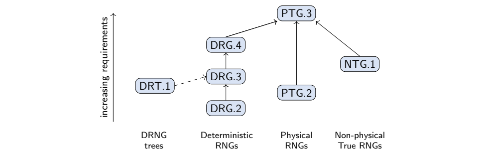
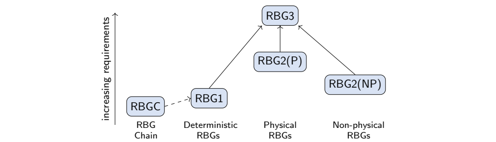
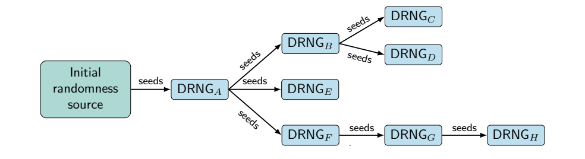
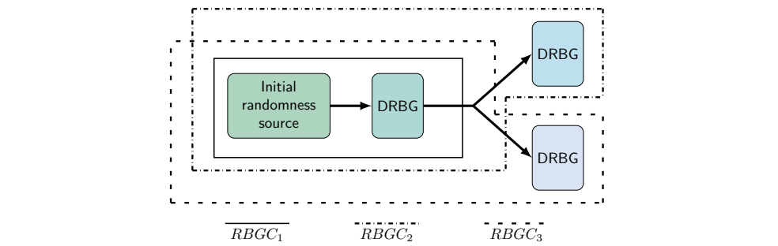
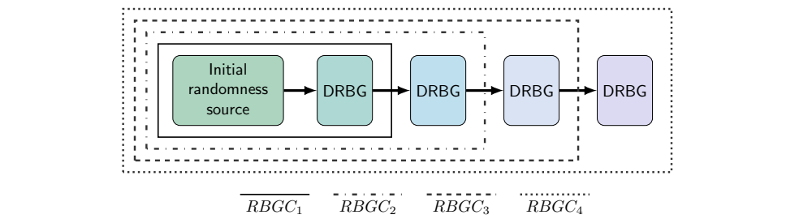

NIST IR 8446 日本語訳
英語タイトル : Bridging the Gap Between Standards on Random Number Generation: Comparison of SP 800-90 Series and AIS 20/31日本語タイトル : 乱数生成に関する標準間のギャップを埋める：SP 800-90 シリーズと AIS 20/31 の比較
公開日 : 2026-01-29
原文URL : https://csrc.nist.gov/pubs/ir/8446/final
翻訳編集 : 自動生成（有志による非公式の日本語訳）, 原文取得日 : 2026-10-31, 訳文 : 646 / 646 ブロック
[要約] NIST IR 8446 は、BSI と NIST が策定した暗号用乱数生成の標準およびガイドライン、すなわち AIS 20/31 と SP 800-90 シリーズを調査する報告書です。目的は、これらの刊行物を比較し、用語、前提、要件の類似点と相違点に焦点を当てることです。妥当性確認・認証の一般要件（コンディショニングと後処理、計算量的安全性の要件、エントロピー推定、ヘルステスト）を扱い、BSI の機能クラスと NIST の RBG 構成を比較します。関係者全員の間のコミュニケーションを改善し、共通理解を促進し、関連する標準間の不整合を減らして解消することも目的としています。
NIST Internal Report
NIST 内部報告書
NIST IR 8446
NIST IR 8446
Bridging the Gap Between Standards on Random Number Generation
乱数生成に関する標準間のギャップを埋める
Comparison of SP 800‐90 Series and AIS 20/31
SP 800‐90 シリーズと AIS 20/31 の比較
Elaine Barker John Kelsey Kerry McKay Johannes Mittmann Matthias Peter Werner Schindler Meltem Sönmez Turan
Elaine Barker John Kelsey Kerry McKay Johannes Mittmann Matthias Peter Werner Schindler Meltem Sönmez Turan
This publication is available free of charge from: https://doi.org/10.6028/NIST.IR.8446
本刊行物は次のサイトから無料で入手できます: https://doi.org/10.6028/NIST.IR.8446
NIST Internal Report
NIST 内部報告書
NIST IR 8446
NIST IR 8446
Bridging the Gap Between Standards on Random Number Generation
乱数生成に関する標準間のギャップを埋める
Comparison of SP 800‐90 Series and AIS 20/31
SP 800‐90 シリーズと AIS 20/31 の比較
Elaine Barker 1, John Kelsey 1, Kerry McKay 1, Johannes Mittmann 2, Matthias Peter 2, Werner Schindler 2, Meltem Sönmez Turan 1
Elaine Barker 1, John Kelsey 1, Kerry McKay 1, Johannes Mittmann 2, Matthias Peter 2, Werner Schindler 2, Meltem Sönmez Turan 1
1 Computer Security Division, Information Technology Laboratories, NIST, Gaithersburg, Maryland, USA
1 Computer Security Division, Information Technology Laboratories, NIST, Gaithersburg, Maryland, USA（米国メリーランド州ゲイサースバーグ、NIST 情報技術研究所 コンピュータセキュリティ部門）
2 Bundesamt für Sicherheit in der Informationstechnik (BSI), Germany
2 Bundesamt für Sicherheit in der Informationstechnik (BSI), Germany（ドイツ連邦情報セキュリティ庁）
This publication is available free of charge from: https://doi.org/10.6028/NIST.IR.8446
本刊行物は次のサイトから無料で入手できます: https://doi.org/10.6028/NIST.IR.8446
January 2026
2026年1月
U.S. Department of Commerce Howard Lutnick, Secretary
米国商務省 Howard Lutnick 長官
National Institute of Standards and Technology
国立標準技術研究所（National Institute of Standards and Technology）
Craig Burkhardt, Acting Under Secretary of Commerce for Standards and Technology and Acting NIST Director
Craig Burkhardt, 標準技術担当商務次官代行 兼 NIST 所長代行
NIST Technical Series Publications: https://www.nist.gov/nist‐research‐library/nist‐publications
NIST Technical Series Publications: https://www.nist.gov/nist‐research‐library/nist‐publications
Reports on Computer Systems Technology The Information Technology Laboratory (ITL) at the National Institute of Standards and Technology (NIST) promotes the U.S. economy and public welfare by providing technical leadership for the Nation’s measurement and standards infrastructure. ITL develops tests, test methods, reference data, proof of concept implementations, and technical analyses to advance the development and productive use of information technology. ITL’s responsibilities include the development of management, administrative, technical, and physical standards and guidelines for the cost‐effective security and privacy of other than national security‐related information in federal information systems.
コンピュータシステム技術に関する報告書 国立標準技術研究所（NIST）の情報技術研究所（ITL）は、国の計測・標準インフラに技術面でのリーダーシップを提供することで、米国経済と公共の福祉を促進しています。ITL は、情報技術の開発と生産的な利用を進めるために、試験、試験方法、参照データ、概念実証の実装、技術分析を開発しています。ITL の責務には、連邦情報システムにおける、国家安全保障関連以外の情報について、費用対効果の高いセキュリティとプライバシーを確保するための管理・運用・技術・物理面の標準とガイドラインの策定が含まれます。
References to Other Publications There may be references in this publication to other publications currently under development by NIST in accordance with its assigned statutory responsibilities. The information in this publication, including concepts and methodologies, may be used by federal agencies even before the completion of such companion publications. Thus, until each publication is completed, current requirements, guidelines, and procedures, where they exist, remain operative. For planning and transition purposes, federal agencies may wish to closely follow the development of these new publications by NIST.
他の刊行物への参照 本刊行物には、法令で定められた NIST の責務に従って現在策定中の、他の刊行物への参照が含まれる場合があります。そうした関連刊行物が完成する前であっても、本刊行物の情報（概念や方法論を含む）を連邦政府機関が利用してもかまいません。したがって、各刊行物が完成するまでは、現行の要件、ガイドライン、手順が存在する場合には、それらが引き続き有効です。計画と移行のため、連邦政府機関は、NIST によるこれらの新しい刊行物の策定状況を注意深く追うことを検討してもよいです。
Organizations are encouraged to review all draft publications during public comment periods and provide feedback to NIST. Many NIST cybersecurity publications, other than the ones noted above, are available at https://csrc.nist.gov/publications
組織には、パブリックコメント期間中にすべてのドラフト刊行物を確認し、NIST にフィードバックを提供することが奨励されています。上記以外の NIST のサイバーセキュリティ刊行物の多くは https://csrc.nist.gov/publications で入手できます。
Non‐Endorsement Disclaimer Certain equipment, instruments, software, or materials, commercial or non‐commercial, are identified in this paper in order to specify the experimental procedure adequately. Such identification does not imply recommendation or endorsement of any product or service by NIST, nor does it imply that the materials or equipment identified are necessarily the best available for the purpose.
非推奨の免責事項 本書では、実験手順を十分に特定するために、市販または非市販の特定の機器、装置、ソフトウェア、資料を挙げています。こうした特定は、NIST がいかなる製品やサービスも推奨または是認することを意味せず、挙げた資料や機器がその目的に最適であるとは限らないことも意味しません。
Publication History Approved by the NIST Editorial Review Board on February 4, 2025.
刊行履歴 2025年2月4日に NIST 編集審査委員会（Editorial Review Board）が承認しました。
Suggested Citation Elaine Barker, John Kelsey, Kerry McKay, Johannes Mittmann, Matthias Peter, Werner Schindler, Meltem Sönmez Turan (2026). Bridging the Gap Between Standards on Random Number Generation: Comparison of SP 800‐90 Series and AIS 20/31. (National Institute of Standards and Technology, Gaithersburg, MD) NIST Internal Report (IR) 8446. DOI:10.6028/NIST.IR.8446
推奨される引用形式 Elaine Barker, John Kelsey, Kerry McKay, Johannes Mittmann, Matthias Peter, Werner Schindler, Meltem Sönmez Turan (2026). Bridging the Gap Between Standards on Random Number Generation: Comparison of SP 800‐90 Series and AIS 20/31. (National Institute of Standards and Technology, Gaithersburg, MD) NIST Internal Report (IR) 8446. DOI:10.6028/NIST.IR.8446
Author Names and ORCID Identifiers Elaine Barker (0000‐0003‐0454‐0461); John Kelsey (0000‐0002‐3427‐1744); Kerry McKay (0000‐0002‐5956‐587X); Johannes Mittmann (0000‐0002‐9307‐1494); Matthias Peter (0000‐0003‐1080‐3432); Werner Schindler (0000‐0002‐3073‐0106); Meltem Sönmez Turan (0000‐0002‐1950‐713).
著者名と ORCID 識別子 Elaine Barker (0000‐0003‐0454‐0461); John Kelsey (0000‐0002‐3427‐1744); Kerry McKay (0000‐0002‐5956‐587X); Johannes Mittmann (0000‐0002‐9307‐1494); Matthias Peter (0000‐0003‐1080‐3432); Werner Schindler (0000‐0002‐3073‐0106); Meltem Sönmez Turan (0000‐0002‐1950‐713).
Additional Information Additional information about this publication is available at https://csrc.nist.gov/pubs/ir/8446/final, including related content, potential updates, and document history.
追加情報 本刊行物に関する追加情報（関連コンテンツ、更新の可能性、文書の履歴を含む）は https://csrc.nist.gov/pubs/ir/8446/final で入手できます。
Contact Information: rbg_comments@nist.gov
連絡先: rbg_comments@nist.gov
All comments are subject to release under the Freedom of Information Act (FOIA)
すべてのコメントは、情報自由法（FOIA）に基づく公開の対象となります。
Abstract
概要
This report studies the cryptographic random number generation standards and guidelines written by BSI and NIST, namely AIS 20/31 and the SP 800‐90 series. The aim of this report is to compare these publications, focusing on the similarities and differences of their terminology, assumptions, and requirements. This report also aims to improve the communications between all involved parties, promote a shared understanding, and reduce and resolve inconsistencies in related standards.
本報告書は、BSI と NIST が策定した暗号用乱数生成の標準およびガイドライン、すなわち AIS 20/31 と SP 800‐90 シリーズを調査します。本報告書の目的は、これらの刊行物を比較し、用語、前提、要件の類似点と相違点に焦点を当てることです。また、関係者全員の間のコミュニケーションを改善し、共通理解を促進し、関連する標準間の不整合を減らして解消することも目的としています。
Keywords
キーワード
cryptographic random number generation; entropy; terminology; validation.
cryptographic random number generation; entropy; terminology; validation.（暗号用乱数生成、エントロピー、用語、妥当性確認）
Acknowledgments
謝辞
The authors thank Hamilton Silberg (NIST), Jonas Fiege (BSI), and the members of the Cryptographic Module User Forum (CMUF) for fruitful discussions. The authors also wish to thank all individuals who submitted public comments for their valuable input.
著者らは、有益な議論をしてくださった Hamilton Silberg（NIST）、Jonas Fiege（BSI）、および暗号モジュールユーザーフォーラム（CMUF）のメンバーに感謝します。また、パブリックコメントを寄せて貴重な意見をくださったすべての方々にも感謝します。
Table of Contents
目次
List of Figures
図の一覧
List of Tables
表の一覧
1. Introduction
1. はじめに
The security of cryptographic mechanisms and protocols relies on the availability of high‐quality random numbers (e.g., to generate cryptographic keys, initialization vectors, nonces, salts, and masking values). The generation of these random numbers and validating their quality are challenging tasks. There are multiple standards to provide guidelines on generating random numbers to be used in cryptography [1–11]. These standards may differ in their assumptions, requirements, and even the definitions that they use.
暗号メカニズムとプロトコルのセキュリティは、高品質な乱数が利用できることに依存しています（たとえば、暗号鍵、初期化ベクトル、ナンス、ソルト、マスキング値の生成）。これらの乱数を生成し、その品質を妥当性確認することは、困難な作業です。暗号で使用する乱数の生成に関するガイドラインを提供する標準は複数あります [1–11]。これらの標準は、前提、要件、さらには使用する定義が異なる場合があります。
This report provides a study of the standards developed by the Bundesamt für Sicherheit in der Informationstechnik (BSI) and the National Institute of Standards and Technology (NIST) on random number generation. The terms random number generator (RNG) and random bit generator (RBG) are used interchangeably in this document.
本報告書は、乱数生成に関して、ドイツ連邦情報セキュリティ庁（Bundesamt für Sicherheit in der Informationstechnik、BSI）と国立標準技術研究所（NIST）が策定した標準を調査します。本書では、乱数生成器（RNG）と乱数ビット生成器（RBG）という用語を同じ意味で使用します。
The relevant standards developed by BSI are:
BSI が策定した関連する標準は次のとおりです。
•AIS 20, Functionality Classes and Evaluation Methodology for Deterministic Random Number Generators [4]
•AIS 20, Functionality Classes and Evaluation Methodology for Deterministic Random Number Generators [4]
•AIS 31, Functionality Classes and Evaluation for Physical Random Number Generators [5]
•AIS 31, Functionality Classes and Evaluation for Physical Random Number Generators [5]
•Mathematical‐technical reference to AIS 20 and AIS 31 A Proposal for Functionality Classes for Random Number Generators [6] (previous version: [12])
•Mathematical‐technical reference to AIS 20 and AIS 31 A Proposal for Functionality Classes for Random Number Generators [6]（前バージョン: [12]）
The relevant standards developed by NIST are:
NIST が策定した関連する標準は次のとおりです。
•SP 800‐90A, Recommendation for Random Number Generation Using Deterministic Random Bit Generators [1]
•SP 800‐90A, Recommendation for Random Number Generation Using Deterministic Random Bit Generators [1]
•SP 800‐90B, Recommendation for the Entropy Sources Used for Random Bit Generation [2]
•SP 800‐90B, Recommendation for the Entropy Sources Used for Random Bit Generation [2]
•SP 800‐90C, Recommendation for Random Bit Generator Constructions [3]
•SP 800‐90C, Recommendation for Random Bit Generator Constructions [3]
1.1. Random Number Generation Standards Developed by the BSI
1.1. BSI が策定した乱数生成の標準
AIS 20 and AIS 31 were developed by BSI and refer to a joint mathematical‐technical reference. This NIST Interagency Report (IR) 8446 considers version 3.0 of the mathematical‐technical reference [6]. AIS 20 specifies how deterministic RNGs will be evaluated in the German Common Criteria (CC) scheme, and it outlines an evaluation methodology for deterministic RNGs. Functionality classes with class‐specific requirements are defined for different types of deterministic RNGs. AIS 31 specifies how physical RNGs are to be evaluated in the German CC scheme, and it outlines an evaluation methodology for physical true RNGs (or simply, “physical RNGs”). Functionality classes with class‐specific requirements are defined for different types of physical RNGs.
AIS 20 と AIS 31 は BSI が策定したもので、共通の数学的・技術的リファレンスを参照しています。この NIST 機関間報告書（IR）8446 は、数学的・技術的リファレンスのバージョン 3.0 [6] を対象とします。AIS 20 は、ドイツのコモンクライテリア（CC）スキームにおいて決定論的 RNG をどのように評価するかを規定し、決定論的 RNG の評価方法論を概説しています。決定論的 RNG の種類ごとに、クラス固有の要件を伴う機能クラスが定義されています。AIS 31 は、ドイツの CC スキームにおいて物理 RNG をどのように評価するかを規定し、物理的な真の RNG（単に「物理 RNG」）の評価方法論を概説しています。物理 RNG の種類ごとに、クラス固有の要件を伴う機能クラスが定義されています。
The mathematical‐technical reference to AIS 20 and AIS 31 [6] is intended for developers, evaluators, and certifiers. It specifies functionality classes for deterministic RNGs, physical true RNGs, and non‐physical true RNGs. Furthermore, mathematical background is provided, and many examples are discussed in detail to explain the requirements of the functionality classes and the tasks of developers and evaluators. The mathematical‐technical reference is often loosely referenced as AIS 20, AIS 31, or AIS 20/31, depending on the context.
AIS 20 と AIS 31 の数学的・技術的リファレンス [6] は、開発者、評価者、認証者を対象としています。このリファレンスは、決定論的 RNG、物理的な真の RNG、非物理的な真の RNG の機能クラスを規定しています。さらに、数学的な背景を示し、機能クラスの要件と開発者・評価者の作業を説明するために、多くの例を詳しく論じています。この数学的・技術的リファレンスは、文脈に応じて、AIS 20、AIS 31、AIS 20/31 などと大まかに呼ばれることがよくあります。
A certification process according to the CC is carried out as follows:
CC に従った認証プロセスは、次のように実施されます。
•The applicant (usually the developer) delivers the following to the accredited evaluation lab: prototypes of the RNG (the RNG is usually a component of a larger target of evaluation), documentation and a description of the RNG, and evidence that the requirements of the claimed functionality class are fulfilled.
•申請者（通常は開発者）は、認定評価機関に次のものを提出します。RNG の試作品（RNG は通常、より大きな評価対象の構成要素です）、RNG の文書と説明、および申請する機能クラスの要件が満たされていることを示す証拠。
•The accredited lab evaluates the RNG according to AIS 20 or AIS 31 (and with regard to further criteria, such as implementation security), examines the documentation, and writes an evaluation report.
•認定評価機関は、AIS 20 または AIS 31 に従って（さらに実装のセキュリティなどの他の基準に関して）RNG を評価し、文書を調査し、評価報告書を作成します。
•The certification authority (e.g., BSI) checks the evaluation report and may demand additional evidence. If the certification authority is convinced that the (positive) evaluation result (of the RNG and the other evaluation aspects) is justified, a certificate is issued.
•認証機関（たとえば BSI）は、評価報告書を確認し、追加の証拠を求める場合があります。認証機関が、（RNG とその他の評価の観点についての）肯定的な評価結果が妥当であると確信すれば、証明書が発行されます。
1.2. Random Number Generation Standards Developed by NIST
1.2. NIST が策定した乱数生成の標準
SP 800‐90A, Recommendation for Random Number Generation Using Deterministic Random Bit Generators [1], specifies mechanisms for the generation of random bits using deterministic methods based on hash functions and block ciphers.
SP 800‐90A, Recommendation for Random Number Generation Using Deterministic Random Bit Generators [1] は、ハッシュ関数とブロック暗号に基づく決定論的な方法による乱数ビット生成のメカニズムを規定しています。
SP 800‐90B, Recommendation for the Entropy Sources Used for Random Bit Generation [2], specifies the design principles and requirements for the entropy sources used by random bit generators and tests for the validation of entropy sources.
SP 800‐90B, Recommendation for the Entropy Sources Used for Random Bit Generation [2] は、乱数ビット生成器が使用するエントロピー源の設計原則と要件、およびエントロピー源の妥当性確認のためのテストを規定しています。
SP 800‐90C, Recommendation for Random Bit Generator Constructions, specifies constructions for the implementation of random bit generators that include deterministic random bit generator mechanisms, as specified in SP 800‐90A, and that use entropy sources, as specified in SP 800‐90B.
SP 800‐90C, Recommendation for Random Bit Generator Constructions は、SP 800‐90A で規定された決定論的乱数ビット生成器メカニズムを含み、SP 800‐90B で規定されたエントロピー源を使用する、乱数ビット生成器の実装のための構成を規定しています。
The SP 800 90 series provides a basis for validation by the Cryptographic Algorithm Validation Program (CAVP) and Cryptographic Module Validation Program (CMVP) conducted by NIST and the Canadian Centre for CyberSecurity (CCCS) A submitting entity (e.g., a vendor) works with an accredited lab to submit their implementation for testing.
SP 800 90 シリーズは、NIST とカナダサイバーセキュリティセンター（CCCS）が実施する暗号アルゴリズム妥当性確認プログラム（CAVP）と暗号モジュール妥当性確認プログラム（CMVP）による妥当性確認の基礎を提供します。申請主体（たとえばベンダー）は、認定ラボと協力して、実装を試験のために提出します。
•For all SP 800‐90A Deterministic Random Bit Generators (DRBGs), including their underlying cryptographic primitives (e.g., HMAC, hash functions, AES), and the vetted conditioning components, vector sets are generated by the testing laboratory, and the lab downloads them for provision to the submitter. The submitter generates the responses and sends them to the lab. The lab uploads the received responses to the CAVP and, upon successful validation, requests certification.
•SP 800‐90A のすべての決定論的乱数ビット生成器（DRBG）について、その基礎となる暗号プリミティブ（たとえば HMAC、ハッシュ関数、AES）や審査済みのコンディショニングコンポーネントも含め、ベクトルセットは試験ラボが生成し、ラボがそれらをダウンロードして申請者に提供します。申請者は応答を生成してラボに送ります。ラボは受け取った応答を CAVP にアップロードし、妥当性確認に成功したら認証を要請します。
•For SP 800‐90B entropy sources, the submitter generates data files for each defined operating environment. The files include at least one million samples, as required by SP 800‐90B, along with the necessary restart data samples. The testing laboratory runs an entropy assessment tool and prepares an Entropy Assessment Report and Public Use Document that outline conformance to SP 800‐90B and how the entropy source can be used within a cryptographic module. The entropy source documentation is then reviewed by the CMVP. Once any review concerns are resolved, the entropy source can be certified.
•SP 800‐90B のエントロピー源について、申請者は、定義された動作環境ごとにデータファイルを生成します。ファイルには、SP 800‐90B が要求する少なくとも 100 万個のサンプルと、必要な再起動データサンプルが含まれます。試験ラボはエントロピー評価ツールを実行し、SP 800‐90B への適合性と、そのエントロピー源を暗号モジュール内でどのように使用できるかを示す、エントロピー評価報告書（Entropy Assessment Report）と公開用文書（Public Use Document）を作成します。その後、CMVP がエントロピー源の文書を審査します。審査上の懸念がすべて解消されれば、そのエントロピー源は認証されます。
•For SP 800‐90C RBG constructions, the testing laboratory prepares a Random Bit Generator Report that outlines conformance to SP 800‐90C. The document is reviewed by the CMVP. Once any review concerns are resolved, the random bit generator can be certified.
•SP 800‐90C の RBG 構成について、試験ラボは、SP 800‐90C への適合性を示す乱数ビット生成器報告書（Random Bit Generator Report）を作成します。この文書は CMVP が審査します。審査上の懸念がすべて解消されれば、その乱数ビット生成器は認証されます。
1.3. Aim and Organization
1.3. 目的と構成
The aim of this report is to compare standards and guidelines on cryptographic random number generation by focusing on the similarities and differences in their terminology, assumptions, and requirements. This report also aims to improve communications between all involved parties, promote a shared understanding, and reduce and resolve inconsistencies in related standards. In addition, this report is intended to assist in the validation and certification of a random number generator implementation in both the BSI and NIST validation/certification programs.
本報告書の目的は、暗号用乱数生成に関する標準とガイドラインを、用語、前提、要件の類似点と相違点に焦点を当てて比較することです。また、関係者全員の間のコミュニケーションを改善し、共通理解を促進し、関連する標準間の不整合を減らして解消することも目的としています。さらに、本報告書は、BSI と NIST の双方の妥当性確認・認証プログラムにおいて、乱数生成器の実装の妥当性確認と認証を支援することを意図しています。
Section 2 discusses general validation and certification requirements related to conditioning, post‐processing, computational security, entropy estimation, and health tests. Section 3 examines the similarities and differences between the functionality classes in AIS 20/31 and the constructions specified in SP 800‐90C. Section 4 provides a comparison of the terminology used in the BSI and NIST standards.
第 2 節では、コンディショニング、後処理、計算量的安全性、エントロピー推定、ヘルステストに関する、妥当性確認と認証の一般要件を論じます。第 3 節では、AIS 20/31 の機能クラスと SP 800‐90C で規定された構成の類似点と相違点を検討します。第 4 節では、BSI と NIST の標準で使用される用語を比較します。
2. General Validation/Certification Requirements
2. 妥当性確認・認証の一般要件
This section compares the BSI and NIST standards based on their various requirements, including conditioning, post‐processing, computational security requirements, entropy estimation, and health tests.
本節では、コンディショニング、後処理、計算量的安全性の要件、エントロピー推定、ヘルステストなど、さまざまな要件に基づいて BSI と NIST の標準を比較します。
2.1. Conditioning and Post‐Processing
2.1. コンディショニングと後処理
The outputs of noise sources may have statistical biases and can include dependencies. The terms conditioning and post‐processing are used interchangeably to denote the process of reducing such bias and improving the statistical quality of these outputs. While these deterministic functions do not increase the amount of entropy, the entropy rate of the entropy source output (i.e., the amount of entropy per bit) can increase if the conditioning component compresses the output of the noise source.
ノイズソースの出力には、統計的な偏りがあったり、依存関係が含まれたりする場合があります。コンディショニングと後処理という用語は、そのような偏りを減らし、出力の統計的品質を向上させる処理を表すために、同じ意味で使用されます。これらの決定論的関数はエントロピーの量を増やしませんが、コンディショニングコンポーネントがノイズソースの出力を圧縮する場合には、エントロピー源の出力のエントロピーレート（すなわち 1 ビットあたりのエントロピーの量）が増加することがあります。
Some examples of simple conditioning components are the Von Neuman’s method [13], Samuelson’s method [14], and Peres’ method [15]. Conditioning components can also be cryptographic functions, such as the HMAC construction [16] using SHA‐256. In addition to improving the statistical quality of the outputs, cryptographic post‐processing/conditioning algorithms can provide additional security assurances when the underlying randomness source fails.
単純なコンディショニングコンポーネントの例には、Von Neuman の方法 [13]、Samuelson の方法 [14]、Peres の方法 [15] があります。コンディショニングコンポーネントは、SHA‐256 を用いた HMAC 構成 [16] のような暗号関数であってもかまいません。暗号による後処理・コンディショニングアルゴリズムは、出力の統計的品質を向上させることに加えて、基礎となるランダム性源が故障した場合に、追加のセキュリティ保証を提供できます。
Non‐cryptographic conditioning components should be selected based on the stochastic model of the noise or entropy source outputs. However, the stochastic model usually models the raw random numbers from the noise source, ideally providing a set of probability distributions that contains the true distribution of the raw random numbers. At a minimum, the stochastic model considers particular aspects that provide entropy. This suffices if it can be shown that the neglected effects (e.g., of any non‐credited entropy contributions) do not lower the entropy.
非暗号のコンディショニングコンポーネントは、ノイズソースまたはエントロピー源の出力の確率モデルに基づいて選択すべきです。ただし、確率モデルは通常、ノイズソースの生の乱数をモデル化するもので、理想的には、生の乱数の真の分布を含む確率分布の集合を与えます。確率モデルは、少なくとも、エントロピーをもたらす特定の側面を考慮します。無視された影響（たとえば、エントロピーとして計上されない寄与）がエントロピーを下げないことを示せるなら、それで十分です。
On the basis of the stochastic model and depending on the post‐processing algorithm used, a lower entropy bound for the output values is determined. In principle, a stochastic model can also provide distributions of the output values. However, unless a very simple algorithmic post‐processing algorithm is applied (e.g., XORing non‐overlapping pairs of binomially distributed raw random numbers), it is often infeasible to specify the distributions of the output bits after post‐processing/conditioning.
確率モデルと、使用する後処理アルゴリズムに基づいて、出力値のエントロピーの下限が決定されます。原理的には、確率モデルは出力値の分布も与えることができます。しかし、非常に単純なアルゴリズムによる後処理（たとえば、二項分布に従う生の乱数の重複しないペアの XOR）を適用する場合を除き、後処理・コンディショニングの後の出力ビットの分布を特定することは、多くの場合不可能です。
In AIS 20/31, stochastic models are only required for physical noise sources. If the post‐processing algorithm/conditioning component uses cryptographic algorithms, the guaranteed entropy bound of the random bits before conditioning is the most relevant.
AIS 20/31 では、確率モデルが必要となるのは物理ノイズソースだけです。後処理アルゴリズム・コンディショニングコンポーネントが暗号アルゴリズムを使用する場合は、コンディショニング前の乱数ビットについて保証されたエントロピーの下限が最も重要です。
2.2. Computational Security Requirements
2.2. 計算量的安全性の要件
The desired properties of random numbers used for cryptographic applications are that they be unpredictable, unbiased, and independent. Without knowing the output of the randomness source, the output of the random number generators should be difficult to distinguish from an ideal random sequence for an adversary with limited computational power. A practical RBG/RNG aims to approximate an ideal randomness source or ideal RNG.
暗号アプリケーションで使用する乱数に望まれる性質は、予測不可能で、偏りがなく、独立していることです。ランダム性源の出力を知らなければ、計算能力が限られた攻撃者にとって、乱数生成器の出力は理想的な乱数列と区別することが困難です。実用的な RBG/RNG は、理想的なランダム性源または理想的な RNG に近似することを目指します。
The security of random number generators depends on the unpredictability of the noise source output (i.e., information‐theoretic security quantified in entropy) and on algorithmic properties (i.e., computational security quantified as security strength). To achieve computational security, high‐entropy seed material from a true RNG or from an entropy source is required, at least initially. For higher assurance, a periodic or continuous influx of high‐entropy input may be desirable. AIS 20/31 distinguishes between “additional input” and “high‐entropy additional input.” Additional input can be included in each request. The entropy of this data can be large, small, or even zero. In contrast, the term high‐entropy additional input data contain enough entropy to ensure enhanced forward secrecy.
乱数生成器のセキュリティは、ノイズソースの出力の予測不可能性（すなわち、エントロピーで定量化される情報理論的安全性）と、アルゴリズムの性質（すなわち、セキュリティ強度で定量化される計算量的安全性）に依存します。計算量的安全性を達成するには、少なくとも初期段階で、真の RNG またはエントロピー源からの高エントロピーのシード素材が必要です。より高い保証のためには、高エントロピーの入力を定期的または継続的に流入させることが望ましい場合があります。AIS 20/31 は、「追加入力」と「高エントロピー追加入力」を区別しています。追加入力は各要求に含めることができます。このデータのエントロピーは、大きくても、小さくても、ゼロでもかまいません。これに対して、高エントロピー追加入力データは、前方秘匿性の強化を確保するのに十分なエントロピーを含みます。
BSI and NIST documents require assurance that an adversary (i.e., an attacker) cannot use knowledge of recent values to determine earlier outputs. An RNG that conforms to AIS 20 provides backward secrecy and may provide enhanced backward secrecy, while an RBG that conforms to SP 800‐90 has been specified to provide backtracking resistance. Backtracking resistance is a stronger security claim than enhanced backward secrecy. However, they are conceptually similar and can usually be considered equivalent in practice. The relationship between backward security requirements is depicted in Fig. 1.
BSI と NIST の文書はいずれも、攻撃者が最近の値の知識を用いて以前の出力を特定することはできない、という保証を求めています。AIS 20 に準拠する RNG は後方秘匿性を提供し、強化された後方秘匿性を提供する場合があります。一方、SP 800‐90 に準拠する RBG は、バックトラッキング耐性を提供するよう規定されています。バックトラッキング耐性は、強化された後方秘匿性よりも強いセキュリティの主張です。ただし、両者は概念的に類似しており、実際にはたいてい同等とみなせます。後方セキュリティ要件の関係を図 1 に示します。
Similarly, both sets of documents include requirements that are intended to limit an adversary’s ability to determine future outputs. An RNG that conforms to AIS 20 provides forward secrecy and may provide a capability for enhanced forward secrecy, while an RBG that conforms to SP 800‐90 has been specified to provide a capability for forward secrecy and may provide a capability for prediction resistance. Enhanced forward secrecy and prediction resistance are conceptually similar and are achieved by the insertion of sufficient amounts of fresh entropy. The relationship between forward security requirements is depicted in Fig. 2.
同様に、両方の文書群に、攻撃者が将来の出力を特定する能力を制限することを意図した要件が含まれています。AIS 20 に準拠する RNG は前方秘匿性を提供し、強化された前方秘匿性の能力を提供する場合があります。一方、SP 800‐90 に準拠する RBG は、前方秘匿性の能力を提供するよう規定されており、予測耐性の能力を提供する場合があります。強化された前方秘匿性と予測耐性は概念的に類似しており、十分な量の新しいエントロピーを挿入することで達成されます。前方セキュリティ要件の関係を図 2 に示します。

安全性の主張を強さの順に並べた2つの図が左右に並んでいます。どちらにも縦の矢印「increasing claim strength」（主張の強さが増す方向）があり、角の丸い箱が下から上へ3つ積まれています。左は「Backward secrecy」「Enhanced backward secrecy」「Backtracking resistance」で、上の2つは「Conceptually similar」（概念的に類似）と書かれた破線の枠で囲まれています。右は「Forward secrecy」「Enhanced forward secrecy」「Prediction resistance」で、同じく上の2つが「Conceptually similar」の破線の枠で囲まれています。
Fig. 1. Relationship of backward security claims
図 1. 後方安全性の主張の関係
Fig. 2. Relationship of forward security claims
図 2. 前方安全性の主張の関係
2.3. Entropy Estimation
2.3. エントロピー推定
A central goal of the security evaluation of a true RNG/RBG is the verification of a lower entropy bound for the random numbers that are output. For deterministic RNGs/RBGs, the notion of entropy is needed to quantify the randomness of seed material or high‐entropy additional input.
真の RNG/RBG のセキュリティ評価における中心的な目標は、出力される乱数のエントロピーの下限を検証することです。決定論的 RNG/RBG では、シード素材や高エントロピー追加入力のランダム性を定量化するために、エントロピーの概念が必要です。
Entropy estimation is a challenging problem because the distribution of the output values (i.e., the distribution of the underlying random variables) is a priori unknown. Trustworthy entropy estimation requires knowledge of the underlying nondeterministic process being used by the noise source, and black box statistical methods can only serve as a sanity check on that kind of estimate.
エントロピー推定は、出力値の分布（すなわち、基礎となる確率変数の分布）が事前には未知であるため、困難な問題です。信頼できるエントロピー推定には、ノイズソースが使用している基礎となる非決定論的プロセスの知識が必要であり、ブラックボックスの統計的方法は、その種の推定の健全性チェックとしてしか役立ちません。
Two commonly used measures of entropy are Shannon entropy and min‐entropy. To be more precise, Shannon entropy and min‐entropy are the most important representatives of Rényi entropy. If a discrete random variable \(X\) takes outcomes \(x_i \in \mathscr{A}\), each with probability \(\Pr(X = x_j) = p_j\), then
エントロピーの尺度としてよく使われるものが 2 つあります。シャノンエントロピーと最小エントロピーです。より正確には、シャノンエントロピーと最小エントロピーは、レニーエントロピーの最も重要な代表です。離散確率変数 \(X\) が結果 \(x_i \in \mathscr{A}\) をとり、それぞれの確率が \(\Pr(X = x_j) = p_j\) であるとすると、次のようになります。
\[\begin{aligned} H(X) &= -\sum_j p_j \log_2(p_j) && \text{(Shannon entropy)},\\ H_\infty(X) &= \min_j\left(-\log_2(p_j)\right) && \text{(min-entropy)}. \end{aligned}\]
\[\begin{aligned} H(X) &= -\sum_j p_j \log_2(p_j) && \text{(Shannon entropy)},\\ H_\infty(X) &= \min_j\left(-\log_2(p_j)\right) && \text{(min-entropy)}. \end{aligned}\]
A value \(x\) that is assumed by a random variable is called a realization of \(X\). The min‐entropy is determined by the largest probability with which a value is assumed by \(X\). This value is the most promising single guess. While min‐entropy considers the worst case, Shannon entropy aims at the average case.
確率変数がとる値 \(x\) は、\(X\) の実現値と呼ばれます。最小エントロピーは、\(X\) がある値をとる最大の確率によって決まります。この値は、最も見込みのある単一の推測です。最小エントロピーは最悪の場合を考慮するのに対し、シャノンエントロピーは平均的な場合を対象とします。
In the context of true random number or bit generators, sequences \(x_1, x_2, \ldots\) of random numbers are considered, with each element interpreted as a realization of the corresponding random variable \(X_1, X_2, \ldots\). Unless these random variables are independent and identically distributed (iid), the central task in evaluating a generator is to derive a trustworthy lower entropy bound per output bit. For physical RNGs, this requires formulating, justifying, and analyzing the stochastic model with a focus on entropy. The technical reference [6] contains several examples that deal with entropy calculation. Both the SP 800‐90 series and AIS 20/31 use min‐entropy. However, for all but one functionality class, AIS 20/31 alternatively allows the use of Shannon entropy under suitable conditions.
真の乱数・ビット生成器の文脈では、乱数の列 \(x_1, x_2, \ldots\) を考え、各要素を、対応する確率変数 \(X_1, X_2, \ldots\) の実現値と解釈します。これらの確率変数が独立同分布（iid）でない限り、生成器の評価における中心的な課題は、出力ビットあたりの信頼できるエントロピーの下限を導出することです。物理 RNG では、そのためにエントロピーに焦点を当てた確率モデルを定式化し、正当性を示し、分析する必要があります。技術リファレンス [6] には、エントロピーの計算を扱ういくつかの例が含まれています。SP 800‐90 シリーズと AIS 20/31 はどちらも最小エントロピーを使用します。ただし、AIS 20/31 は、1 つの機能クラスを除くすべてで、適切な条件の下でシャノンエントロピーを代わりに使用することも認めています。
2.4. Health Tests
2.4. ヘルステスト
Health tests must be performed on the nondeterministic components of a randomness source and any deterministic components within the RBG/RNG, including within an SP 800‐90B entropy source and AIS 20/31 physical true RNGs (PTRNGs) and non‐physical true RNGs (NPTRNGs). AIS 20/31 uses the terms “start‐up tests,” “online tests,” and “total failure tests” instead of “health tests.”
ヘルステストは、ランダム性源の非決定論的コンポーネントと、RBG/RNG 内の決定論的コンポーネントに対して実施しなければなりません。これには、SP 800‐90B のエントロピー源の内部、および AIS 20/31 の物理的な真の RNG（PTRNG）と非物理的な真の RNG（NPTRNG）が含まれます。AIS 20/31 は、「ヘルステスト」の代わりに「起動時テスト」「オンラインテスト」「完全故障テスト」という用語を使用します。
For nondeterministic components (i.e., noise sources), the process of extracting randomness from nondeterministic events is fragile and can fail due to various factors, such as environmental conditions, manufacturing tolerances and defects, or aging. Health tests on the noise sources are used to avoid these failures and check that the generator continues to perform as desired. The generator indicates an error condition (e.g., triggers a noise alarm) when abnormal behavior is detected. Health tests are typically designed as statistical tests, and the number of false positive alarms are limited by type I error probability.
非決定論的コンポーネント（すなわちノイズソース）では、非決定論的事象からランダム性を抽出するプロセスは脆弱で、環境条件、製造上の公差や欠陥、経年劣化などのさまざまな要因により失敗する可能性があります。ノイズソースに対するヘルステストは、こうした失敗を避け、生成器が望みどおりに動作し続けていることを確認するために使用されます。生成器は、異常な動作を検出したときにエラー状態を示します（たとえば、ノイズアラームを発動します）。ヘルステストは通常、統計的検定として設計され、誤検知アラームの数は第一種の過誤確率によって制限されます。
For deterministic components, known answer tests are typically conducted at RBG/RNG start‐up to ensure the correct operation of a device, algorithm, or function before its first use. They may also be performed on demand.
決定論的コンポーネントについては、デバイス、アルゴリズム、関数が最初に使用される前に正しく動作することを確認するため、通常、RBG/RNG の起動時に既知解テストを実施します。要求に応じて実施することもあります。
2.4.1. SP 800‐90B Health Tests on Noise Sources
2.4.1. ノイズソースに対する SP 800‐90B のヘルステスト
SP 800‐90B requires three types of tests on the noise source output within an entropy source (after digitization but before any conditioning is performed):
SP 800‐90B は、エントロピー源内のノイズソースの出力に対して（デジタル化の後、コンディショニングを行う前に）、3 種類のテストを要求しています。
•A start‐up test is performed every time the entropy source is initialized or powered up. This test is carried out on the noise source output before any output is released from the entropy source.
•起動時テストは、エントロピー源が初期化または電源投入されるたびに実施します。このテストは、エントロピー源から出力が放出される前に、ノイズソースの出力に対して実施します。
•Continuous tests are performed within an entropy source on the output of its noise source in order to gain some level of assurance that the noise source is working correctly prior to producing each output from the entropy source.
•継続テストは、エントロピー源の各出力を生成する前に、ノイズソースが正しく動作していることをある程度保証するため、エントロピー源内でそのノイズソースの出力に対して実施します。
•On‐demand tests are a type of health test that is available to be run whenever a user or a relying component requests it.
•オンデマンドテストは、ユーザーまたは依存コンポーネントが要求したときにいつでも実行できるヘルステストの一種です。
SP 800‐90B defines two continuous health tests that target generic failure conditions: the repetition count test and the adaptive proportion test. Developers may define their own tests that detect the same failures, additional failures, or both.
SP 800‐90B は、一般的な故障状態を対象とする 2 つの継続ヘルステスト、すなわち反復回数テスト（repetition count test）と適応比率テスト（adaptive proportion test）を定義しています。開発者は、同じ故障、追加の故障、またはその両方を検出する独自のテストを定義してもかまいません。
2.4.2. AIS 20/31 Health Tests on Noise Sources
2.4.2. ノイズソースに対する AIS 20/31 のヘルステスト
For PTRNGs, AIS 31 requires three types of tests:
PTRNG について、AIS 31 は 3 種類のテストを要求しています。
•A start‐up test is performed after the RNG has been started. Its task is to detect a total failure of the noise source and severe statistical weaknesses. No random numbers are output before the start‐up test has been successfully completed.
•起動時テストは、RNG が起動された後に実施します。その役割は、ノイズソースの完全故障と深刻な統計的弱点を検出することです。起動時テストが正常に完了するまで、乱数は出力されません。
•A total failure test detects the occurrence of a total failure of the noise source during PTRNG operation. It prevents the output of random numbers that have small or even no entropy due to the total failure of the noise source.
•完全故障テストは、PTRNG の動作中にノイズソースの完全故障が発生したことを検出します。ノイズソースの完全故障によって、エントロピーが小さい、あるいはまったくない乱数が出力されることを防ぎます。
•An online test checks the quality of the raw random numbers produced by the noise source while the RNG is in operation. The online test is intended to quickly detect non‐tolerable entropy defects of the raw random numbers.
•オンラインテストは、RNG の動作中にノイズソースが生成する生の乱数の品質を検査します。オンラインテストは、生の乱数に許容できないエントロピーの欠陥があることを迅速に検出することを意図しています。
There are no approved tests specified, but the applicant for a certificate (usually the developer) has to provide evidence that the selected tests perform their tasks. Usually, start‐up tests and online tests are realized by statistical tests or by a test procedure that applies several statistical tests, and total failure tests typically apply statistical tests or physical measurements. In particular, for physical RNGs, the total failure test should be based on a sound failure analysis of the physical noise source, and the online test has to be tailored to the stochastic model of the noise source.
承認されたテストは規定されていませんが、証明書の申請者（通常は開発者）は、選択したテストがその役割を果たすことを示す証拠を提供しなければなりません。通常、起動時テストとオンラインテストは、統計的検定、または複数の統計的検定を適用する検定手順によって実施され、完全故障テストでは通常、統計的検定または物理的な測定が適用されます。特に物理 RNG では、完全故障テストは物理ノイズソースの確かな故障分析に基づくべきです。オンラインテストはノイズソースの確率モデルに合わせて調整しなければなりません。
For NPTRNGs, the raw random numbers are also tested. The aims are similar to those for physical RNGs but, in particular, the requirements on the online test are lower since no stochastic model for the noise source is required. For NPTRNGs, AIS 20/31 simply speaks of “testing” but does not apply the same terms as are used for physical RNGs. Testing is needed to confirm the entropy claim. The results of testing may affect the (heuristic) entropy counter.
NPTRNG では、生の乱数もテストされます。目的は物理 RNG の場合と似ていますが、ノイズソースの確率モデルが不要であるため、特にオンラインテストに対する要件は低くなっています。NPTRNG について、AIS 20/31 は単に「テスト」と言い、物理 RNG と同じ用語は適用していません。テストは、エントロピーの主張を確認するために必要です。テストの結果は、（ヒューリスティックな）エントロピーカウンタに影響する場合があります。
3. Functionality Classes vs. RBG Constructions
3. 機能クラスと RBG 構成
Section 3 provides information to support developers in constructing designs that can be successfully validated under both the BSI and NIST/CSE programs. The functionality classes from AIS 20/31 and the constructions from SP 800‐90C are briefly explained in Sec. 3.1 and 3.2. Section 3.3 discusses the similarities and differences between corresponding functionality classes and constructions.
第 3 節は、BSI と NIST/CSE の両方のプログラムで妥当性確認に成功できる設計を開発者が構築することを支援する情報を提供します。AIS 20/31 の機能クラスと SP 800‐90C の構成は、3.1 節と 3.2 節で簡潔に説明します。3.3 節では、対応する機能クラスと構成の類似点と相違点を論じます。
3.1. Functionality Classes of BSI
3.1. BSI の機能クラス
Rather than specifying approved RNG designs, AIS 20/31 defines seven functionality classes with security requirements that an RNG has to fulfill in order to comply with a targeted functionality class. This section explains the main features of the functionality classes, and application notes in AIS 20/31 illustrate these security requirements.
AIS 20/31 は、承認された RNG 設計を規定するのではなく、RNG が目標とする機能クラスに準拠するために満たさなければならないセキュリティ要件を伴う、7 つの機能クラスを定義しています。本節では機能クラスの主な特徴を説明し、AIS 20/31 の適用上の注記がこれらのセキュリティ要件を例示します。
The functionality classes are listed below in the same order as they appear in AIS 20/31. Functionality classes DRG.2, DRG.3, DRG.4, and DRT.1 define requirements for deterministic RNGs (DRNGs). The objects of functionality class DRT.1 are whole DRNG trees rather than individual DRNGs. Functionality classes PTG.2 and PTG.3 are physical true RNGs (PTRNGs), and functionality class NTG.1 describes non‐physical true RNGs (NPTRNGs).
機能クラスを、AIS 20/31 に現れる順に以下に示します。機能クラス DRG.2、DRG.3、DRG.4、DRT.1 は、決定論的 RNG（DRNG）の要件を定義します。機能クラス DRT.1 の対象は、個々の DRNG ではなく、DRNG ツリー全体です。機能クラス PTG.2 と PTG.3 は物理的な真の RNG（PTRNG）であり、機能クラス NTG.1 は非物理的な真の RNG（NPTRNG）を記述します。
Figure 3 shows the functionality classes in AIS 20/31 and the relationship between them. Several arrows point from one functionality class to another (e.g., from DRG.2 to DRG.3), whereby the functionality class to which the arrow points has stronger requirements. Figure 3 illustrates the hierarchical order. Not all functionality classes are comparable, but PTG.3 is the strongest functionality class. The arrow from DRT.1 to DRG.3 is dotted, and functionality class DRT.1 is placed slightly below DRG.3; cf. the explanations to functionality class DRT.1 below.
図 3 は、AIS 20/31 の機能クラスとそれらの関係を示しています。複数の矢印が 1 つの機能クラスから別のクラス（たとえば DRG.2 から DRG.3）を指しており、矢印の指す先の機能クラスの方がより強い要件を持ちます。図 3 は階層的な順序を示しています。すべての機能クラスが比較できるわけではありませんが、PTG.3 が最も強い機能クラスです。DRT.1 から DRG.3 への矢印は点線で、機能クラス DRT.1 は DRG.3 のやや下に配置されています。以下の機能クラス DRT.1 の説明を参照してください。
The functionality classes DRG.3, DRG.4, DRT.1, PTG.2, PTG.3, and NTG.1 have equivalents in the SP 800‐90C RBG constructions. Similarities and differences between the functionality classes and the RBG constructions are explained in Sec. 3.3.
機能クラス DRG.3、DRG.4、DRT.1、PTG.2、PTG.3、NTG.1 には、SP 800‐90C の RBG 構成に同等のものがあります。機能クラスと RBG 構成の類似点と相違点は、3.3 節で説明します。
DRG.2. Functionality class DRG.2 ensures backward secrecy and forward secrecy. Since AIS 20/31 does not specify approved designs, a security proof is required.
DRG.2。機能クラス DRG.2 は、後方秘匿性と前方秘匿性を確保します。AIS 20/31 は承認された設計を規定していないため、セキュリティ証明が必要です。
The effective internal state must have at least 246 bits. The min‐entropy requirement of the effective internal state for seeding and reseeding is at least 240 bits. In the case of reseeding, the requirement for at least 240 bits of fresh entropy is intended to prevent an adversary who knows the previous internal state from predicting future outputs after sufficient fresh entropy is inserted into the DRNG.
有効な内部状態は、少なくとも 246 ビットなければなりません。シードと再シードにおける有効な内部状態の最小エントロピーの要件は、少なくとも 240 ビットです。再シードの場合、少なくとも 240 ビットの新しいエントロピーという要件は、十分な新しいエントロピーが DRNG に挿入された後に、以前の内部状態を知っている攻撃者が将来の出力を予測することを防ぐためのものです。

AIS 20/31 の機能クラスを、縦の矢印「increasing requirements」（要件が増す方向）に沿って4列に並べた図です。列は「DRNG trees」（DRT.1）、「Deterministic RNGs」（下から DRG.2、DRG.3、DRG.4）、「Physical RNGs」（PTG.2 の上に PTG.3）、「Non-physical True RNGs」（NTG.1）です。矢印は DRG.2 から DRG.3、DRG.3 から DRG.4、DRG.4 から PTG.3、PTG.2 から PTG.3、NTG.1 から PTG.3 へ引かれ、DRT.1 から DRG.3 へは破線の矢印があります。
Fig. 3. AIS 20/31 functionality classes
図 3. AIS 20/31 の機能クラス
Under suitable conditions, namely when a PTG.2‐ or PTG.3‐compliant PTRNG (or more generally, a PTRNG generating time‐local stationarily distributed raw random numbers) is used as the randomness source, an alternative entropy condition (i.e., ≥ 250 bits of Shannon entropy for the effective internal state) can be applied. Seeding and reseeding use a true RNG (with a physical or non‐physical noise source) as the randomness source or, alternatively, a DRG.4 compliant DRNG. In the latter case, enhanced forward secrecy must be ensured by the insertion of sufficient fresh entropy into the DRG.4‐compliant DRNG before generating the seed material for the DRG.2 implementation.
適切な条件の下、すなわち、PTG.2 または PTG.3 に準拠する PTRNG（より一般的には、時間局所的に定常分布する生の乱数を生成する PTRNG）をランダム性源として使用する場合には、代替のエントロピー条件（すなわち、有効な内部状態のシャノンエントロピーが 250 ビット以上）を適用できます。シードと再シードでは、ランダム性源として（物理または非物理のノイズソースを持つ）真の RNG、あるいは代わりに DRG.4 に準拠する DRNG を使用します。後者の場合、DRG.2 の実装のためのシード素材を生成する前に、DRG.4 準拠の DRNG に十分な新しいエントロピーを挿入することで、強化された前方秘匿性を確保しなければなりません。
Usually, a true RNG belongs to the functionality class PTG.2, PTG.3, or NTG.1. This is the easiest way for the applicant to meet the evaluation requirements, as it saves providing proofs for the entropy of its output data (i.e., proofs about the entropy of the seed material). In principle, true RNGs that are not compliant with one of these classes are also possible but require additional security proofs.
通常、真の RNG は機能クラス PTG.2、PTG.3、NTG.1 のいずれかに属します。これは、出力データのエントロピーの証明（すなわち、シード素材のエントロピーに関する証明）を提供せずに評価要件を満たせるため、申請者にとって最も容易な方法です。原理的には、これらのクラスのいずれにも準拠しない真の RNG も可能ですが、追加のセキュリティ証明が必要です。
DRG.3. Compared with DRG.2, functionality class DRG.3 additionally ensures enhanced backward secrecy. This requires an additional security proof. The requirements on the size and on the min‐entropy for the effective internal state are identical to class DRG.2.
DRG.3。DRG.2 と比べて、機能クラス DRG.3 は、強化された後方秘匿性を追加で確保します。そのためには、追加のセキュリティ証明が必要です。有効な内部状態のサイズと最小エントロピーに関する要件は、クラス DRG.2 と同一です。
Usually, the seeding and reseeding of functionality class DRG.3 use a true RNG (with a physical or non‐physical noise source) as the randomness source. Like the DRG.2 functionality class, the randomness source is (but is not limited to) functionality classes PTG.2, PTG.3, NTG.1, and DRG.4 (under the condition that fresh entropy is inserted into the DRG.4‐compliant DRNG before it generates the seed material).
通常、機能クラス DRG.3 のシードと再シードでは、ランダム性源として（物理または非物理のノイズソースを持つ）真の RNG を使用します。機能クラス DRG.2 と同様に、ランダム性源は機能クラス PTG.2、PTG.3、NTG.1、DRG.4（DRG.4 準拠の DRNG がシード素材を生成する前に新しいエントロピーを挿入するという条件の下）などですが、これらに限定されません。
DRG.4. Compared with DRG.3, functionality class DRG.4 additionally ensures the capability of providing enhanced forward secrecy and requires an additional security proof. Enhanced forward secrecy can be provided by reseeding or by the insertion of high‐entropy additional input. In both cases, the effective internal state shall have at least 240 bits of min‐entropy (relative to an adversary who knows the previous internal state). Under suitable conditions, at least 250 bits of Shannon entropy is also possible. This prevents an adversary who knows the previous internal state from determining the next outputs (i.e., internal random numbers) with practical computational effort.
DRG.4。DRG.3 と比べて、機能クラス DRG.4 は、強化された前方秘匿性を提供する能力を追加で確保し、追加のセキュリティ証明を必要とします。強化された前方秘匿性は、再シードによって、または高エントロピー追加入力の挿入によって提供できます。どちらの場合も、有効な内部状態は（以前の内部状態を知っている攻撃者に対して）少なくとも 240 ビットの最小エントロピーを持たなければなりません。適切な条件の下では、少なくとも 250 ビットのシャノンエントロピーでも可能です。これにより、以前の内部状態を知っている攻撃者が、現実的な計算量で次の出力（すなわち内部乱数）を特定することを防ぎます。
The requirements on the size (at least 246 bits) and on the min‐entropy requirement (at least 240 bits) for the effective internal state are identical to functionality classes DRG.2 and DRG.3. The min‐entropy requirement also applies to the insertion of high‐entropy additional input.
有効な内部状態のサイズ（少なくとも 246 ビット）と最小エントロピーの要件（少なくとも 240 ビット）は、機能クラス DRG.2 および DRG.3 と同一です。最小エントロピーの要件は、高エントロピー追加入力の挿入にも適用されます。
The DRNG must be able to trigger reseeding or acquire high‐entropy additional input to provide enhanced forward secrecy. This may be done on demand, in response to some condition, or after a certain time span has elapsed (non‐exclusive options). In any case, enhanced forward secrecy always has to be ensured by the addition of sufficient fresh entropy each time that \(2^{17}\) internal random number bits have been generated, although an ongoing generate request need not be interrupted.
DRNG は、強化された前方秘匿性を提供するために、再シードを開始するか、高エントロピー追加入力を取得できなければなりません。これは、要求に応じて、ある条件に応じて、または一定の時間が経過した後に行ってかまいません（これらは排他的な選択肢ではありません）。いずれの場合も、\(2^{17}\) ビットの内部乱数が生成されるたびに、十分な新しいエントロピーを追加して、強化された前方秘匿性を常に確保しなければなりません。ただし、進行中の生成要求を中断する必要はありません。
Seeding, reseeding, and the insertion of high‐entropy additional input require the use of a suitable physical RNG. In contrast to functionality classes DRG.2 and DRG.3, the use of non‐physical true RNGs are not allowed for functionality class DRG.4. In particular, the randomness source for functionality class DRG.4 is (but is not limited to) a PTG.2‐ or PTG.3‐compliant physical RNG. Again, it is possible to use a physical RNG that is not compliant with PTG.2 or PTG.3, but this requires additional security proofs.
シード、再シード、高エントロピー追加入力の挿入には、適切な物理 RNG の使用が必要です。機能クラス DRG.2 および DRG.3 とは異なり、機能クラス DRG.4 では、非物理的な真の乱数生成器の使用は認められません。特に、機能クラス DRG.4 のランダム性源は PTG.2 または PTG.3 に準拠する物理 RNG ですが、これらに限定されません。繰り返しになりますが、PTG.2 または PTG.3 に準拠しない物理 RNG を使用することも可能ですが、その場合は追加のセキュリティ証明が必要です。
DRT.1. In software implementations, there is often a need to seed and reseeed DRNGs by other DRNGs because no true RNG is available. The DRT.1 functionality class defines requirements for deterministic RNG trees or “DRNG trees.” For this functionality class, it is permitted to seed a DRNG (except the root DRNG) by another DRNG under certain conditions. Unlike for the other functionality classes, the objects of functionality class DRT.1 are not individual DRNGs but the whole DRNG tree. This is due to the fact that in a DRNG tree, security cannot be guaranteed locally by evaluating a particular DRNG and the DRNG serving as its randomness source. DRNG trees can be static or dynamic. The latter means that new DRNGs can be instantiated and that existing DRNGs can be uninstantiated during the lifetime of the DRNG tree.
DRT.1。ソフトウェア実装では、真の RNG が利用できないため、DRNG を他の DRNG でシードおよび再シードする必要がしばしばあります。機能クラス DRT.1 は、決定論的 RNG ツリー、すなわち「DRNG ツリー」の要件を定義します。この機能クラスでは、一定の条件の下で、（ルート DRNG を除く）DRNG を別の DRNG でシードすることが認められます。他の機能クラスとは異なり、機能クラス DRT.1 の対象は個々の DRNG ではなく、DRNG ツリー全体です。これは、DRNG ツリーでは、特定の DRNG とそのランダム性源となる DRNG を評価することでは、セキュリティを局所的に保証できないためです。DRNG ツリーは静的でも動的でもかまいません。後者は、DRNG ツリーの存続期間中に、新しい DRNG をインスタンス化したり、既存の DRNG をインスタンス化解除したりできることを意味します。
Using the left drawing in Fig. 4 as an example, DRNG A is the root of the tree. DRNG B is a direct seed successor of DRNG A if DRNG B has been seeded by DRNG A. DRNG A is the direct seed predecessor of DRNG B. This definition refers to the seeding procedure when DRNG B was instantiated but not necessarily to later reseeding procedures. A crucial security goal is to prevent seed loops. To form a DRT.1‐compliant DRNG tree, several conditions must be met:
図 4 の左の図を例にとると、DRNG A がツリーのルートです。DRNG B が DRNG A によってシードされている場合、DRNG B は DRNG A の直接のシード後続者です。DRNG A は DRNG B の直接のシード先行者です。この定義は、DRNG B がインスタンス化されたときのシード手順を指しており、その後の再シード手順を必ずしも指すものではありません。重要なセキュリティ目標は、シードループを防ぐことです。DRT.1 に準拠する DRNG ツリーを形成するには、いくつかの条件を満たさなければなりません。
•All nodes of the DRNG tree must fulfill the algorithmic requirements of functionality class DRG.3.
•DRNG ツリーのすべてのノードが、機能クラス DRG.3 のアルゴリズム要件を満たさなければなりません。
•The root DRNG can be seeded by a PTRNG, an NPTRNG, or a DRNG that provides enhanced forward secrecy immediately before the seed material is generated. In particular, this comprises (but is not limited to) the functionality classes PTG.2, PTG.3, NTG.1, and DRG.4 (under the condition that fresh entropy is inserted into the DRG.4‐compliant DRNG before it generates the seed material).
•ルート DRNG は、PTRNG、NPTRNG、またはシード素材が生成される直前に強化された前方秘匿性を提供する DRNG によってシードできます。これには特に、機能クラス PTG.2、PTG.3、NTG.1、DRG.4（DRG.4 準拠の DRNG がシード素材を生成する前に新しいエントロピーを挿入するという条件の下）が含まれますが、これらに限定されません。
•(‘sibling rule’) Apart from the root, each DRNG in the DRNG tree can only be reseeded by its direct seed predecessor or by a sibling of its direct seed predecessor. In the left drawing of Fig. 4, the direct seed predecessor of DRNG C is DRNG B. DRNG F is a sibling of DRNG B because they have the same direct seed predecessor (i.e., DRNG A). Therefore, DRNG F can be used to reseed DRNG C. Even if a sibling DRNG of its direct seed predecessor generates the seed material for reseeding DRNG C, the role of DRNG B as the direct seed predecessor of DRNG C remains unchanged, even if it has already been uninstantiated.
•（「兄弟ルール」）ルートを除き、DRNG ツリー内の各 DRNG は、その直接のシード先行者、または直接のシード先行者の兄弟によってのみ再シードできます。図 4 の左の図では、DRNG C の直接のシード先行者は DRNG B です。DRNG F と DRNG B は同じ直接のシード先行者（すなわち DRNG A）を持つため、DRNG F は DRNG B の兄弟です。したがって、DRNG F を使用して DRNG C を再シードできます。直接のシード先行者の兄弟 DRNG が DRNG C を再シードするためのシード素材を生成する場合でも、DRNG B がすでにインスタンス化解除されていたとしても、DRNG B が DRNG C の直接のシード先行者であるという役割は変わりません。
•The RNG that generates seed material for the root DRNG (i.e., the initial randomness source) as well as all DRNGs of the DRNG tree shall be implemented and operated inside the same security boundary. These requirements are intended to limit the potential security risks of the DRNG tree. The DRNG tree shall not be distributed over multiple computing platforms that belong to different operators with different (incompatible) security boundaries, and the seed material for the DRNGs shall not be generated outside of the security boundary.
•ルート DRNG のシード素材を生成する RNG（すなわち初期ランダム性源）と、DRNG ツリーのすべての DRNG は、同じセキュリティ境界の内部で実装され、運用されなければなりません。これらの要件は、DRNG ツリーの潜在的なセキュリティリスクを抑えることを意図しています。DRNG ツリーを、異なる（互換性のない）セキュリティ境界を持つ別々の運用者に属する複数の計算プラットフォームに分散させてはならず、DRNG のシード素材をセキュリティ境界の外で生成してはなりません。
Figure 4 shows two examples of DRNG trees. The relevant seeding and reseeding information of a DRNG tree can be stored and visualized as a seed graph — a colored, directed graph. The DRNGs (physical objects) in the DRNG tree are identified as nodes in the seed graph. When a new DRNG in the DRNG tree is instantiated, a node is added to the seed graph. Furthermore, a directed edge (e.g., directed line, directed link, arrow) is drawn from the direct seed predecessor of the instantiated DRNG to the instantiated DRNG in black. When a DRNG of the DRNG tree is uninstantiated, the corresponding node remains in the seed graph but is grayed out. However, the edges from and to this node remain in black in the seed graph.
図 4 に、DRNG ツリーの 2 つの例を示します。DRNG ツリーの関連するシードと再シードの情報は、シードグラフ（色付きの有向グラフ）として保存し、可視化できます。DRNG ツリー内の DRNG（物理的なオブジェクト）は、シードグラフのノードとして識別されます。DRNG ツリーで新しい DRNG がインスタンス化されると、シードグラフにノードが追加されます。さらに、インスタンス化された DRNG の直接のシード先行者から、インスタンス化された DRNG へ、黒の有向辺（たとえば、有向線、有向リンク、矢印）が引かれます。DRNG ツリーの DRNG がインスタンス化解除されると、対応するノードはシードグラフに残りますが、灰色で表示されます。ただし、このノードに出入りする辺は、シードグラフ内で黒のまま残ります。
![Two seed graphs, (a) and (b). (a): "Initial randomness source" points to DRNG_A, which points to DRNG_B and DRNG_F; DRNG_B points to DRNG_C (drawn in gray), which points to DRNG_D; a red dashed arrow runs from DRNG_F to DRNG_C. (b): "Initial randomness source" points to DRNG_A. A dashed box labeled "DRNG tree L" contains DRNG_A, DRNG_E, DRNG_F and DRNG_G. DRNG_A points to DRNG_B, DRNG_E and DRNG_F; DRNG_F points to DRNG_G and DRNG_P. DRNG_B is in a dashed box labeled "subtree S′" with vertical dots and "?" below it. DRNG_P is in a dashed box labeled "subtree S" and points to DRNG_Q and DRNG_R.](assets/ir-8446/p0020-drawing-01.png)
2つのシードグラフ (a)(b) の図です。(a) では「Initial randomness source」（初期の乱雑さの源）から DRNG_A へ、DRNG_A から DRNG_B と DRNG_F へ、DRNG_B から灰色の DRNG_C へ、DRNG_C から DRNG_D へ矢印があり、DRNG_F から DRNG_C へ赤い破線の矢印があります。(b) では「Initial randomness source」から DRNG_A へ矢印があります。「DRNG tree L」と書かれた破線の枠に DRNG_A、DRNG_E、DRNG_F、DRNG_G が入っています。DRNG_A から DRNG_B、DRNG_E、DRNG_F へ、DRNG_F から DRNG_G と DRNG_P へ矢印があります。DRNG_B は「subtree S′」と書かれた破線の枠の中にあり、その下に縦の点と「?」があります。DRNG_P は「subtree S」と書かれた破線の枠の中にあり、DRNG_Q と DRNG_R へ矢印があります。
Fig. 4. Examples of seed graphs used by DRT.1‐compliant DRNG trees. (a) \(\mathrm{DRNG}_C\) was reseeded by \(\mathrm{DRNG}_F\), the sibling of its direct seed predecessor \(\mathrm{DRNG}_B\), before it was uninstantiated. (b) Subtree \(S\) is attached to DRNG tree \(L\), which was previously shown to comply with DRT.1 (e.g., by previous certification).
図 4. DRT.1 準拠の DRNG ツリーが用いるシードグラフの例。(a) \(\mathrm{DRNG}_C\) は、インスタンス化解除の前に、\(\mathrm{DRNG}_F\)（直接のシード先行者 \(\mathrm{DRNG}_B\) の兄弟）によって再シードされました。(b) 部分木 \(S\) は、DRT.1 に準拠することが（たとえば過去の認証によって）すでに示されている DRNG ツリー \(L\) に接続されています。
Finally, suppose that a DRNG generates seed material for another DRNG in the DRNG tree that is not its direct successor, as shown for \(\mathrm{DRNG}_F\) in Fig. 4a. In this case, a red edge is drawn from the DRNG that generates the seed material to the DRNG that receives the seed material unless such an edge (black or red) already exists. As shown in Fig. 4a, \(\mathrm{DRNG}_C\) has been uninstantiated. However, before being uninstantiated, \(\mathrm{DRNG}_C\) received seed material for reseeding from \(\mathrm{DRNG}_F\), which is a sibling of its direct seed predecessor, \(\mathrm{DRNG}_B\).
最後に、図 4a の \(\mathrm{DRNG}_F\) のように、ある DRNG が、DRNG ツリー内の、自分の直接の後続者ではない別の DRNG のためにシード素材を生成するとします。この場合、同様の辺（黒または赤）がまだ存在しない限り、シード素材を生成する DRNG からシード素材を受け取る DRNG へ、赤い辺が引かれます。図 4a に示すように、\(\mathrm{DRNG}_C\) はインスタンス化解除されています。ただし、インスタンス化解除される前に、\(\mathrm{DRNG}_C\) は、再シード用のシード素材を \(\mathrm{DRNG}_F\)（その直接のシード先行者である \(\mathrm{DRNG}_B\) の兄弟）から受け取っていました。
It is not necessary to explicitly maintain a seed graph during the lifetime of a DRNG tree. Nevertheless, a seed graph can be a useful tool for an evaluation to illustrate the seeding and reseeding information of a DRNG tree, especially when compositions of DRNG trees with DRNG subtrees are concerned. During the lifetime of the DRNG tree, it suffices to keep “local information,” namely knowledge of the direct seed predecessor of a DRNG and the siblings of its direct seed predecessor.
DRNG ツリーの存続期間中に、シードグラフを明示的に維持し続ける必要はありません。それでも、シードグラフは、特に DRNG ツリーと DRNG 部分木の合成が関係する場合に、DRNG ツリーのシードと再シードの情報を説明するための評価の有用な道具となります。DRNG ツリーの存続期間中は、「局所的な情報」、すなわち DRNG の直接のシード先行者と、その直接のシード先行者の兄弟についての知識を保持していれば十分です。
In Fig. 4b, a subtree \(S\) (consisting of \(\mathrm{DRNG}_P\), \(\mathrm{DRNG}_Q\), and \(\mathrm{DRNG}_R\)) is to be attached. It is already known (e.g., by a previous certification process) that \(\mathrm{DRNG}_A\), \(\mathrm{DRNG}_E\), \(\mathrm{DRNG}_F\), and \(\mathrm{DRNG}_G\) form a DRNG tree \(L\) that complies with functionality class DRT.1. Furthermore, a subtree \(S'\) that consists of \(\mathrm{DRNG}_B\) and its seed successors has been attached to DRNG tree \(L\) (or could be attached in the future). Little is known about the structure of subtree \(S'\), apart from the fact that no DRNG of \(S'\) generates seed material for any DRNG in tree \(L\) or subtree \(S\). Subtree \(S'\) may violate the reseeding rule formulated above, but even if this is the case, \(S'\) does not affect DRNG tree \(L\) or the composition of \(L\) with subtree \(S\). In particular, the composition \(L\) with \(S\) satisfies the reseeding rule.
図 4b では、部分木 \(S\)（\(\mathrm{DRNG}_P\)、\(\mathrm{DRNG}_Q\)、\(\mathrm{DRNG}_R\) で構成される）が接続されようとしています。\(\mathrm{DRNG}_A\)、\(\mathrm{DRNG}_E\)、\(\mathrm{DRNG}_F\)、\(\mathrm{DRNG}_G\) が、機能クラス DRT.1 に準拠する DRNG ツリー \(L\) を形成することは、（たとえば過去の認証プロセスによって）すでにわかっています。さらに、部分木 \(S'\) は、\(\mathrm{DRNG}_B\) とそのシード後続者で構成され、DRNG ツリー \(L\) に接続されています（または将来接続される可能性があります）。部分木 \(S'\) の構造については、\(S'\) のどの DRNG もツリー \(L\) や部分木 \(S\) のどの DRNG に対してもシード素材を生成しないという点を除けば、ほとんどわかっていません。部分木 \(S'\) は上で定式化した再シードルールに違反しているかもしれませんが、その場合でも、\(S'\) は DRNG ツリー \(L\) や、\(L\) と部分木 \(S\) の合成に影響を与えません。特に、\(L\) と \(S\) の合成は再シードルールを満たします。
Algorithmically, the security of DRNGs in DRNG trees should be similar to that of DRG.3‐compliant DRNGs. However, more non‐algorithmic security threats exist for DRNG trees. This is because in DRNG trees, security cannot be verified locally by evaluating the individual DRNGs and their direct seed predecessors. For these reasons, in Fig. 3, functionality class DRT.1 is placed a little below functionality class DRG.3, and the arrow is dotted.
アルゴリズム上は、DRNG ツリー内の DRNG のセキュリティは、DRG.3 準拠の DRNG のセキュリティと同程度であるべきです。しかし、DRNG ツリーには、アルゴリズム以外のセキュリティ脅威がより多く存在します。これは、DRNG ツリーでは、個々の DRNG とその直接のシード先行者を評価することでは、セキュリティを局所的に検証できないためです。これらの理由から、図 3 では、機能クラス DRT.1 は機能クラス DRG.3 のやや下に配置され、矢印は点線になっています。
PTG.2. The PTG.2 functionality class includes a physical noise source (including a digitization mechanism) that produces raw random numbers. Raw random numbers are discrete values (e.g., bits, bit strings, integers) that are obtained by the digitization mechanism. The raw random numbers can be interpreted as realizations of random variables that are time‐locally stationary distributed (i.e., time‐local stationarity).
PTG.2。機能クラス PTG.2 は、生の乱数を生成する物理ノイズソース（デジタル化メカニズムを含む）を含みます。生の乱数は、デジタル化メカニズムによって得られる離散値（たとえば、ビット、ビット列、整数）です。生の乱数は、時間局所的に定常分布する（すなわち、時間局所定常性を持つ）確率変数の実現値と解釈できます。
Principally, post‐processing is optional but may be necessary for concrete designs to satisfy the PTG.2‐specific entropy requirements. The applicant for a certificate can select between three entropy claims in which the entropy per output bit (i.e., internal random number bit) is:
原則として、後処理は任意ですが、PTG.2 固有のエントロピー要件を満たすために、具体的な設計では必要となる場合があります。証明書の申請者は、出力ビット（すなわち内部乱数ビット）あたりのエントロピーが次のいずれかである、3 つのエントロピーの主張から選択できます。
(a) ≥ 0.9998 Shannon entropy,
(a) シャノンエントロピーが 0.9998 以上、
(b) ≥ 0.98 min‐entropy, or
(b) 最小エントロピーが 0.98 以上、または
(c) ≥ 0.9998 Shannon entropy and ≥ 0.98 min‐entropy.
(c) シャノンエントロピーが 0.9998 以上、かつ最小エントロピーが 0.98 以上。
The entropy boundaries for class PTG.2 (0.9998 and 0.98) are fixed PTG.2‐specific values that cannot be adjusted to the PTRNG. They are not far from the NIST definition of full entropy, which corresponds to min‐entropy \(\geq 1 - 2^{-32}\); cf. functionality class PTG.3.
クラス PTG.2 のエントロピーの境界（0.9998 と 0.98）は、PTRNG に合わせて調整できない、PTG.2 固有の固定値です。これらは、最小エントロピー \(\geq 1 - 2^{-32}\) に相当する NIST の完全エントロピーの定義からそれほど離れていません。機能クラス PTG.3 を参照してください。
An online test, total failure test, and start‐up test are mandatory. A stochastic model of the noise source is the central part of the evaluation, and the effectiveness of the online test and the total failure test has to be verified. The stochastic model shall be supported by technical arguments based on the design of the physical noise source and findings in the literature. This requires at least a qualitative understanding of the physical noise source. The verification of the claimed stochastic model usually can be supported by statistical tests and predictors that are tailored to this stochastic model.
オンラインテスト、完全故障テスト、起動時テストは必須です。ノイズソースの確率モデルは評価の中心部分であり、オンラインテストと完全故障テストの有効性を検証しなければなりません。確率モデルは、物理ノイズソースの設計と文献上の知見に基づく技術的な論拠で裏付けなければなりません。そのためには、少なくとも物理ノイズソースの定性的な理解が必要です。主張される確率モデルの検証は、通常、その確率モデルに合わせた統計的検定と予測器で裏付けることができます。
Furthermore, the evaluator has to apply a specified black box test suite \(T_{\mathrm{irn}}\) on the internal random numbers (i.e., on the random numbers after post‐processing). The test suite \(T_{\mathrm{irn}}\) includes four statistical tests, two of which use predictors. While applying black box tests and black box predictors cannot be used to verify any entropy claim, they can possibly falsify it. Since the class requirements allow developers to choose the physical noise source, a black box test suite for the raw random numbers is not specified.
さらに、評価者は、規定されたブラックボックステストスイート \(T_{\mathrm{irn}}\) を内部乱数（すなわち後処理後の乱数）に適用しなければなりません。テストスイート \(T_{\mathrm{irn}}\) には 4 つの統計的検定が含まれ、そのうち 2 つは予測器を使用します。ブラックボックステストとブラックボックス予測器の適用は、エントロピーの主張を検証するためには使用できませんが、反証できる可能性はあります。クラスの要件は開発者が物理ノイズソースを選択することを認めているため、生の乱数に対するブラックボックステストスイートは規定されていません。
Although the entropy per output bit is large, the output bits can be biased and dependent. Therefore, a PTG.2‐compliant PTRNG should not be directly used to generate sensitive data (e.g., keys, signature parameters, nonces). Instead, PTG.2‐compliant PTRNGs should be used and are appropriate to seed and reseed DRNGs, provide high‐entropy additional input, and serve as the core of a PTG.3 implementation.
出力ビットあたりのエントロピーは大きいものの、出力ビットには偏りや依存関係がある場合があります。したがって、PTG.2 準拠の PTRNG を、機微なデータ（たとえば、鍵、署名パラメータ、ナンス）の生成に直接使用すべきではありません。代わりに、PTG.2 準拠の PTRNG は、DRNG のシードと再シード、高エントロピー追加入力の提供、PTG.3 実装の中核として使用すべきであり、それらに適しています。
PTG.3. The PTG.3 functionality class is the strongest class in AIS 20/31. It defines hybrid physical true RNGs by combining a physical noise source (including a digitization mechanism) with a DRG.3‐compliant cryptographic post‐processing algorithm (with memory) such that the output rate of the post‐processing algorithm is no greater than the rate of its input from the noise source. Like the PTG.2 functionality class, the raw random numbers produced by the noise source can be interpreted as realizations of random variables that are time‐locally stationarily distributed.
PTG.3。機能クラス PTG.3 は、AIS 20/31 で最も強いクラスです。これは、物理ノイズソース（デジタル化メカニズムを含む）を、DRG.3 準拠の（メモリを持つ）暗号による後処理アルゴリズムと組み合わせて、後処理アルゴリズムの出力レートがノイズソースからの入力レートを超えないようにすることで、ハイブリッドな物理的な真の RNG を定義します。機能クラス PTG.2 と同様に、ノイズソースが生成する生の乱数は、時間局所的に定常分布する確率変数の実現値と解釈できます。
Usually, a PTG.2‐compliant physical RNG provides the data that are input into the cryptographic post‐processing algorithm (e.g., as seed material for reseeding, as high‐entropy additional input), which are called intermediate random numbers in this context. This is a minimum requirement for compliance to class PTG.3. Recall that the cryptographic post‐processing algorithm does not increase the size of the intermediate data.
通常、PTG.2 準拠の物理 RNG が、暗号による後処理アルゴリズムに入力されるデータ（たとえば、再シード用のシード素材や高エントロピー追加入力）を提供し、これをこの文脈では中間乱数と呼びます。これは、クラス PTG.3 に準拠するための最小要件です。暗号による後処理アルゴリズムは、中間データのサイズを増やさないことを思い出してください。
At the cost of a higher compression rate, it is also possible to use an appropriate physical RNG for which the entropy per output bit is smaller than the PTG.2‐specific min‐entropy (or Shannon entropy) bound. For constructions with a PTG.2‐compliant core PTRNG, a device‐specific entropy claim is optional but stronger than the above‐mentioned minimum requirement. For other PTG.3‐compliant constructions, a device‐dependent entropy claim is mandatory.
より高い圧縮率という犠牲を払えば、出力ビットあたりのエントロピーが PTG.2 固有の最小エントロピー（またはシャノンエントロピー）の境界より小さい、適切な物理 RNG を使用することも可能です。PTG.2 準拠のコア PTRNG を持つ構成では、デバイス固有のエントロピーの主張は任意ですが、上記の最小要件より強いものになります。その他の PTG.3 準拠の構成では、デバイス依存のエントロピーの主張が必須です。
Additionally, a certificate applicant can make the following device‐dependent entropy claims, which are denoted by \(v_S\) (Shannon entropy claim) and \(v_m\) (min‐entropy claim):
さらに、証明書の申請者は、次のデバイス依存のエントロピーの主張を行うことができます。これらは \(v_S\)（シャノンエントロピーの主張）と \(v_m\)（最小エントロピーの主張）で表されます。
(a) Shannon entropy per output bit is \(\geq v_S\) for some \(v_S \in [0.9998, 1 - 2^{-32}]\);
(a) 出力ビットあたりのシャノンエントロピーが \(\geq v_S\) です（ある \(v_S \in [0.9998, 1 - 2^{-32}]\) について）。
(b) min‐entropy per output bit is \(\geq v_m\) for some \(v_m \in [0.98, 1 - 2^{-32}]\); or
(b) 出力ビットあたりの最小エントロピーが \(\geq v_m\) です（ある \(v_m \in [0.98, 1 - 2^{-32}]\) について）。または
(c) Shannon entropy per output bit i \(\geq v_S\) for some \(v_S \in [0.9998, 1 - 2^{-32}]\), and the min‐entropy per output bit is \(\geq v_m\) for some \(v_m \in [0.98, 1 - 2^{-32}]\).
(c) 出力ビットあたりのシャノンエントロピーが \(\geq v_S\) です（ある \(v_S \in [0.9998, 1 - 2^{-32}]\) について）。かつ、出力ビットあたりの最小エントロピーが \(\geq v_m\) です（ある \(v_m \in [0.98, 1 - 2^{-32}]\) について）。
The lower entropy bounds coincide with the class‐specific values defined in class PTG.2. The upper entropy bound per output bit \(1 - 2^{-32}\) coincides with the NIST definition of full entropy.
エントロピーの下限は、クラス PTG.2 で定義されたクラス固有の値と一致します。出力ビットあたりのエントロピーの上限 \(1 - 2^{-32}\) は、NIST の完全エントロピーの定義と一致します。
An online test, total failure test, and start‐up test are also mandatory for functionality class PTG.3. A stochastic model of the noise source is the central part of the evaluation, and this stochastic model shall be justified and analyzed for functionality class PTG.2. The effectiveness of the online test and the total failure test must be verified.
オンラインテスト、完全故障テスト、起動時テストは、機能クラス PTG.3 でも必須です。ノイズソースの確率モデルは評価の中心部分であり、機能クラス PTG.2 では、この確率モデルを正当化し、分析しなければなりません。オンラインテストと完全故障テストの有効性を検証しなければなりません。
Entropy claims greater than 0.9998 (Shannon entropy) and 0.98 (min‐entropy) per output bit cannot be verified by the stochastic model alone but require additional data compression.
出力ビットあたり 0.9998（シャノンエントロピー）および 0.98（最小エントロピー）を超えるエントロピーの主張は、確率モデルだけでは検証できず、追加のデータ圧縮が必要です。
NTG.1. The NTG.1 functionality class defines hybrid non‐physical true RNGs (NPTRNGs) by combining (non‐physical) noise sources (including the digitization mechanisms) with a DRG.3‐compliant cryptographic post‐processing algorithm. While the noise sources are typically classified as non‐physical, physical noise sources are also permitted.
NTG.1。機能クラス NTG.1 は、（非物理の）ノイズソース（デジタル化メカニズムを含む）を、DRG.3 準拠の暗号による後処理アルゴリズムと組み合わせて、ハイブリッドな非物理的な真の RNG（NPTRNG）を定義します。ノイズソースは通常、非物理に分類されますが、物理ノイズソースも認められます。
Class NTG.1 only allows min‐entropy claims per output bit within the range \([0.98, 1 - 2^{-32}]\). Shannon entropy claims are not permitted. The entropy claim has to be justified. However, unlike functionality classes PTG.2 and PTG.3, a stochastic model is not required.
クラス NTG.1 では、出力ビットあたりの最小エントロピーの主張が範囲 \([0.98, 1 - 2^{-32}]\) 内にあるものだけが認められます。シャノンエントロピーの主張は認められません。エントロピーの主張は正当性を示さなければなりません。ただし、機能クラス PTG.2 や PTG.3 とは異なり、確率モデルは必要ありません。
At start‐up, the non‐physical true RNG (NPTRNG) shall not generate any random numbers until the entropy pool has collected entropy from at least two different noise sources that each contribute at least 240 bits of min‐entropy and employ different principles for providing randomness.
起動時には、非物理的な真の RNG（NPTRNG）は、それぞれが少なくとも 240 ビットの最小エントロピーを提供し、ランダム性を提供する異なる原理を採用している、少なくとも 2 つの異なるノイズソースからエントロピープールがエントロピーを収集するまで、乱数を生成してはなりません。
After start‐up, it is desirable but not required that the entropy is generated from more than one noise source. The raw random numbers are tested when the RNG is in operation.
起動後は、複数のノイズソースからエントロピーを生成することが望ましいですが、必須ではありません。生の乱数は、RNG の動作中にテストされます。
3.2. NIST RBG Constructions
3.2. NIST の RBG 構成
SP 800‐90C specifies approved RBG designs called RBG constructions. RBG constructions include:
SP 800‐90C は、RBG 構成と呼ばれる承認された RBG 設計を規定しています。RBG 構成には次のものが含まれます。
(i) A DRBG (mechanism) from SP 800‐90A that ensures that the outputs of the RBG are indistinguishable from the ideal distribution by a computationally bounded adversary
(i) RBG の出力が、計算能力が限られた攻撃者にとって理想的な分布と区別がつかないことを保証する、SP 800‐90A の DRBG（メカニズム）
(ii) A randomness source that is either an entropy source that generates truly random bits in compliance with SP 800‐90B or another RBG construction that complies with SP 800‐90C
(ii) SP 800‐90B に準拠して真の乱数ビットを生成するエントロピー源、または SP 800‐90C に準拠する別の RBG 構成のいずれかである、ランダム性源
Entropy sources. SP 800‐90B entropy sources obtain entropy from one or more noise sources that may rely on physical or non‐physical phenomena. If multiple noise sources are used in an entropy source, one noise source is designated as the primary noise source. Only entropy provided by the primary noise source is credited as providing entropy during validation, even though other noise sources may contribute entropy as well. If the primary noise source is physical, the entropy source is classified as a physical entropy source. Otherwise, the entropy source is classified as a non‐physical entropy source. There is no hard limit on the minimum entropy per output bit. Health tests are performed while the entropy source is in operation.
エントロピー源。SP 800‐90B のエントロピー源は、物理的または非物理的な現象に依存する 1 つ以上のノイズソースからエントロピーを得ます。エントロピー源で複数のノイズソースを使用する場合は、1 つのノイズソースが主ノイズソースとして指定されます。他のノイズソースもエントロピーに寄与する場合がありますが、妥当性確認では、主ノイズソースが提供するエントロピーだけがエントロピーを提供するものとして計上されます。主ノイズソースが物理的なものであれば、そのエントロピー源は物理エントロピー源に分類されます。そうでなければ、非物理エントロピー源に分類されます。出力ビットあたりの最小エントロピーに厳密な制限はありません。ヘルステストは、エントロピー源の動作中に実施されます。

SP 800-90C の RBG 構成を、縦の矢印「increasing requirements」に沿って4列に並べた図です。列は「RBG Chain」（RBGC）、「Deterministic RBGs」（RBG1）、「Physical RBGs」（RBG2(P)、その上に RBG3）、「Non-physical RBGs」（RBG2(NP)）です。RBGC から RBG1 へ破線の矢印、RBG1・RBG2(P)・RBG2(NP) から RBG3 へ実線の矢印があります。
Fig. 5. SP 800‐90C RBG constructions
図 5. SP 800‐90C の RBG 構成
Entropy sources can also use optional conditioning components (i.e., deterministic functions that are responsible for reducing bias and/or increasing the entropy rate of the resulting output bits). The conditioning components can be designed in various ways. SP 800‐90B provides a list of vetted conditioning components, namely HMAC with any NIST‐approved hash function, CMAC and CBC‐MAC with the AES block cipher, any NIST‐approved hash function, and Hash_df and Block_Cipher_df, as specified in SP 800‐90A. SP 800‐90B allows the use of non‐vetted conditioning components with some restrictions. However, to generate full‐entropy outputs, vetted conditioning components must be used.
エントロピー源は、オプションのコンディショニングコンポーネント（すなわち、偏りを減らす、または結果として得られる出力ビットのエントロピーレートを高める、あるいはその両方を担う決定論的関数）を使用できます。コンディショニングコンポーネントはさまざまな方法で設計できます。SP 800‐90B は、審査済みコンディショニングコンポーネントの一覧を示しています。すなわち、NIST 承認のハッシュ関数を用いた HMAC、AES ブロック暗号を用いた CMAC と CBC‐MAC、NIST 承認のハッシュ関数、および SP 800‐90A で規定された Hash_df と Block_Cipher_df です。SP 800‐90B は、一部の制限付きで、審査されていないコンディショニングコンポーネントの使用を認めています。ただし、完全エントロピーの出力を生成するには、審査済みコンディショニングコンポーネントを使用しなければなりません。
DRBG (mechanisms). SP 800‐90A specifies several approved Deterministic Random Bit Generator mechanisms (DRBGs), namely, the Hash_DRBG, HMAC_DRBG, and CTR_DRBG. These DRBGs are based on approved cryptographic algorithms that, once provided with seed material containing sufficient randomness, can be used to generate random bits suitable for cryptographic applications.
DRBG（メカニズム）。SP 800‐90A は、承認された決定論的乱数ビット生成器メカニズム（DRBG）として、Hash_DRBG、HMAC_DRBG、CTR_DRBG を規定しています。これらの DRBG は承認された暗号アルゴリズムに基づいており、十分なランダム性を含むシード素材が与えられれば、暗号アプリケーションに適した乱数ビットの生成に使用できます。
RBG constructions. SP 800‐90C defines four RBG constructions: RBG1, RBG2, RBG3, and RBGC. Each contains a DRBG mechanism from SP 800‐90A. All RBG constructions provide backtracking resistance.
RBG 構成。SP 800‐90C は、RBG1、RBG2、RBG3、RBGC の 4 つの RBG 構成を定義しています。それぞれが SP 800‐90A の DRBG メカニズムを含みます。すべての RBG 構成は、バックトラッキング耐性を提供します。
RBG1. This construction is suitable for an application in which no internal randomness source is available within its security boundary. An RBG1 construction is instantiated once in its lifetime over a physical secure channel from an external RBG with appropriate security properties, including the use of a physical entropy source (i.e., an RBG2(P) construction, an RBG3 construction, or the root RBGC construction with an RBG3 construction or Full Entropy Source serving as the initial randomness source; see below). An RBG1 construction does not have access to a randomness source after instantiation so cannot be reseeded to provide prediction resistance.
RBG1。この構成は、そのセキュリティ境界内に内部のランダム性源が利用できないアプリケーションに適しています。RBG1 構成は、適切なセキュリティ特性（物理エントロピー源の使用を含む）を備えた外部 RBG から、物理的に安全なチャネルを通じて、その存続期間中に一度だけインスタンス化されます。この外部 RBG は、RBG2(P) 構成、RBG3 構成、または RBG3 構成か完全エントロピー源を初期ランダム性源とするルート RBGC 構成です（後述）。RBG1 構成はインスタンス化後にランダム性源へアクセスできないため、予測耐性を提供するために再シードすることはできません。
RBG2. This construction includes one or more SP 800‐90B‐compliant entropy sources within its security boundary that are used to instantiate and reseed the DRBG within the construction. This construction can be reseeded to provide prediction resistance when sufficient entropy is available (e.g., in a pool) or can be obtained from the RBG’s entropy sources when a reseed is requested. There are two types of RBG2 constructions, depending on the type of the underlying entropy source:
RBG2。この構成は、構成内の DRBG のインスタンス化と再シードに使用する、SP 800‐90B に準拠する 1 つ以上のエントロピー源をセキュリティ境界内に含みます。十分なエントロピーが利用可能な場合（たとえばプール内にある場合）、または再シードが要求されたときに RBG のエントロピー源から十分なエントロピーを取得できる場合、この構成は予測耐性を提供するために再シードできます。基礎となるエントロピー源の種類に応じて、RBG2 構成には 2 つの種類があります。
(i) RBG2(P) construction if the entropy is only credited when provided by a physical entropy source
(i) エントロピーが物理エントロピー源から提供されたときだけ計上される場合の RBG2(P) 構成
(ii) RBG2(NP) construction if the entropy is credited from non‐physical entropy sources or from both non‐physical and physical entropy sources
(ii) エントロピーが非物理エントロピー源から、または非物理と物理の両方のエントロピー源から計上される場合の RBG2(NP) 構成
An RBG2 construction allows only designs approved in SP 800‐90A for the DRBG mechanism. The construction provides backtracking resistance and can provide prediction resistance when sufficient fresh entropy is inserted by reseeding using the entropy sources.
RBG2 構成は、DRBG メカニズムについて SP 800‐90A で承認された設計だけを認めます。この構成はバックトラッキング耐性を提供し、エントロピー源を用いた再シードによって十分な新しいエントロピーが挿入されるときには、予測耐性を提供できます。
RBG3. This construction is designed to provide output with a security strength equal to the requested length of its output by producing outputs that have full entropy. Only entropy provided by physical entropy sources is credited. This construction continually provides prediction resistance and has two types:
RBG3。この構成は、完全エントロピーを持つ出力を生成することで、要求された出力長に等しいセキュリティ強度の出力を提供するよう設計されています。物理エントロピー源が提供するエントロピーだけが計上されます。この構成は予測耐性を継続的に提供し、2 つの種類があります。
(i) RBG3(XOR) construction combines the output of one or more validated entropy sources with the output of an instantiated, approved DRBG using an exclusive‐or (XOR) operation.
(i) RBG3(XOR) 構成は、妥当性確認済みの 1 つ以上のエントロピー源の出力を、インスタンス化された承認済みの DRBG の出力と、排他的論理和（XOR）演算で組み合わせます。
(ii) RBG3(RS) construction uses one or more validated entropy sources to provide randomness input for the DRBG by continuously reseeding.
(ii) RBG3(RS) 構成は、継続的に再シードすることにより、妥当性確認済みの 1 つ以上のエントロピー源を使用して DRBG にランダム性の入力を提供します。
RBGC. This construction allows a DRBG to seed and (optionally) reseed another DRBG. A DRBG tree consists of only RBGC constructions on the same platform (e.g., a computer). The initial RBGC construction in the chain is called the root RBGC construction. It accesses an initial randomness source, which may be an RBG2 or RBG3 construction or a Full Entropy Source. Each RBGC construction (after the root) has only one parent (i.e., a direct predecessor) but may have multiple children (i.e., direct successors), thus forming a tree of RBGC constructions. A non‐root RBGC construction may be reseeded by its parent or an alternative randomness source (i.e., a sibling of the parent, an ancestor RBGC construction, or the initial randomness source). A DRBG tree works in the same manner as the DRNG tree described in Sec. 3.1.
RBGC。この構成では、ある DRBG が別の DRBG をシードし、（任意で）再シードできます。DRBG ツリーは、同じプラットフォーム（たとえばコンピュータ）上の RBGC 構成だけで構成されます。チェーンの最初の RBGC 構成は、ルート RBGC 構成と呼ばれます。これは初期ランダム性源にアクセスします。初期ランダム性源は、RBG2 構成、RBG3 構成、または完全エントロピー源の場合があります。（ルート以外の）各 RBGC 構成には親（すなわち直接の先行者）が 1 つだけありますが、複数の子（すなわち直接の後続者）を持つことができ、こうして RBGC 構成のツリーが形成されます。ルート以外の RBGC 構成は、その親、または代替のランダム性源（すなわち、親の兄弟、先祖の RBGC 構成、または初期ランダム性源）によって再シードされる場合があります。DRBG ツリーは、3.1 節で説明した DRNG ツリーと同じ方法で動作します。
3.3. Comparison of Functionality Classes and RBG Constructions
3.3. 機能クラスと RBG 構成の比較
This section provides an overview of the similarities and differences between the functionality classes of BSI and the RBG constructions of NIST. Table 1 provides mappings between the functionality classes and the RBG constructions. Table 2 gives additional information for the remaining classes and constructions. The aim of this section is to promote an understanding of AIS 20/31 and the SP 800‐90 series. This, of course, cannot replace a detailed study of both standards for concrete questions about specific designs.
本節では、BSI の機能クラスと NIST の RBG 構成の類似点と相違点の概要を示します。表 1 に、機能クラスと RBG 構成の対応付けを示します。表 2 は、残りのクラスと構成についての追加情報を示します。本節の目的は、AIS 20/31 と SP 800‐90 シリーズの理解を促進することです。もちろん、これは、特定の設計に関する具体的な疑問について両方の標準を詳細に調べることに代わるものではありません。
Sections 3.3.1 through 3.3.6 discuss the similarities and differences between corresponding functionality classes and RBG constructions. They provide the information necessary for a design to be successfully validated under both the BSI and NIST/CSE programs. Furthermore, additional evaluation tasks are mentioned. Section 3.3.7 considers the DRG.2 functionality class and RBG3(XOR) constructions for which no natural equivalents in the other scheme exist.
3.3.1 節から 3.3.6 節では、対応する機能クラスと RBG 構成の類似点と相違点を論じます。これらの節は、BSI と NIST/CSE の両方のプログラムで設計の妥当性確認に成功するために必要な情報を提供します。さらに、追加の評価作業にも触れます。3.3.7 節では、もう一方のスキームに自然な同等物が存在しない DRG.2 機能クラスと RBG3(XOR) 構成を検討します。
Table 1. Mapping between BSI functionality classes and NIST RBG constructions that are most similar.
表 1. BSI の機能クラスと、最も類似する NIST の RBG 構成との対応付け
| Functionality Class | RBG Construction | |
|---|---|---|
| DRG.3 | ↔ | RBG1 |
| DRT.1 | ↔ | DRBG tree (RBGC) |
| DRG.4 | ↔ | RBG2(P) |
| PTG.2 | ↔ | physical entropy source |
| PTG.3 | ↔ | RBG3(RS) |
| NTG.1 | ↔ | RBG2(NP) |
| 機能クラス | RBG 構成 | |
|---|---|---|
| DRG.3 | ↔ | RBG1 |
| DRT.1 | ↔ | DRBG ツリー（RBGC） |
| DRG.4 | ↔ | RBG2(P) |
| PTG.2 | ↔ | 物理エントロピー源 |
| PTG.3 | ↔ | RBG3(RS) |
| NTG.1 | ↔ | RBG2(NP) |
Table 2. Additional mapping information. DRG.2 does not map to any RBG constructions. Parts of the RBG3(XOR) construction may map to functionality classes.
表 2. 追加の対応付け情報。DRG.2 はどの RBG 構成にも対応しません。RBG3(XOR) 構成の一部は機能クラスに対応する場合があります。
| Functionality Class | RBG Construction | |
|---|---|---|
| DRG.2 | – | |
| PTG.2 + DRG.3, possibly PTG.3 | ← | RBG3(XOR) |
| 機能クラス | RBG 構成 | |
|---|---|---|
| DRG.2 | – | |
| PTG.2 + DRG.3、 場合により PTG.3 | ← | RBG3(XOR) |
3.3.1. PTG.2 and an Entropy Source
3.3.1. PTG.2 とエントロピー源
The PTG.2 functionality class is similar to an SP 800‐90B physical entropy source. Both apply similar tests during operation; post‐processing/conditioning is optional; and neither is intended for direct use but are relevant for other functionality classes and constructions, either as a component or as an entropy provider.
機能クラス PTG.2 は、SP 800‐90B の物理エントロピー源に類似しています。どちらも動作中に同様のテストを適用します。後処理・コンディショニングは任意です。また、どちらも直接の使用を意図したものではなく、コンポーネントまたはエントロピー提供者として、他の機能クラスや構成に関係します。
Validating PTG.2 as an entropy source
PTG.2 のエントロピー源としての妥当性確認
•[design] The PTG.2 implementation must contain the necessary health tests. In particular, on‐demand and continuous health tests must be added if they are not present.
•[設計] PTG.2 の実装には、必要なヘルステストを含めなければなりません。特に、オンデマンドヘルステストと継続ヘルステストが存在しない場合は、追加しなければなりません。
•[design] During evaluation, output values have to successfully pass SP 800‐90B compliance tests (i.e., all tests and predictors that are required for entropy‐source validation).
•[設計] 評価の際には、出力値が SP 800‐90B 適合性テスト（すなわち、エントロピー源の妥当性確認に必要なすべてのテストと予測器）に合格しなければなりません。
Certifying an entropy source as PTG.2
エントロピー源の PTG.2 としての認証
•[design] The noise source used in the entropy source must be physical.
•[設計] エントロピー源で使用するノイズソースは、物理的でなければなりません。
•[design] The output of the noise source (i.e., the raw random numbers) must follow a time‐locally stationary distribution.
•[設計] ノイズソースの出力（すなわち生の乱数）は、時間局所的に定常な分布に従わなければなりません。
•[design] The entropy per output bit must satisfy the PTG.2 entropy requirements that are described in Sec. 3.1. The PTG.2 entropy requirements can be achieved through additional conditioning if necessary.
•[設計] 出力ビットあたりのエントロピーは、3.1 節で説明した PTG.2 のエントロピー要件を満たさなければなりません。PTG.2 のエントロピー要件は、必要であれば追加のコンディショニングによって達成できます。
•[evaluation] A stochastic model for the noise source must be provided, and the output entropy source will have to pass the black box test suite \(T_{\mathrm{irn}}\) (see Sec. 3.1).
•[評価] ノイズソースの確率モデルを提供しなければならず、出力エントロピー源はブラックボックステストスイート \(T_{\mathrm{irn}}\)（3.1 節を参照）に合格しなければなりません。
•[evaluation] The effectiveness of the online and total failure tests must be verified.
•[評価] オンラインテストと完全故障テストの有効性を検証しなければなりません。
3.3.2. DRG.3 and RBG1
3.3.2. DRG.3 と RBG1
The DRG.3 functionality class and the RBG1 construction resemble each other, as shown in Fig. 6. Neither of them contains an internal source of randomness, so both must be seeded from an external source.
機能クラス DRG.3 と RBG1 構成は、図 6 に示すように、互いに似ています。どちらも内部にランダム性の源を含まないため、どちらも外部の源からシードしなければなりません。
This section considers only single DRNGs / DRBGs. DRT.1‐compliant seed trees (composed of DRG.3 DRNGs) and DRBG chains (RBGC constructions) are compared in Sec. 3.3.3.
本節では、単一の DRNG / DRBG のみを考えます。DRT.1 準拠のシードツリー（DRG.3 の DRNG で構成される）と DRBG チェーン（RBGC 構成）は、3.3.3 節で比較します。
Validating DRG.3 as RBG1
DRG.3 の RBG1 としての妥当性確認
In order for a DRG.3 implementation to be compliant with an RBG1 construction, several design aspects must be present:
DRG.3 の実装が RBG1 構成に準拠するためには、いくつかの設計上の観点が備わっていなければなりません。
•[design] The algorithmic part of the implementation must be an approved DRBG mechanism from SP 800‐90A.
•[設計] 実装のアルゴリズム部分は、SP 800‐90A の承認された DRBG メカニズムでなければなりません。
•[design] For seeding, a randomness source that conforms to functionality class PTG.3 or DRG.4 must be used if they also satisfy the design requirements of an RBG3(RS) or RBG2(P) construction, respectively (see Sec. 3.3.6 and 3.3.4). Reseeding is not permitted. If a DRG.4‐compliant DRNG is used for seeding, enhanced forward secrecy shall be provided by reseeding to the DRG.4‐compliant DRNG before it generates the seed material; cf. the description of functionality class DRG.4 for more details. Seeding with an NTG.1‐compliant NPTRNG is not permitted.
•[設計] シードには、機能クラス PTG.3 または DRG.4 に準拠するランダム性源を使用しなければなりません。ただし、それぞれ RBG3(RS) 構成または RBG2(P) 構成の設計要件も満たす場合に限ります（3.3.6 節と 3.3.4 節を参照）。再シードは認められません。シードに DRG.4 準拠の DRNG を使用する場合は、DRG.4 準拠の DRNG がシード素材を生成する前に、その DRNG への再シードによって強化された前方秘匿性を提供しなければなりません。詳細は機能クラス DRG.4 の説明を参照してください。NTG.1 準拠の NPTRNG によるシードは認められません。
•[design] The seed material produced by a PTG.3 or DRG.4 must meet the RBG1 entropy requirements, and the implementation must have known answer tests.
•[設計] PTG.3 または DRG.4 が生成するシード素材は、RBG1 のエントロピー要件を満たさなければならず、実装には既知解テストがなければなりません。
Certifying RBG1 as DRG.3
RBG1 の DRG.3 としての認証
An RBG1 implementation can be validated as compliant with functionality class DRG.3 if the following requirements of class DRG.3 are verified:
クラス DRG.3 の次の要件が検証されれば、RBG1 の実装が機能クラス DRG.3 に準拠するものとして妥当性確認できます。
•[design] The RBG1 construction needs to satisfy the algorithmic requirements of the DRG.3 functionality class. The algorithmic requirements for DRG.3 include, for example, that the effective internal state is at least 246 bits.
•[設計] RBG1 構成は、機能クラス DRG.3 のアルゴリズム要件を満たす必要があります。DRG.3 のアルゴリズム要件には、たとえば、有効な内部状態が少なくとも 246 ビットであることが含まれます。
•[design, evaluation] Seeding can be done with one of the following functionality classes: PTG.3, PTG.2, NTG.1, or DRG.4. Other TRNGs are also permitted as randomness sources, such as RBG3(RS), RBG3(XOR), or entropy sources. Alternatively, the seed material for the RBG1 construction can be generated by a DRG.4‐compliant DRNG or an RBG2(P) construction serving as the randomness source. In these cases, enhanced forward secrecy or prediction resistance must be ensured by the randomness source before the seed material is generated; cf. the description of functionality class DRG.4 for details. If the RNG that generates the seed material has not been certified, evidence for the claimed entropy is necessary.
•[設計、評価] シードは、PTG.3、PTG.2、NTG.1、DRG.4 のいずれかの機能クラスで行えます。RBG3(RS)、RBG3(XOR)、エントロピー源など、その他の TRNG もランダム性源として認められます。あるいは、RBG1 構成のシード素材は、ランダム性源の役割を果たす DRG.4 準拠の DRNG または RBG2(P) 構成によって生成できます。これらの場合、シード素材が生成される前に、ランダム性源によって強化された前方秘匿性または予測耐性を確保しなければなりません。詳細は機能クラス DRG.4 の説明を参照してください。シード素材を生成する RNG が認証されていない場合は、主張するエントロピーの証拠が必要です。
•[evaluation] The algorithmic and non‐algorithmic requirements (e.g., that the min‐entropy of the effective internal state after seeding is at least 240 bits) of functionality class DRG.3 need to be verified.
•[評価] 機能クラス DRG.3 のアルゴリズム要件と非アルゴリズム要件（たとえば、シード後の有効な内部状態の最小エントロピーが少なくとも 240 ビットであること）を検証する必要があります。
•[evaluation] Algorithmic verification is waived for Hash_DRBG and HMAC_DRBG due to existing conformity proofs in AIS 20/31.
•[評価] Hash_DRBG と HMAC_DRBG については、AIS 20/31 に既存の適合性証明があるため、アルゴリズムの検証は免除されます。
![Two diagrams. (a) "DRG.3 functionality class": "Seed" points to "Internal State"; a loop arrow marked ϕ returns to the internal state, and an output arrow marked ψ leads to "Internal random numbers". (b) "RBG1 construction": a left box "Cryptographic Module" contains a dashed "RBG security boundary" with "RBG" and "Randomness Source". An arrow labeled "randomness source input" leads to a right box "Cryptographic Module" containing a dashed boundary labeled "RBG1" with "DRBG"; "Externally provided input" enters the DRBG from above, "Internally provided input" from below, and an arrow "output" leaves to the right. A dotted vertical line labeled "Physically secure channel" points to the connecting arrow.](assets/ir-8446/p0029-drawing-01.png)
2つの図です。(a)「DRG.3 functionality class」では、「Seed」から「Internal State」へ矢印があり、ϕ の付いたループ矢印が内部状態へ戻り、ψ の付いた出力の矢印が「Internal random numbers」（内部乱数）へ向かいます。(b)「RBG1 construction」では、左の箱「Cryptographic Module」の中に破線の「RBG security boundary」があり、「RBG」と「Randomness Source」が入っています。「randomness source input」と書かれた矢印が右の箱「Cryptographic Module」へ向かい、その中の「RBG1」と書かれた破線の境界に「DRBG」があります。DRBG には上から「Externally provided input」、下から「Internally provided input」が入り、右へ矢印「output」が出ます。「Physically secure channel」（物理的に安全な通信路）と書かれた縦の点線が、両者をつなぐ矢印を指しています。
Fig. 6. Neither the DRG.3 functionality class (a) nor the RBG1 construction (b) contain an internal randomness source.
図 6. DRG.3 機能クラス (a) も RBG1 構成 (b) も、内部にランダム性源を含みません。
3.3.3. DRT.1 and DRBG Tree (RBGC construction)
3.3.3. DRT.1 と DRBG ツリー（RBGC 構成）
The DRT.1 functionality class and DRBG tree are rather similar. Fig. 7 illustrates the concept of a DRNG tree.
機能クラス DRT.1 と DRBG ツリーはかなり似ています。図 7 に DRNG ツリーの概念を示します。
In SP 800‐90C, the DRBG tree is realized through the RBGC construction. The root RBGC construction consists of an initial randomness source and a DRBG. An RBGC construction can serve as the randomness source for other RBGC constructions and becomes part of them (see Fig. 8 and 9).
SP 800‐90C では、DRBG ツリーは RBGC 構成によって実現されます。ルート RBGC 構成は、初期ランダム性源と DRBG で構成されます。RBGC 構成は他の RBGC 構成のランダム性源として機能でき、それらの一部となります（図 8 と図 9 を参照）。
Validating a DRT.1‐compliant DRNG tree as a DRBG chain (RBGC construction)
DRT.1 準拠の DRNG ツリーの DRBG チェーン（RBGC 構成）としての妥当性確認
In order for a DRT.1‐compliant DRNG tree implementation to be compliant with an SP 800‐90C DRBG tree, several design aspects must be present:
DRT.1 準拠の DRNG ツリーの実装が SP 800‐90C の DRBG ツリーに準拠するためには、いくつかの設計上の観点が備わっていなければなりません。
•[design] The algorithmic parts of the DRNGs must be an approved DRBG mechanism from SP 800‐90A.
•[設計] DRNG のアルゴリズム部分は、SP 800‐90A の承認された DRBG メカニズムでなければなりません。
•[design] The randomness source used to generate the seed material for the root RBGC construction must be compliant with an RBG3(RS), RBG3(XOR), RBG2(P), or RBG2(NP) construction or a Full Entropy Source. This is particularly the case if a PTG.3‐compliant PTRNG meets the requirement of an RBG3(RS) construction, if a PTG.2‐compliant PTRNG with external conditioning function meets the requirements of a Full Entropy Source, if an NTG.1 NPTRNG meets the requirement of an RBG2(NP) construction, or if a DRG.4 meets the requirement of an RBG2(P) construction. In the latter case, enhanced forward secrecy shall be provided to the DRG.4‐compliant DRNG by reseeding before it generates the seed material; cf. the description of functionality class DRG.4 for more details.
•[設計] ルート RBGC 構成のシード素材を生成するために使用するランダム性源は、RBG3(RS)、RBG3(XOR)、RBG2(P)、RBG2(NP) のいずれかの構成、または完全エントロピー源に準拠していなければなりません。これは特に、PTG.3 準拠の PTRNG が RBG3(RS) 構成の要件を満たす場合、外部コンディショニング関数を持つ PTG.2 準拠の PTRNG が完全エントロピー源の要件を満たす場合、NTG.1 の NPTRNG が RBG2(NP) 構成の要件を満たす場合、または DRG.4 が RBG2(P) 構成の要件を満たす場合に当てはまります。最後の場合、DRG.4 準拠の DRNG がシード素材を生成する前に、再シードによってその DRNG に強化された前方秘匿性を提供しなければなりません。詳細は機能クラス DRG.4 の説明を参照してください。

木構造の図です。「Initial randomness source」から DRNG_A へ、DRNG_A から DRNG_B、DRNG_E、DRNG_F へ、DRNG_B から DRNG_C と DRNG_D へ、DRNG_F から DRNG_G へ、DRNG_G から DRNG_H へ矢印があります。すべての矢印に「seeds」と書かれています。
Fig. 7. Illustrating example of an AIS 20/31 DRNG tree. The initial randomness source provides entropy for the whole DRNG tree. Arrows point to the direct seed successor (child node in the DRNG tree). \(\mathrm{DRNG}_A\) is the root DRNG.
図 7. AIS 20/31 の DRNG ツリーの例。初期ランダム性源が DRNG ツリー全体にエントロピーを供給します。矢印は直接のシード後続者（DRNG ツリーの子ノード）を指します。\(\mathrm{DRNG}_A\) がルート DRNG です。

入れ子になった RBGC の境界の図です。実線の箱の中で「Initial randomness source」から「DRBG」へ矢印があり、そこから上の「DRBG」と下の「DRBG」へ2本の矢印が出ます。一点鎖線の境界は実線の箱と上の DRBG を、破線の境界は実線の箱と下の DRBG を囲みます。凡例は、実線が RBGC_1、一点鎖線が RBGC_2、破線が RBGC_3 です。
Fig. 8. Two RBGC constructions seeded by the same root RBGC
図 8. 同じルート RBGC によってシードされる 2 つの RBGC 構成

連鎖の図です。「Initial randomness source」→「DRBG」→「DRBG」→「DRBG」→「DRBG」と続きます。入れ子の境界は、実線の箱が源と1つ目の DRBG を囲み、一点鎖線の境界が2つ目、破線の境界が3つ目、点線の境界が4つ目の DRBG までを囲みます。凡例は、実線が RBGC_1、一点鎖線が RBGC_2、破線が RBGC_3、点線が RBGC_4 です。
Fig. 9. A DRBG chain within a DRBG tree: each RBGC construction consists of a DRBG and RBGC ancestors up to the root RBGC construction \(RBGC_1\).
図 9. DRBG ツリー内の DRBG チェーン。各 RBGC 構成は、DRBG と、ルート RBGC 構成 \(RBGC_1\) までの RBGC 先祖で構成されます。
•[design] The seed material for the root RBGC construction must be at least \(3s/2\) bits long with at least \(s\) bits of randomness when the randomness source is compliant with an RBG2 or RBG3 construction or must provide \(3s/2\) bits of entropy if the randomness source is a full‐entropy source.
•[設計] ルート RBGC 構成のシード素材は、ランダム性源が RBG2 構成または RBG3 構成に準拠している場合には、少なくとも \(3s/2\) ビットの長さで、少なくとも \(s\) ビットのランダム性を持たなければなりません。ランダム性源が完全エントロピー源である場合には、\(3s/2\) ビットのエントロピーを提供しなければなりません。
•[design] The implementation must have known answer tests.
•[設計] 実装には既知解テストがなければなりません。
•[design] The initial randomness source and all DRNGs of the DRNG tree shall be implemented and operated inside the same platform (e.g., a computer).
•[設計] 初期ランダム性源と DRNG ツリーのすべての DRNG は、同じプラットフォーム（たとえばコンピュータ）の内部で実装され、運用されなければなりません。
Certifying a DRBG tree as a DRT.1‐compliant DRNG tree
DRBG ツリーの DRT.1 準拠の DRNG ツリーとしての認証
A DRBG tree implementation can be validated as an AIS 20/31‐compliant DRNG tree if the following requirements of functionality class DRT.1 are verified:
機能クラス DRT.1 の次の要件が検証されれば、DRBG ツリーの実装を AIS 20/31 準拠の DRNG ツリーとして妥当性確認できます。
•[design] The RBGC construction needs to satisfy the algorithmic requirements of the DRG.3 functionality class.
•[設計] RBGC 構成は、機能クラス DRG.3 のアルゴリズム要件を満たす必要があります。
•[design, evaluation] Seeding the root DRNG can be done with a randomness source that is compliant with one of the following functionality classes: PTG.3, PTG.2, NTG.1, or DRG.4. Other RNGs are also permitted as a randomness source, such as RBG3(RS), RBG3(XOR), Full Entropy Sources, or RBG2(P). Evidence for the claimed randomness is necessary. If a DRG.4‐compliant DRNG or a RBG2(P) is used, enhanced forward secrecy or prediction resistance must be ensured by the randomness source before the seed material is generated.
•[設計、評価] ルート DRNG のシードは、PTG.3、PTG.2、NTG.1、DRG.4 のいずれかの機能クラスに準拠するランダム性源で行えます。RBG3(RS)、RBG3(XOR)、完全エントロピー源、RBG2(P) など、その他の RNG もランダム性源として認められます。主張するランダム性の証拠が必要です。DRG.4 準拠の DRNG または RBG2(P) を使用する場合は、シード素材が生成される前に、ランダム性源によって強化された前方秘匿性または予測耐性を確保しなければなりません。
•[evaluation] The algorithmic and non‐algorithmic requirements (e.g., that the min‐entropy of the effective internal state after seeding is at least 240 bits) of functionality class DRG.3 need to be verified.
•[評価] 機能クラス DRG.3 のアルゴリズム要件と非アルゴリズム要件（たとえば、シード後の有効な内部状態の最小エントロピーが少なくとも 240 ビットであること）を検証する必要があります。
•[evaluation] Algorithmic verification is waived for Hash_DRBG and HMAC_DRBG due to existing conformity proofs in AIS 20/31.
•[評価] Hash_DRBG と HMAC_DRBG については、AIS 20/31 に既存の適合性証明があるため、アルゴリズムの検証は免除されます。
3.3.4. DRG.4 and RBG2(P)
3.3.4. DRG.4 と RBG2(P)
The RBG2(P) construction is most similar to the DRG.4 functionality class, as shown in Fig. 10. Both provide strong security in the backward direction, are capable of providing strong security in the forward direction, and have access to an internal physical randomness source that can be used for seeding and reseeding. For a DRG.4 implementation, the randomness source must be a PTRNG. In particular, PTRNGs that are compliant with functionality class PTG.2 or PTG.3 are considered appropriate. For an RBG2(P) construction, the randomness source must be an SP 800‐90B entropy source using a physical noise source as its primary noise source.
RBG2(P) 構成は、図 10 に示すように、機能クラス DRG.4 に最も似ています。どちらも後方に対して強いセキュリティを提供し、前方に対しても強いセキュリティを提供できる能力を持ち、シードと再シードに使用できる内部の物理ランダム性源にアクセスできます。DRG.4 の実装では、ランダム性源は PTRNG でなければなりません。特に、機能クラス PTG.2 または PTG.3 に準拠する PTRNG が適切とみなされます。RBG2(P) 構成では、ランダム性源は、物理ノイズソースを主ノイズソースとする SP 800‐90B のエントロピー源でなければなりません。
Validating DRG.4 as RBG2(P)
DRG.4 の RBG2(P) としての妥当性確認
•[design] A DRG.4 implementation that is compliant with an RBG2(P) construction must use an approved DRBG mechanism from SP 800‐90A.
•[設計] RBG2(P) 構成に準拠する DRG.4 の実装は、SP 800‐90A の承認された DRBG メカニズムを使用しなければなりません。
•[design] A physical RNG compliant with classes PTG.2 or PTG.3 may be used for seeding and reseeding, along with a min‐entropy claim for that source.
•[設計] クラス PTG.2 または PTG.3 に準拠する物理 RNG を、その源の最小エントロピーの主張とともに、シードと再シードに使用してもかまいません。
•[design] Prediction resistance is achieved only by reseeding the DRNG with sufficient entropy, not by additional input. However, the insertion of entropy in the additional input is allowed.
•[設計] 予測耐性は、追加入力ではなく、十分なエントロピーで DRNG を再シードすることによってのみ達成されます。ただし、追加入力にエントロピーを挿入することは認められます。
•[design] The seed material produced by the physical RNG must meet the RBG2(P) entropy requirements, and known answer tests must be included in the design.
•[設計] 物理 RNG が生成するシード素材は、RBG2(P) のエントロピー要件を満たさなければならず、設計には既知解テストを含めなければなりません。
Certifying RBG2(P) as DRG.4
RBG2(P) の DRG.4 としての認証
•[design] The RBG2(P) construction needs to satisfy the algorithmic requirements of the DRG.4 functionality class. The algorithmic requirements for DRG.4 include, for example, that the effective internal state is at least 246 bits.
•[設計] RBG2(P) 構成は、機能クラス DRG.4 のアルゴリズム要件を満たす必要があります。DRG.4 のアルゴリズム要件には、たとえば、有効な内部状態が少なくとも 246 ビットであることが含まれます。
•[evaluation] The algorithmic and non‐algorithmic requirements of class DRG.4 need to be verified (e.g., that the min‐entropy of the effective internal state after seeding and reseeding is at least 240 bits of fresh entropy).
•[評価] クラス DRG.4 のアルゴリズム要件と非アルゴリズム要件を検証する必要があります（たとえば、シードと再シードの後の有効な内部状態の最小エントロピーが、少なくとも 240 ビットの新しいエントロピーであること）。
•[evaluation] Algorithmic verification is waived for Hash_DRBG and HMAC_DRBG due to existing conformity proofs in AIS 20/31.
•[評価] Hash_DRBG と HMAC_DRBG については、AIS 20/31 に既存の適合性証明があるため、アルゴリズムの検証は免除されます。
•[evaluation] A stochastic model is required for the noise source of the PTRNG or entropy source that is used within the RBG2(P) construction, and it has to be ensured that the PTRNG or entropy source is working properly when generating the seed material. These requirements are satisfied if the PTRNG or entropy source is compliant to class PTG.2 or PTG.3.
•[評価] RBG2(P) 構成内で使用する PTRNG またはエントロピー源のノイズソースについて確率モデルが必要であり、シード素材を生成するときに PTRNG またはエントロピー源が適切に動作していることを確保しなければなりません。これらの要件は、PTRNG またはエントロピー源がクラス PTG.2 または PTG.3 に準拠していれば満たされます。
3.3.5. NTG.1 and RBG2(NP)
3.3.5. NTG.1 と RBG2(NP)
The AIS 20/31 NTG.1 functionality class and the SP 800‐90C RBG2(NP) construction rely on the use of non‐physical noise sources, as shown in Fig. 10. Class NTG.1 describes true RNGs and is the AIS 20/31 non‐physical counterpart to PTG.3. In SP 800‐90C, the requirements for an RBG2(NP) construction fall between the RBG1 and RBG2(P) constructions (see Sec. 3.3.2 and 3.3.4).
AIS 20/31 の機能クラス NTG.1 と SP 800‐90C の RBG2(NP) 構成は、図 10 に示すように、非物理ノイズソースの使用に依存しています。クラス NTG.1 は真の RNG を記述しており、PTG.3 に対応する AIS 20/31 の非物理版です。SP 800‐90C では、RBG2(NP) 構成の要件は、RBG1 構成と RBG2(P) 構成の中間に位置します（3.3.2 節と 3.3.4 節を参照）。
![Three diagrams. (a) "DRG.4 functionality class": "Seed/Reseed" and "Additional Input" point to "Internal State"; a loop arrow marked ϕ returns to it, and an output marked ψ leads to "Internal random numbers". (b) "NTG.1 functionality class.": "Non-physical noise source 1", "Non-physical noise source 2", "...", "Non-physical noise source n" feed "Entropy collection" (dotted note: "Entropy estimation of the input"), which feeds "Entropy Pool (DRG.3)" (dotted note: "Entropy counter and check before output"); the pool has a loop arrow and an output to "Internal random numbers". (c) "RBG2 construction": a box "Cryptographic Module" contains a dashed "RBG security boundary" with "Entropy source(s)" → "*Conditioning function" → "DRBG", and a dashed arrow to "Output"; "Externally provided input" enters the DRBG from above and "Internally provided input" from below.](assets/ir-8446/p0033-drawing-01.png)
3つの図です。(a)「DRG.4 機能クラス」では、「シード／再シード」と「追加入力」から「内部状態」へ矢印があり、ϕ の付いたループ矢印が戻り、ψ の付いた出力が「内部乱数」へ向かいます。(b)「NTG.1 機能クラス」では、「非物理ノイズ源 1」「非物理ノイズ源 2」「...」「非物理ノイズ源 n」が「エントロピー収集」（点線の注記：「入力のエントロピー推定」）へ入り、そこから「エントロピープール（DRG.3）」（点線の注記：「出力前のエントロピーカウンターとチェック」）へ入ります。プールにはループ矢印があり、出力は「内部乱数」へ向かいます。(c)「RBG2 構成」では、箱「暗号モジュール」の中の破線の「RBG セキュリティ境界」に「エントロピー源」→「*調整関数」→「DRBG」があり、破線の矢印が「出力」へ向かいます。DRBG には上から「外部から提供される入力」、下から「内部で提供される入力」が入ります。
Fig. 10. The DRG.4 functionality class (a) and RBG2 construction (c) are similar when a physical noise source is used. When the noise source is non‐physical, the RBG2 construction is most similar to the NTG.1 functionality class (b).
図 10. 物理ノイズソースを使用する場合、DRG.4 機能クラス (a) と RBG2 構成 (c) は類似しています。ノイズソースが非物理的な場合、RBG2 構成は NTG.1 機能クラス (b) に最も類似します。
In general, the evaluation of physical noise sources provides greater assurance than that of non‐physical noise sources. One reason is that physical noise sources allow stochastic models. Furthermore, the environment in which non‐physical noise sources are being operated is usually not under the control of the developer or evaluator.
一般に、物理ノイズソースの評価は、非物理ノイズソースの評価よりも高い保証を提供します。その理由の一つは、物理ノイズソースでは確率モデルが可能であることです。さらに、非物理ノイズソースが動作する環境は、通常、開発者や評価者の管理下にありません。
Validating NTG.1 as RBG2(NP)
NTG.1 の RBG2(NP) としての妥当性確認
•[design] The NTG.1 implementation must use a DRBG mechanism from SP 800‐90A for post‐processing.
•[設計] NTG.1 の実装は、後処理に SP 800‐90A の DRBG メカニズムを使用しなければなりません。
•[design] After instantiation, fresh entropy can only be credited if it is introduced into the DRBG state through reseeding.
•[設計] インスタンス化の後、新しいエントロピーを計上できるのは、再シードによって DRBG の状態に導入された場合に限られます。
•[design] The noise sources in the NTG.1 implementation (including the digitization mechanism) need to conform to an SP 800‐90B entropy source (see Sec. 3.3.5). In particular, the noise source needs to pass SP 800‐90B‐compliant tests and predictors.
•[設計] NTG.1 の実装内のノイズソース（デジタル化メカニズムを含む）は、SP 800‐90B に準拠したエントロピー源の要件に適合している必要があります（3.3.5 節を参照）。特に、ノイズソースは SP 800‐90B 準拠のテストと予測器に合格する必要があります。
•[design] A known‐answer test that tests the DRG.3 component must be present.
•[設計] DRG.3 コンポーネントをテストする既知解テストが存在しなければなりません。
Certifying RBG2(NP) as NTG.1
RBG2(NP) の NTG.1 としての認証
•[design] Fresh entropy must constantly be introduced into the DRBG state through reseeding such that the the min‐entropy per output bit is greater than or equal to some lower bound \(v_m\) in \([0.98, 1 - 2^{-32}]\).
•[設計] 出力ビットあたりの最小エントロピーが、ある下限 \(v_m\)（\([0.98, 1 - 2^{-32}]\) の範囲内）以上になるように、再シードによって新しいエントロピーを DRBG の状態に常に導入しなければなりません。
•[design] Before the RNG outputs the first random numbers, at least two noise sources that employ different principles to provide randomness must generate at least 240 bits of min‐entropy.
•[設計] RNG が最初の乱数を出力する前に、ランダム性を提供する異なる原理を採用している少なくとも 2 つのノイズソースが、少なくとも 240 ビットの最小エントロピーを生成しなければなりません。
•[design, evaluation] The algorithmic requirements of class DRG.3 need to be verified (waived for the Hash_DRBG and the HMAC_DRBG).
•[設計、評価] クラス DRG.3 のアルゴリズム要件を検証する必要があります（Hash_DRBG と HMAC_DRBG については免除されます）。
3.3.6. PTG.3 and RBG3(RS)
3.3.6. PTG.3 と RBG3(RS)
The AIS 20/31 PTG.3 functionality class and an SP 800‐90C RBG3(RS) construction have the strongest requirements for their respective models and provide the strongest security assurances. They require cryptographic post‐processing with memory that (viewed as a deterministic RNG/RBG) provides enhanced backward secrecy and backtracking resistance. Fresh entropy is incorporated constantly from the noise sources within the security boundary to ensure that the entropy per RNG/RBG output bit is close to 1. A PTG.3‐compliant PTRNG requires a physical noise source. For an RBG3(RS)‐construction, only the entropy from physical entropy sources is credited. In particular, the continuous incorporation of fresh entropy guarantees enhanced forward secrecy and prediction resistance.
AIS 20/31 の機能クラス PTG.3 と SP 800‐90C の RBG3(RS) 構成は、それぞれのモデルで最も強い要件を持ち、最も強いセキュリティ保証を提供します。これらは、（決定論的 RNG/RBG とみなしたときに）強化された後方秘匿性とバックトラッキング耐性を提供する、メモリを持つ暗号による後処理を必要とします。新しいエントロピーはセキュリティ境界内のノイズソースから継続的に取り込まれ、RNG/RBG の出力ビットあたりのエントロピーが 1 に近いことが確保されます。PTG.3 準拠の PTRNG には物理ノイズソースが必要です。RBG3(RS) 構成では、物理エントロピー源からのエントロピーだけが計上されます。特に、新しいエントロピーの継続的な取り込みは、強化された前方秘匿性と予測耐性を保証します。
An RBG3(RS) construction is comparable to functionality class PTG.3 (see Fig. 11).
RBG3(RS) 構成は、機能クラス PTG.3 に相当します（図 11 を参照）。
Validating PTG.3 as RBG3(RS)
PTG.3 の RBG3(RS) としての妥当性確認
•[design] The post‐processing algorithm in the PTG.3 implementation must be compliant with a DRBG approved in SP 800‐90A.
•[設計] PTG.3 の実装における後処理アルゴリズムは、SP 800‐90A で承認された DRBG に準拠していなければなりません。
•[design] The fresh entropy has to be included by reseeding the post‐processing algorithm. When more entropy is needed than can be supplied during a reseed, additional entropy may be acquired directly from the noise sources and inserted as additional input. The min‐entropy per output bit must be \(\geq 1 - 2^{-32}\), which corresponds to full entropy.
•[設計] 新しいエントロピーは、後処理アルゴリズムを再シードすることで取り込まなければなりません。1 回の再シードで供給できる量よりも多くのエントロピーが必要な場合は、ノイズソースから追加のエントロピーを直接取得し、追加入力として挿入してもかまいません。出力ビットあたりの最小エントロピーは \(\geq 1 - 2^{-32}\) でなければならず、これは完全エントロピーに相当します。
•[design] An on‐demand health test, a continuous health test, and a known‐answer test for the post‐processing algorithm must be added if they are not present. During evaluation, the output of the noise source (i.e., raw random numbers) and the input data of the cryptographic post‐processing algorithm (i.e., the output data of an inner PTG.2, if it exists) will have to successfully pass SP 800‐90B compliance tests.
•[設計] オンデマンドヘルステスト、継続ヘルステスト、後処理アルゴリズムの既知解テストが存在しない場合は、追加しなければなりません。評価の際には、ノイズソースの出力（すなわち生の乱数）と、暗号による後処理アルゴリズムの入力データ（すなわち、内部の PTG.2 が存在する場合はその出力データ）が、SP 800‐90B 適合性テストに合格しなければなりません。
•[design] A known‐answer test that tests the DRG.3 component must be present.
•[設計] DRG.3 コンポーネントをテストする既知解テストが存在しなければなりません。
Certifying RBG3(RS) as PTG.3
RBG3(RS) の PTG.3 としての認証
•[design] The distribution of the output data of the noise source (i.e., raw random numbers) must be time‐locally stationarily distributed.
•[設計] ノイズソースの出力データ（すなわち生の乱数）の分布は、時間局所的に定常でなければなりません。
•[evaluation] It needs to be verified that the DRBG part of the RBG3(RS) construction satisfies the algorithmic requirements of functionality class DRG.3 (waived for the Hash_DRBG and the HMAC_DRBG) (see Sec. 3.3.2).
•[評価] RBG3(RS) 構成の DRBG 部分が機能クラス DRG.3 のアルゴリズム要件を満たすことを検証する必要があります（Hash_DRBG と HMAC_DRBG については免除されます）（3.3.2 節を参照）。
•[evaluation] A stochastic model for the noise source in the entropy source must be provided, and the effectiveness of the online test and the total failure tests must be verified.
•[評価] エントロピー源内のノイズソースの確率モデルを提供しなければならず、オンラインテストと完全故障テストの有効性を検証しなければなりません。
3.3.7. Other Classes (DRG.2) and Constructions (RBG3(XOR))
3.3.7. その他のクラス（DRG.2）と構成（RBG3(XOR)）
Functionality class DRG.2 defines requirements for deterministic RNGs that ensure backward secrecy and forward secrecy but does not provide enhanced backward secrecy. SP 800‐90 does not have a construction that is comparable to the DRG.2 functionality class. DRG.2‐compliant RNGs can be an option for resource‐constrained devices.
機能クラス DRG.2 は、後方秘匿性と前方秘匿性を確保しますが、強化された後方秘匿性は提供しない決定論的 RNG の要件を定義します。SP 800‐90 には、機能クラス DRG.2 に相当する構成はありません。DRG.2 準拠の RNG は、リソースが限られたデバイスにとっての選択肢となりえます。
![Two diagrams. (a) "PTG.3 functionality class": "Physical noise source" → "Algorithmic post-processing (optional)" → "Cryptographic post-processing" (with a loop arrow) → output arrow. Dashed boxes "Total failure test" (arrow from the noise source) and "Online test" (arrow from the raw output line) sit above. Dotted pointers label the signals "raw random numbers", "intermediate random numbers" and "internal random numbers". (b) "RBG3(RS) construction": a box "Cryptographic Module" contains a dashed "RBG security boundary" with "Entropy source(s)" → "*Conditioning function" → "DRBG", and a dashed arrow to "Full-entropy Output"; "Externally provided input" and "Internally provided input" both enter the DRBG from above; the text "Repeated requests and responses" is inside the boundary.](assets/ir-8446/p0036-drawing-01.png)
2つの図です。(a)「PTG.3 機能クラス」では、「物理ノイズ源」→「アルゴリズムによる後処理（任意）」→「暗号による後処理」（ループ矢印付き）→出力の矢印、と続きます。上には破線の箱「完全故障テスト」（ノイズ源から矢印）と「オンラインテスト」（生の出力の線から矢印）があります。点線の指示線が信号を「生の乱数」「中間乱数」「内部乱数」と示しています。(b)「RBG3(RS) 構成」では、箱「暗号モジュール」の中の破線の「RBG セキュリティ境界」に「エントロピー源」→「*調整関数」→「DRBG」があり、破線の矢印が「完全エントロピー出力」へ向かいます。「外部から提供される入力」と「内部で提供される入力」はどちらも上から DRBG へ入ります。境界の中に「要求と応答の繰り返し」と書かれています。
Fig. 11. The PTG.3 functionality class and RBG3(RS) construction
図 11. PTG.3 機能クラスと RBG3(RS) 構成
The RBG3(XOR) construction has no functionality class in AIS 20/31 that is directly comparable. However, several options are discussed below.
RBG3(XOR) 構成には、AIS 20/31 に直接比較できる機能クラスがありません。ただし、いくつかの選択肢を以下で論じます。
Certifying RBG3(XOR) as PTG.2 and DRG.3
RBG3(XOR) の PTG.2 および DRG.3 としての認証
If the following two conditions are met, the RBG3(XOR) construction is compliant to both functionality class PTG.2 and functionality class DRG.3:
次の 2 つの条件が満たされれば、RBG3(XOR) 構成は、機能クラス PTG.2 と機能クラス DRG.3 の両方に準拠します。
•The physical entropy source in the RBG3(XOR) construction (plus the external conditioning function, if it exists) is compliant with class PTG.2 (see Section 3.3.1).
•RBG3(XOR) 構成内の物理エントロピー源（外部コンディショニング関数が存在する場合はそれを加えたもの）が、クラス PTG.2 に準拠しています（3.3.1 節を参照）。
•The DRBG in the RBG3(XOR) construction is compliant with class DRG.3 (see Sec. 3.3.2).
•RBG3(XOR) 構成内の DRBG が、クラス DRG.3 に準拠しています（3.3.2 節を参照）。
However:
ただし、次のとおりです。
•(i) If only the first condition is fulfilled, the RBG3(XOR) construction is compliant with the PTG.2 functionality class but not with class DRG.3.
•(i) 最初の条件だけが満たされる場合、RBG3(XOR) 構成は機能クラス PTG.2 に準拠しますが、クラス DRG.3 には準拠しません。
•(ii) If only the second condition is fulfilled, the RBG3(XOR) construction is compliant with the DRG.3 functionality class but not with class PTG.2.
•(ii) 2 番目の条件だけが満たされる場合、RBG3(XOR) 構成は機能クラス DRG.3 に準拠しますが、クラス PTG.2 には準拠しません。
•(iii) If the DRBG does not influence the physical entropy source, then both branches of the RBG3(XOR) construction, the physical entropy source plus (optional) conditioning function, and the DRBG can be evaluated separately.
•(iii) DRBG が物理エントロピー源に影響を与えない場合は、RBG3(XOR) 構成の両方の枝、すなわち、物理エントロピー源と（任意の）コンディショニング関数、および DRBG を、別々に評価できます。
If the RBG3(XOR) construction satisfies the first condition and a stronger version of the second condition above, namely that the DRBG is compliant with class DRG.4 (see Sec. 3.3.4), then the previous assertions remain valid for DRG.4 in place of DRG.3. The RBG3(XOR) construction is then compliant to both functionality class PTG.2 and functionality class DRG.4.
RBG3(XOR) 構成が最初の条件と、上記の 2 番目の条件のより強いバージョン、すなわち DRBG がクラス DRG.4 に準拠していること（3.3.4 節を参照）を満たす場合、前述の主張は DRG.3 の代わりに DRG.4 についても成り立ちます。このとき、RBG3(XOR) 構成は、機能クラス PTG.2 と機能クラス DRG.4 の両方に準拠します。
Certifying RBG3(XOR) as PTG.3
RBG3(XOR) の PTG.3 としての認証
If the following two conditions are satisfied, the RBG3(XOR) construction is compliant with functionality class PTG.3:
次の 2 つの条件が満たされれば、RBG3(XOR) 構成は機能クラス PTG.3 に準拠します。
•The physical entropy source (plus the conditioning function, if it exists) is compliant with class PTG.3 (see Sec. 3.3.6).
•物理エントロピー源（コンディショニング関数が存在する場合はそれを加えたもの）が、クラス PTG.3 に準拠しています（3.3.6 節を参照）。
•The physical entropy source (plus the conditioning function, if it exists) and the DRBG are independent.
•物理エントロピー源（コンディショニング関数が存在する場合はそれを加えたもの）と DRBG が、独立しています。
3.3.8. Rough Comparison Between Noise Source Health Tests in SP 800‐90B and AIS 20/31
3.3.8. SP 800‐90B と AIS 20/31 におけるノイズソースのヘルステストの大まかな比較
Section 2.4.1 specifies the health tests in SP 800‐90 (i.e., start‐up tests, continuous tests, on‐demand tests), while Sec. 2.4.2 explains the concepts of start‐up tests, online tests, and total failure tests in AIS 20/31. The main difference is that in AIS 20/31, the developer has to select tests of their choice and give evidence that the selected tests are effective.
2.4.1 節では SP 800‐90 のヘルステスト（すなわち、起動時テスト、継続テスト、オンデマンドテスト）を規定し、2.4.2 節では AIS 20/31 の起動時テスト、オンラインテスト、完全故障テストの概念を説明しています。主な違いは、AIS 20/31 では、開発者が自らテストを選択し、選択したテストが有効であることの証拠を示さなければならないことです。
4. Terminology Comparison
4. 用語の比較
This section compares the terminology used in the BSI and NIST standards on random number generation. The definitions provided below are taken from the corresponding glossaries of the BSI and NIST standards. Certain definitions have been revised to enhance consistency and alignment. When the definition of a term is not available in a standard, it is represented by the “—” symbol.
本節では、乱数生成に関する BSI と NIST の標準で使用される用語を比較します。以下に示す定義は、BSI と NIST の標準のそれぞれの用語集から引用したものです。一部の定義は、一貫性と整合性を高めるために改訂しています。ある標準に用語の定義がない場合は、「—」の記号で表します。
Each term is accompanied by a symbol that indicates the level of alignment between its definitions in BSI and NIST standards.
各用語には、BSI と NIST の標準における定義の整合の度合いを示す記号が付いています。
•The symbol ● indicates that the meaning of the term is identical in both standards, although the(cid:32)wording may not be exactly the same.
•記号 ● は、表現が完全に同じとは限らないものの、その用語の意味が両方の標準で同一であることを示します。
•The symbol ◐ indicates that there are minor differences in the meaning of the term. (cid:71)(cid:35)
•記号 ◐ は、その用語の意味に軽微な違いがあることを示します。
•The symbol ○ is used when the term is defined or used in only one of the standards. (cid:35)
•記号 ○ は、その用語がどちらか一方の標準でのみ定義または使用されている場合に使用します。
•Additional notes provide information about relevant terms.
•補足は、関連する用語についての情報を提供します。
additional input ○
additional input ○
| Source | Definition |
|---|---|
| BSI | Any data that are input to a hybrid DRNG between invocations of the seeding procedure or reseeding procedure. These data may be provided by an internal or external noise source; they may or may not contain entropy (e.g., predictable, low‐entropy, high entropy); they may be provided by a reliable source or be under the control of an adversary. |
| NIST | Optional additional information that could be provided in a generate or reseed request by a consuming application. |
| 出典 | 定義 |
|---|---|
| BSI | 決定論的ハイブリッド RNG に対して、シード手順または再シード手順の呼び出しの間に入力されるあらゆるデータ。これらのデータは、内部または外部のノイズソースが提供する場合があり、エントロピーを含む場合も含まない場合もあり（たとえば、予測可能、低エントロピー、高エントロピー）、信頼できる源が提供する場合も、攻撃者の制御下にある場合もあります。 |
| NIST | 消費アプリケーションが生成要求または再シード要求で提供することのできる、任意の追加情報。 |
Additional notes:
Personalization strings that are provided during instantiation can also be considered as additional input.
補足:instantiation の際に提供されるパーソナライゼーション文字列も、追加入力とみなせます。
adversary ●
adversary ●
| Source | Definition |
|---|---|
| BSI | A malicious entity whose goal is to determine, to guess, or to influence the output of an RNG. The term attacker is used synonymously. |
| NIST | A malicious entity whose goal is to determine, guess, or influence the output of an RBG. |
| 出典 | 定義 |
|---|---|
| BSI | RNG の出力を特定する、推測する、または影響を与えることを目的とする悪意あるエンティティ。attacker という用語も同義で使われます。 |
| NIST | RBG の出力を特定する、推測する、または影響を与えることを目的とする悪意あるエンティティ。 |
Additional notes:
RNG and RBG are used interchangeably.
補足:
RNG と RBG は同じ意味で使われます。
algorithmic post‐processing ○
algorithmic post‐processing ○
| Source | Definition |
|---|---|
| BSI | A type of post‐processing that is normally used for the purpose of increasing the entropy per data bit (entropy extraction). It is usually applied to the raw random numbers. The name is chosen to distinguish it from an analog transformation (e.g., amplification, band‐pass filter). Note 1: Viewed as a mathematical function, algorithmic post‐processing algorithms usually have small domains and small ranges (in contrast to cryptographic post‐processing). Algorithmic post‐processing can be stateful (i.e., with memory) or stateless. Note 2: Typical examples of algorithmic post‐processing algorithms: XORing bits or binary vectors, modular addition, linear feedback shift registers. |
| NIST | — |
| 出典 | 定義 |
|---|---|
| BSI | 通常、データビットあたりのエントロピーを増やす目的（エントロピー抽出）で使われる後処理の一種です。通常は生の乱数に適用されます。この名称は、アナログ変換（たとえば、増幅、バンドパスフィルタ）と区別するために選ばれています。 注 1: 数学関数として見ると、アルゴリズムによる後処理のアルゴリズムは、通常、（暗号による後処理とは対照的に）小さな定義域と小さな値域を持ちます。アルゴリズムによる後処理は、状態を持つ（すなわちメモリがある）場合も、持たない場合もあります。 注 2: アルゴリズムによる後処理のアルゴリズムの典型例: ビットやバイナリベクトルの XOR、剰余加算、線形フィードバックシフトレジスタ。 |
| NIST | — |
Additional notes:
The SP 800‐90 series uses the term conditioning component or conditioning function.
補足:
SP 800‐90 シリーズは、コンディショニングコンポーネントまたはコンディショニング関数という用語を使用します。
alternative randomness source ○
alternative randomness source ○
| Source | Definition |
|---|---|
| BSI | — |
| NIST | A sibling of the parent randomness source, an ancestor of the RBGC construction to be reseeded, or the initial randomness source. |
| 出典 | 定義 |
|---|---|
| BSI | — |
| NIST | 親ランダム性源の兄弟、再シードされる RBGC 構成の先祖、または初期ランダム性源。 |
ancestor (randomness source) ○
ancestor (randomness source) ○
| Source | Definition |
|---|---|
| BSI | — |
| NIST | A parent, grandparent, or other direct RBGC predecessor of an RBGC construction. |
| 出典 | 定義 |
|---|---|
| BSI | — |
| NIST | RBGC 構成の親、祖父母、またはその他の直接の RBGC 先行者。 |
approved ○
approved ○
| Source | Definition |
|---|---|
| BSI | — |
| NIST | An algorithm or technique for a specific cryptographic use that is specified in a FIPS or NIST recommendation, adopted in a FIPS or NIST recommendation, or specified in a list of NIST‐approved security functions. |
| 出典 | 定義 |
|---|---|
| BSI | — |
| NIST | 特定の暗号用途のためのアルゴリズムまたは技術で、FIPS または NIST の勧告で規定されているか、FIPS または NIST の勧告で採用されているか、NIST 承認のセキュリティ関数の一覧で規定されているもの。 |
Additional notes:
AIS 20/31 does not specify any BSI‐approved RNG designs or BSI‐approved online tests.
補足:
AIS 20/31 は、BSI が承認した RNG 設計も、BSI が承認したオンラインテストも規定していません。
attacker ○
attacker ○
| Source | Definition |
|---|---|
| BSI | Synonym for adversary. |
| NIST | — |
| 出典 | 定義 |
|---|---|
| BSI | adversary の同義語。 |
| NIST | — |
backtracking resistance ○
backtracking resistance ○
| Source | Definition |
|---|---|
| BSI | — |
| NIST | A property of a DRBG that provides assurance that compromising the current internal state of the DRBG does not weaken previously generated outputs. See SP 800‐90A for a more complete discussion. Contrast with prediction resistance. |
| 出典 | 定義 |
|---|---|
| BSI | — |
| NIST | DRBG の現在の内部状態が危殆化しても、以前に生成された出力が弱まらないという保証を提供する、DRBG の性質。より詳しい議論は SP 800‐90A を参照してください。prediction resistance と対比。 |
Additional notes:
Backtracking resistance corresponds to enhanced backward secrecy, as used in AIS 20/31.
補足:
バックトラッキング耐性は、AIS 20/31 で使われる強化された後方秘匿性に相当します。
backward secrecy ○
backward secrecy ○
| Source | Definition |
|---|---|
| BSI | Assurance that knowledge about previous output values cannot be derived with practical computational effort from the knowledge of current or subsequent output values. Note: ‘Deriving knowledge’ means gaining significant advantage over blind guessing. |
| NIST | — |
| 出典 | 定義 |
|---|---|
| BSI | 現在または後続の出力値の知識から、以前の出力値についての知識を現実的な計算量で導出できないという保証。 注: 「知識を導出する」とは、当て推量よりも大きな優位性を得ることを意味します。 |
| NIST | — |
biased ●
biased ●
| Source | Definition |
|---|---|
| BSI | A value that is chosen from a sample space is said to be biased if one value is more likely to be chosen than another value. Contrast with unbiased. |
| NIST | A random variable is said to be biased if values of the finite sample space are selected with unequal probability. Contrast with unbiased. |
| 出典 | 定義 |
|---|---|
| BSI | 標本空間から選ばれる値は、ある値が別の値よりも選ばれやすい場合に、偏りがあると言われます。unbiased と対比。 |
| NIST | 有限の標本空間の値が等しくない確率で選ばれる場合に、確率変数に偏りがあると言われます。unbiased と対比。 |
bitstring ●
bitstring ●
| Source | Definition |
|---|---|
| BSI | A finite sequence of ones and zeroes. |
| NIST | An ordered sequence (string) of 0s and 1s. The leftmost bit is the most significant bit. |
| 出典 | 定義 |
|---|---|
| BSI | 1 と 0 の有限の列。 |
| NIST | 0 と 1 の順序付きの列（文字列）。最も左のビットが最上位ビットです。 |
Additional notes:
This term is used in AIS 20/31 as two words (bit string) but as a single word (bitstring) in the SP 800‐90 series.
補足:
この用語は、AIS 20/31 では 2 語（bit string）として使われますが、SP 800‐90 シリーズでは 1 語（bitstring）として使われます。
block cipher ○
block cipher ○
| Source | Definition |
|---|---|
| BSI | — |
| NIST | A parameterized family of permutations on bitstrings of a fixed length; the parameter that determines the permutation is a bitstring called the key. |
| 出典 | 定義 |
|---|---|
| BSI | — |
| NIST | 固定長のビット列に対する置換のパラメータ化された族。置換を決定するパラメータは、鍵と呼ばれるビット列です。 |
Additional notes:
Although not defined in BSI standards, block cipher is a well‐established term in cryptographic literature.
補足:
BSI の標準では定義されていませんが、ブロック暗号は暗号分野の文献で確立した用語です。
compression rate ○
compression rate ○
| Source | Definition |
|---|---|
| BSI | Ratio between the average input bit length of the cryptographic post‐processing algorithm and the bit length of the resulting internal random numbers per (short) time interval; ideally holds for each internal random number. |
| NIST | — |
| 出典 | 定義 |
|---|---|
| BSI | 暗号による後処理アルゴリズムの平均入力ビット長と、（短い）時間間隔あたりの結果の内部乱数のビット長との比。理想的には、各内部乱数について成り立ちます。 |
| NIST | — |
computational security ○
computational security ○
| Source | Definition |
|---|---|
| BSI | Security against an adversary with bounded computing power. Quantified by the security level (of cryptographic mechanisms). |
| NIST | — |
| 出典 | 定義 |
|---|---|
| BSI | 計算能力に限りのある攻撃者に対する安全性。（暗号メカニズムの）セキュリティレベルで定量化されます。 |
| NIST | — |
computing platform ○
computing platform ○
| Source | Definition |
|---|---|
| BSI | — |
| NIST | A system’s hardware, firmware, operating system, and all applications and libraries executed by that operating system. Components that communicate with the operating system through a peripheral bus or a network, either physical or virtual, are not considered to be part of the same computing platform. |
| 出典 | 定義 |
|---|---|
| BSI | — |
| NIST | システムのハードウェア、ファームウェア、オペレーティングシステム、およびそのオペレーティングシステムが実行するすべてのアプリケーションとライブラリ。周辺バスまたはネットワーク（物理か仮想かを問わない）を通じてオペレーティングシステムと通信するコンポーネントは、同じ計算プラットフォームの一部とはみなされません。 |
conditioning (of noise source output) ○
conditioning (of noise source output) ○
| Source | Definition |
|---|---|
| BSI | — |
| NIST | A method of processing the raw data to reduce bias and/or ensure that the entropy rate of the conditioned output is no less than some specified amount. |
| 出典 | 定義 |
|---|---|
| BSI | — |
| NIST | 生データを処理して、偏りを減らす、またはコンディショニング後の出力のエントロピーレートが指定された量以上であることを確保する、あるいはその両方を行う方法。 |
Additional notes:
Conditioning within an entropy source may be either algorithmic or cryptographic and may be memoryless or stateful. A list of vetted conditioning functions has been provided in SP 800‐90B.
補足:
エントロピー源内のコンディショニングは、アルゴリズムによるものでも暗号によるものでもよく、メモリレスでも状態を持っていてもかまいません。審査済みコンディショニング関数の一覧は SP 800‐90B に示されています。
conditioning function (external) ○
conditioning function (external) ○
| Source | Definition |
|---|---|
| BSI | — |
| NIST | As used in SP 800‐90C, a deterministic function that is used to produce a bitstring with full entropy or to distribute entropy across a bitstring. |
| 出典 | 定義 |
|---|---|
| BSI | — |
| NIST | SP 800‐90C で使われる、完全エントロピーを持つビット列を生成する、またはエントロピーをビット列全体に分散させるために使われる決定論的関数。 |
Additional notes:
AIS 20/31 uses the term post‐processing.
補足:
AIS 20/31 は後処理という用語を使用します。
consuming application ●
consuming application ●
| Source | Definition |
|---|---|
| BSI | An application that uses random outputs from an RNG. |
| NIST | An application that uses random outputs from an RBG. |
| 出典 | 定義 |
|---|---|
| BSI | RNG のランダムな出力を使用するアプリケーション。 |
| NIST | RBG のランダムな出力を使用するアプリケーション。 |
cryptographic boundary ○
cryptographic boundary ○
| Source | Definition |
|---|---|
| BSI | — |
| NIST | An explicitly defined physical or conceptual perimeter that establishes the physical and/or logical bounds of a cryptographic module and contains all of the hardware, software, and/or firmware components of a cryptographic module. |
| 出典 | 定義 |
|---|---|
| BSI | — |
| NIST | 暗号モジュールの物理的または論理的な範囲を定め、暗号モジュールのハードウェア、ソフトウェア、ファームウェアのコンポーネントをすべて含む、明示的に定義された物理的または概念的な境界。 |
cryptographic module ○
cryptographic module ○
| Source | Definition |
|---|---|
| BSI | — |
| NIST | The set of hardware, software, and/or firmware that implements cryptographic functions (including cryptographic algorithms and key generation) and is contained within the cryptographic boundary. |
| 出典 | 定義 |
|---|---|
| BSI | — |
| NIST | 暗号関数（暗号アルゴリズムと鍵生成を含む）を実装し、暗号境界内に含まれるハードウェア、ソフトウェア、ファームウェアの集合。 |
cryptographic post‐processing ○
cryptographic post‐processing ○
| Source | Definition |
|---|---|
| BSI | Stateful post‐processing (i.e., with memory) for the purpose of gaining DRNG security properties (computational security). It is usually applied to intermediate random numbers or to internal random numbers of a separate TRNG. It can also be applied to raw random numbers. Note: By the definition given in AIS 20/31, cryptographic post‐processing is always stateful. Cryptographic constructions without memory (i.e., which do not grant DRNG security properties) are denoted as stateless post‐processing with cryptographic functions. |
| NIST | — |
| 出典 | 定義 |
|---|---|
| BSI | DRNG のセキュリティ特性（計算量的安全性）を得ることを目的とする、状態を持つ（すなわちメモリがある）後処理。通常は、中間乱数、または別個の TRNG の内部乱数に適用されます。生の乱数に適用することもできます。 注: AIS 20/31 の定義では、暗号による後処理は常に状態を持ちます。メモリを持たない（すなわち DRNG のセキュリティ特性を与えない）暗号構成は、暗号関数による状態を持たない後処理と呼ばれます。 |
| NIST | — |
Additional notes:
In SP 800‐90, cryptographic post‐processing falls under the umbrella of conditioning. It can be applied to either noise source output within an entropy source or to the output of the entropy source (external conditioning).
補足:
SP 800‐90 では、暗号による後処理はコンディショニングに含まれます。エントロピー源内のノイズソースの出力、またはエントロピー源の出力（外部コンディショニング）のいずれにも適用できます。
deterministic random bit generator (DRBG) / deterministic random number generator (DRNG) ●
deterministic random bit generator (DRBG) / deterministic random number generator (DRNG) ●
| Source | Definition |
|---|---|
| BSI | DRNG: An RNG that produces random numbers from a secret initial value called a seed or seed material by applying a deterministic algorithm. Note: A deterministic RNG, at least initially, has access to a randomness source. |
| NIST | DRBG: An RBG that produces random bitstrings by applying a deterministic algorithm to seed material. |
| 出典 | 定義 |
|---|---|
| BSI | DRNG: シードまたはシード素材と呼ばれる秘密の初期値から、決定論的アルゴリズムを適用して乱数を生成する RNG。 注: 決定論的 RNG は、少なくとも最初は、ランダム性源にアクセスできます。 |
| NIST | DRBG: シード素材に決定論的アルゴリズムを適用してランダムなビット列を生成する RBG。 |
Additional notes:
A DRBG has access to a randomness source, at least initially.
The seed material is secret.
An SP 800‐90 DRBG corresponds to an AIS 20/31 DRNG.
補足:
DRBG は、少なくとも最初は、ランダム性源にアクセスできます。
シード素材は秘密です。
SP 800‐90 の DRBG は、AIS 20/31 の DRNG に相当します。
digitization ●
digitization ●
| Source | Definition |
|---|---|
| BSI | The process of generating raw discrete digital values from non‐deterministic events (e.g., analog noise sources) within a noise source. Note 1: Raw discrete digital values are called raw random numbers. Note 2: In addition to the actual conversion of analog data into digital values, the digitization mechanism can include elementary operations like skipping values (thinning out), dropping bits (e.g., casting 10‐bit‐values to bytes by cutting the two least significant bits), or counting. |
| NIST | The process of generating raw discrete digital values from non‐deterministic events (e.g., analog noise sources) within a noise source. |
| 出典 | 定義 |
|---|---|
| BSI | ノイズソース内の非決定論的事象（たとえば、アナログノイズソース）から、生の離散デジタル値を生成するプロセス。 注 1: 生の離散デジタル値は、生の乱数と呼ばれます。 注 2: デジタル化メカニズムには、アナログデータをデジタル値に実際に変換することに加えて、値を飛ばす（間引く）、ビットを捨てる（たとえば、最下位の 2 ビットを切り捨てて 10 ビット値をバイトにする）、カウントするなどの基本的な演算が含まれる場合があります。 |
| NIST | ノイズソース内の非決定論的事象（たとえば、アナログノイズソース）から、生の離散デジタル値を生成するプロセス。 |
direct seed predecessor ○
direct seed predecessor ○
| Source | Definition |
|---|---|
| BSI | A DRNG from which a (non‐root) DRNG in a DRNG tree receives initial seed material. |
| NIST | — |
| 出典 | 定義 |
|---|---|
| BSI | DRNG ツリー内の（ルート以外の）DRNG が、初期シード素材を受け取る元の DRNG。 |
| NIST | — |
Additional notes:
This corresponds to parent randomness source in SP 800‐90.
補足:
これは、SP 800‐90 の親ランダム性源に相当します。
DRBG chain ○
DRBG連鎖 ○
| Source | Definition |
|---|---|
| BSI | — |
| NIST | A chain of DRBGs in which one DRBG is used to provide seed material for another DRBG. |
| 出典 | 定義 |
|---|---|
| BSI | — |
| NIST | ある DRBG が、別の DRBG のシード素材を提供するために使用される、DRBG の連鎖。 |
DRG.2 ○
DRG.2 ○
| Source | Definition |
|---|---|
| BSI | A DRNG construction that provides assurance of backward secrecy and forward secrecy. Note: The DRNG may be hybrid but need not. |
| NIST | — |
| 出典 | 定義 |
|---|---|
| BSI | 後方秘匿性と前方秘匿性の保証を提供する DRNG 構成。 注: DRNG はハイブリッドでもよいですが、そうである必要はありません。 |
| NIST | — |
DRG.3 ○
DRG.3 ○
| Source | Definition |
|---|---|
| BSI | A DRNG construction that provides assurance of backward secrecy, enhanced backward secrecy, and forward secrecy. Note: The DRNG may be hybrid but need not. |
| NIST | — |
| 出典 | 定義 |
|---|---|
| BSI | 後方秘匿性、強化された後方秘匿性、前方秘匿性の保証を提供する DRNG 構成。 注: DRNG はハイブリッドでもよいですが、そうである必要はありません。 |
| NIST | — |
DRG.4 ○
DRG.4 ○
| Source | Definition |
|---|---|
| BSI | A DRNG construction that provides assurance of backward secrecy, forward secrecy, and enhanced backward secrecy and can also provide enhanced forward secrecy. Note: The DRNG must be hybrid to provide enhanced forward secrecy. |
| NIST | — |
| 出典 | 定義 |
|---|---|
| BSI | 後方秘匿性、前方秘匿性、強化された後方秘匿性の保証を提供し、強化された前方秘匿性も提供できる DRNG 構成。 注: 強化された前方秘匿性を提供するには、DRNG はハイブリッドでなければなりません。 |
| NIST | — |
DRNG tree ●
DRNGツリー ●
| Source | Definition |
|---|---|
| BSI | A set of DRNGs of which one DRNG is and remains distinguished (“root DRNG’’). This includes the information about the direct seed predecessors. The set of DRNGs can be static or dynamic in the sense that DRNGs can be uninstantiated and new DRNGs can be instantiated. All DRNGs except the root DRNG receive seed material from another DRNG from this set. The root DRNG receives seed material from an initial randomness source. The initial randomness source generates seed material to which entropy can be assigned. Note: Functionality class DRT.1 formulates requirements for DRNG trees. |
| NIST | A set of DRBGs within RBGC constructions that originate with the DRBG in a root RBGC construction. The root obtains seed material from an initial randomness source, but all other DRBGs receive seed material from another DRBG in the tree. |
| 出典 | 定義 |
|---|---|
| BSI | DRNG の集合で、そのうちの 1 つの DRNG が識別され、その状態を維持するもの（「ルート DRNG」）。これには直接のシード先行者に関する情報が含まれます。DRNG の集合は、DRNG のインスタンス化を解除したり、新しい DRNG をインスタンス化したりできるという意味で、静的でも動的でもよいです。ルート DRNG を除くすべての DRNG は、この集合内の別の DRNG からシード素材を受け取ります。ルート DRNG は、初期ランダム性源からシード素材を受け取ります。初期ランダム性源は、エントロピーを割り当てることのできるシード素材を生成します。 注: 機能クラス DRT.1 は、DRNG ツリーの要件を定式化しています。 |
| NIST | ルート RBGC 構成の DRBG を起点とする、RBGC 構成内の DRBG の集合。ルートは初期ランダム性源からシード素材を得ますが、他のすべての DRBG は、ツリー内の別の DRBG からシード素材を受け取ります。 |
DRT.1 ○
DRT.1 ○
| Source | Definition |
|---|---|
| BSI | A DRNG tree construction that provides assurance of backward secrecy, enhanced backward secrecy, and forward secrecy for all DRNGs in the tree. |
| NIST | — |
| 出典 | 定義 |
|---|---|
| BSI | ツリー内のすべての DRNG について、後方秘匿性、強化された後方秘匿性、前方秘匿性の保証を提供する DRNG ツリー構成。 |
| NIST | — |
effective internal state ○
有効な内部状態 ○
| Source | Definition |
|---|---|
| BSI | The security‐critical part of the internal state of a DRNG that an adversary does not know and that he cannot determine or guess (with probability that is significantly greater than indicated by its size, assuming optimal encoding) even if he has seen many random numbers. |
| NIST | — |
| 出典 | 定義 |
|---|---|
| BSI | DRNG の内部状態のうちセキュリティ上重要な部分で、攻撃者が知らず、多くの乱数を見たとしても、（最適な符号化を仮定したときのサイズから示される確率を大きく上回る確率では）特定も推測もできないもの。 |
| NIST | — |
enhanced backward secrecy ○
強化された後方秘匿性 ○
| Source | Definition |
|---|---|
| BSI | Assurance that knowledge about previous output values cannot be derived with practical computational effort from the knowledge of the current internal state of an RNG. Note 1: “Deriving knowledge” means gaining significant advantage over blind guessing. Note 2: The notion of enhanced backward secrecy is trivial for memoryless RNGs. Therefore, it is only a useful notion for DRNGs and hybrid PTRNGs, the security of which rests at least in part on cryptographic properties of the state transition function and the output function of the RNG. Note 3: A term related to enhanced backward secrecy is backtracking resistance (from SP 800‐90[A,B,C]). |
| NIST | — |
| 出典 | 定義 |
|---|---|
| BSI | RNG の現在の内部状態の知識から、以前の出力値についての知識を現実的な計算量で導出できないという保証。 注 1: 「知識を導出する」とは、当て推量よりも大きな優位性を得ることを意味します。 注 2: 強化された後方秘匿性の概念は、メモリを持たない RNG では自明です。したがって、この概念が有用なのは、セキュリティが少なくとも部分的には RNG の状態遷移関数と出力関数の暗号学的性質に依存する DRNG およびハイブリッド PTRNG だけです。 注 3: 強化された後方秘匿性に関連する用語は、バックトラッキング耐性（SP 800‐90[A,B,C] より）です。 |
| NIST | — |
enhanced forward secrecy ○
強化された前方秘匿性 ○
| Source | Definition |
|---|---|
| BSI | Assurance that knowledge about subsequent output values cannot be derived with practical computational effort from the knowledge of the current internal state of an RNG. Note 1: “Deriving knowledge” means gaining significant advantage over blind guessing. Note 2: Pure DRNGs are unable to achieve enhanced forward secrecy. Unlike forward secrecy and backward secrecy as well as enhanced backward secrecy, enhanced forward secrecy rests entirely on the capability of inserting as much entropy as is required to make the prediction of future outputs infeasible. Note 3: A term related to enhanced forward secrecy is prediction resistance (from SP 800‐90[A,B,C]). |
| NIST | — |
| 出典 | 定義 |
|---|---|
| BSI | RNG の現在の内部状態の知識から、後続の出力値についての知識を現実的な計算量で導出できないという保証。 注 1: 「知識を導出する」とは、当て推量よりも大きな優位性を得ることを意味します。 注 2: 純粋な DRNG は、強化された前方秘匿性を達成できません。前方秘匿性、後方秘匿性、強化された後方秘匿性とは異なり、強化された前方秘匿性は、将来の出力の予測を実行不可能にするために必要な量のエントロピーを挿入する機能に全面的に依存しています。 注 3: 強化された前方秘匿性に関連する用語は、予測耐性（SP 800‐90[A,B,C] より）です。 |
| NIST | — |
entropy ●
エントロピー ●
| Source | Definition |
|---|---|
| BSI | A measure of disorder, randomness, or variability in a closed system. Note 1: The entropy of a random variable \(X\) is a mathematical measure of the amount of information gained by an observation of \(X\). Note 2: The most common concepts are Shannon entropy and min‐entropy. In AIS 20/31, Shannon entropy and min‐entropy are used, depending on the context. Note 3: Min‐entropy is the measure used in SP 800‐90. |
| NIST | A measure of disorder, randomness, or variability in a closed system. |
| 出典 | 定義 |
|---|---|
| BSI | 閉じた系における無秩序さ、ランダム性、変動性の尺度。 注 1: 確率変数 \(X\) のエントロピーは、\(X\) の観測によって得られる情報量の数学的な尺度です。 注 2: 最も一般的な概念は、シャノンエントロピーと最小エントロピーです。AIS 20/31 では、文脈に応じてシャノンエントロピーと最小エントロピーが使われます。 注 3: 最小エントロピーは、SP 800‐90 で使われる尺度です。 |
| NIST | 閉じた系における無秩序さ、ランダム性、変動性の尺度。 |
entropy rate ○
エントロピーレート ○
| Source | Definition |
|---|---|
| BSI | — |
| NIST | The validated rate at which an entropy source provides entropy in terms of bits per entropy‐source output (e.g., five bits of entropy per eight‐bit output sample). |
| 出典 | 定義 |
|---|---|
| BSI | — |
| NIST | エントロピー源の出力あたりのビット数（たとえば、8 ビットの出力サンプルあたり 5 ビットのエントロピー）で表された、エントロピー源がエントロピーを提供する、妥当性確認済みのレート。 |
entropy source ●
エントロピー源 ●
| Source | Definition |
|---|---|
| BSI | — |
| NIST | The combination of a noise source, health tests, and an optional conditioning component that produce bitstrings containing entropy. A distinction is made between entropy sources having physical noise sources and those having non‐physical noise sources. |
| 出典 | 定義 |
|---|---|
| BSI | — |
| NIST | エントロピーを含むビット列を生成する、ノイズソース、ヘルステスト、任意のコンディショニングコンポーネントの組み合わせ。物理ノイズソースを持つエントロピー源と、非物理ノイズソースを持つエントロピー源は区別されます。 |
Additional notes:
A PTG.2‐compliant PTRNG can be viewed as a (coarse) equivalent of a physical entropy source that generates random numbers whose entropy per bit is very close to 1.
補足:
PTG.2 準拠の PTRNG は、ビットあたりのエントロピーが 1 に非常に近い乱数を生成する物理エントロピー源に（大まかに）相当するとみなせます。
external random number ○
外部乱数 ○
| Source | Definition |
|---|---|
| BSI | Internal random numbers that have been output by an RNG, i.e., those internal random number bits that are actually delivered to a consuming application. Note 1: (DRNG): Some bits of the last internal random number of a request might be cut off. Note 2: (PTRNG): If the PTRNG runs continuously, many internal random numbers might never be output. |
| NIST | — |
| 出典 | 定義 |
|---|---|
| BSI | RNG が出力した内部乱数。すなわち、実際に消費アプリケーションに渡される内部乱数ビット。 注 1: (DRNG): 要求の最後の内部乱数の一部のビットは切り捨てられる場合があります。 注 2: (PTRNG): PTRNG が継続的に動作する場合、多くの内部乱数は出力されないままになる場合があります。 |
| NIST | — |
false positive ○
偽陽性 ○
| Source | Definition |
|---|---|
| BSI | In the context of AIS 31, an online test, total failure test, or start‐up test signaling an error even though the component was actually working correctly. |
| NIST | — |
| 出典 | 定義 |
|---|---|
| BSI | AIS 31 の文脈で、コンポーネントが実際には正常に動作していたにもかかわらず、オンラインテスト、完全故障テスト、または起動時テストがエラーを通知すること。 |
| NIST | — |
Additional notes:
Also known as type I error, which is used in the NIST documents.
補足:
NIST の文書で使われている第一種の過誤とも呼ばれます。
forward secrecy ○
前方秘匿性 ○
| Source | Definition |
|---|---|
| BSI | Assurance that knowledge about subsequent output values cannot be derived with practical computational effort from the knowledge of current or previous output values. Note 1: “Deriving knowledge” means gaining significant advantage over blind guessing. Note 2: TRNGs can ensure forward secrecy by entropy. |
| NIST | — |
| 出典 | 定義 |
|---|---|
| BSI | 現在または以前の出力値の知識から、後続の出力値についての知識を現実的な計算量で導出できないという保証。 注 1: 「知識を導出する」とは、当て推量よりも大きな優位性を得ることを意味します。 注 2: TRNG は、エントロピーによって前方秘匿性を確保できます。 |
| NIST | — |
fresh entropy ●
新鮮なエントロピー ●
| Source | Definition |
|---|---|
| BSI | A random bit string recently generated by a noise source. In particular, “fresh” means that the bit string has not been previously used to generate output or has otherwise been made externally available. Note: The randomness source should be compliant with PTG.2, PTG.3, or NTG.1. |
| NIST | A bitstring that is output from a non‐deterministic randomness source that has not been previously used to generate output or has otherwise been made externally available. |
| 出典 | 定義 |
|---|---|
| BSI | ノイズソースが最近生成したランダムなビット列。特に、「新しい」とは、そのビット列が、以前に出力の生成に使用されておらず、またそれ以外の形でも外部に提供されていないことを意味します。 注: ランダム性源は、PTG.2、PTG.3、または NTG.1 に準拠すべきです。 |
| NIST | 非決定論的ランダム性源から出力されたビット列で、以前に出力の生成に使用されておらず、またそれ以外の形でも外部に提供されていないもの。 |
Additional notes:
For the SP 800‐90 series, the randomness source should be an entropy source or RBG3 construction.
補足:
SP 800‐90 シリーズでは、ランダム性源はエントロピー源または RBG3 構成であるべきです。
fresh randomness ○
新しいランダム性 ○
| Source | Definition |
|---|---|
| BSI | — |
| NIST | A bitstring that is output from a randomness source that has not been previously used to generate output or has not otherwise been made externally available. |
| 出典 | 定義 |
|---|---|
| BSI | — |
| NIST | ランダム性源から出力されたビット列で、以前に出力の生成に使用されておらず、またそれ以外の形でも外部に提供されていないもの。 |
full‐entropy bitstring ○
完全エントロピービット列 ○
| Source | Definition |
|---|---|
| BSI | — |
| NIST | A bitstring with ideal randomness (i.e., the amount of entropy per bit is equal to 1). The SP 800‐90 series assumes that a bitstring has full entropy if the entropy rate is at least \(1 - \varepsilon\), where \(\varepsilon\) is at most \(2^{-32}\). |
| 出典 | 定義 |
|---|---|
| BSI | — |
| NIST | 理想的なランダム性を持つビット列（すなわち、ビットあたりのエントロピーの量が 1 に等しい）。SP 800‐90 シリーズは、エントロピーレートが少なくとも \(1 - \varepsilon\)（\(\varepsilon\) は最大で \(2^{-32}\)）であれば、ビット列が完全エントロピーを持つものとみなします。 |
Additional notes:
AIS 20/31 does not actively use the term “full entropy,” but the min‐entropy claim of \(1 - 2^{-32}\) bits per output bit is the maximum for the functionality classes PTG.3 and NTG.1.
補足:
AIS 20/31 は「full entropy」という用語を積極的には使用していませんが、出力ビットあたり \(1 - 2^{-32}\) ビットという最小エントロピーの主張が、機能クラス PTG.3 と NTG.1 の最大値です。
full‐entropy source ○
完全エントロピー源 ○
| Source | Definition |
|---|---|
| BSI | — |
| NIST | An SP 800‐90B‐compliant entropy source that has been validated as providing output with full entropy or the combination of a validated SP 800‐90B‐compliant entropy source and an external conditioning function that provides full‐entropy output. |
| 出典 | 定義 |
|---|---|
| BSI | — |
| NIST | 完全エントロピーを持つ出力を提供するものとして妥当性確認された、SP 800‐90B に準拠するエントロピー源、または、妥当性確認済みの SP 800‐90B 準拠エントロピー源と、完全エントロピーの出力を提供する外部コンディショニング関数との組み合わせ。 |
granularity level ○
粒度レベル ○
| Source | Definition |
|---|---|
| BSI | Auxiliary term to express for which segments of the output of a DRNG security properties such as forward secrecy, backward secrecy, and enhanced backward secrecy hold. |
| NIST | — |
| 出典 | 定義 |
|---|---|
| BSI | 前方秘匿性、後方秘匿性、強化された後方秘匿性などのセキュリティ特性が、DRNG の出力のどの区間について成り立つかを表現するための補助的な用語。 |
| NIST | — |
hash function ○
ハッシュ関数 ○
| Source | Definition |
|---|---|
| BSI | — |
| NIST | A (mathematical) function that maps values from a large (possibly very large) domain into a smaller range. The function satisfies the following properties: 1) (One‐way) It is computationally infeasible to find any input that maps to any pre‐specified output; 2) (Collision‐free) It is computationally infeasible to find any two distinct inputs that map to the same output. |
| 出典 | 定義 |
|---|---|
| BSI | — |
| NIST | 大きな（場合によっては非常に大きな）定義域の値を、より小さな値域へ写像する（数学的な）関数。この関数は次の性質を満たします。1) （一方向性）あらかじめ指定された出力に写像される入力を見つけることが計算量的に実行不可能です。2) （衝突のなさ）同じ出力に写像される 2 つの異なる入力を見つけることが計算量的に実行不可能です。 |
Additional notes:
NIST‐approved hash functions are specified in [17–19].
補足:
NIST 承認のハッシュ関数は [17–19] で規定されています。
health testing ○
ヘルステスト ○
| Source | Definition |
|---|---|
| BSI | — |
| NIST | Testing within an implementation immediately prior to or during normal operations to obtain assurance that the implementation continues to perform as implemented and validated. |
| 出典 | 定義 |
|---|---|
| BSI | — |
| NIST | 実装が、実装され妥当性確認されたとおりに動作し続けているという保証を得るために、通常の運用の直前または運用中に、実装内で行うテスト。 |
Additional notes:
In the terminology of AIS 20/31, health tests are comprised of start‐up tests, online tests, and total failure tests. In the terminology of SP 800‐90[A,B,C], health tests are comprised of continuous tests and start‐up tests.
補足:
AIS 20/31 の用語では、ヘルステストは起動時テスト、オンラインテスト、完全故障テストで構成されます。SP 800‐90[A,B,C] の用語では、ヘルステストは継続テストと起動時テストで構成されます。
hybrid DRNG ○
ハイブリッド DRNG ○
| Source | Definition |
|---|---|
| BSI | A DRNG accepting additional input during operation or being able to trigger reseeding procedures. Note: The second condition requires that the DRNG has access to a true RNG. |
| NIST | — |
| 出典 | 定義 |
|---|---|
| BSI | 動作中に追加入力を受け付ける、または再シード手順を開始できる DRNG。 注: 2 番目の条件は、DRNG が真の RNG にアクセスできることを必要とします。 |
| NIST | — |
hybrid PTRNG ○
ハイブリッド PTRNG ○
| Source | Definition |
|---|---|
| BSI | A hybrid true RNG with a physical noise source; see also hybrid true RNG. |
| NIST | — |
| 出典 | 定義 |
|---|---|
| BSI | 物理ノイズソースを持つハイブリッドな真の RNG。hybrid true RNG も参照。 |
| NIST | — |
hybrid RNG ○
ハイブリッド RNG ○
| Source | Definition |
|---|---|
| BSI | An RNG that uses design elements from DRNGs and TRNGs. Note: This is an intuitive but rough characterization. |
| NIST | — |
| 出典 | 定義 |
|---|---|
| BSI | DRNG と TRNG の設計要素を用いる RNG。 注: これは直感的だが大まかな特徴づけです。 |
| NIST | — |
hybrid true RNG ○
ハイブリッド真性 RNG ○
| Source | Definition |
|---|---|
| BSI | A true RNG with cryptographic post‐processing. Usually, the goal is to increase the computational complexity of the output sequence (computational security) and possibly also to increase the entropy per bit by data compression (entropy extraction). Note: Cryptographic post‐processing may be viewed as an additional security anchor for the case where the entropy per output bit is smaller than assumed. |
| NIST | — |
| 出典 | 定義 |
|---|---|
| BSI | 暗号による後処理を伴う真の RNG。通常、出力列の計算量的複雑さを高めること（計算量的安全性）と、場合によってはデータ圧縮によってビットあたりのエントロピーを高めること（エントロピー抽出）が目的です。 注: 暗号による後処理は、出力ビットあたりのエントロピーが想定より小さい場合に備えた、追加のセキュリティの支えとみなせます。 |
| NIST | — |
ideal randomness source/ideal RNG ●
理想的な乱数源／理想的な RNG ●
| Source | Definition |
|---|---|
| BSI | Ideal RNG: A mathematical construct that generates independent and uniformly distributed random numbers. |
| NIST | Ideal randomness source: The source of an ideal random sequence of bits. Each bit of an ideal random sequence is unpredictable and unbiased, with a value that is independent of the values of the other bits in the sequence. Prior to an observation of the sequence, the value of each bit is equally likely to be 0 or 1, and the probability that a particular bit will have a particular value is unaffected by knowledge of the values of any or all of the other bits. An ideal random sequence of \(n\) bits contains \(n\) bits of entropy. |
| 出典 | 定義 |
|---|---|
| BSI | 理想的な RNG：独立で一様に分布する乱数を生成する数学的構成物です。 |
| NIST | 理想的な乱数源：理想的な乱数ビット列の源です。理想的な乱数列の各ビットは予測不可能で偏りがなく、その値は列内の他のビットの値から独立しています。列を観測する前は、各ビットの値が 0 または 1 である確率は等しく、特定のビットが特定の値になる確率は、他のビットの一部またはすべての値を知っても影響を受けません。\(n\) ビットの理想的な乱数列には、\(n\) ビットのエントロピーが含まれます。 |
independent entropy sources ○
独立したエントロピー源 ○
| Source | Definition |
|---|---|
| BSI | — |
| NIST | Two entropy sources are independent if knowledge of the output of one entropy source provides no information about the output of the other entropy source. |
| 出典 | 定義 |
|---|---|
| BSI | — |
| NIST | 一方のエントロピー源の出力を知ってももう一方のエントロピー源の出力について何の情報も得られない場合、2 つのエントロピー源は独立です。 |
independent and identically distributed (iid) ○
独立同分布（iid） ○
| Source | Definition |
|---|---|
| BSI | — |
| NIST | A quality of a sequence of random variables for which each element of the sequence has the same probability distribution as the other values, and all values are mutually independent. |
| 出典 | 定義 |
|---|---|
| BSI | — |
| NIST | 確率変数の列の性質で、列の各要素が他の値と同じ確率分布を持ち、すべての値が互いに独立であること。 |
information‐theoretic security ○
情報理論的安全性 ○
| Source | Definition |
|---|---|
| BSI | Security against an adversary with unlimited computing power. Requires fresh entropy. |
| NIST | — |
| 出典 | 定義 |
|---|---|
| BSI | 計算能力に制限のない攻撃者に対する安全性。新しいエントロピーを必要とします。 |
| NIST | — |
initial randomness source ●
初期乱数源 ●
| Source | Definition |
|---|---|
| BSI | The randomness source for the root DRNG of a DRNG tree; cf. randomness. |
| NIST | The randomness source for the root RBGC construction in a DRBG tree of RBGC constructions. |
| 出典 | 定義 |
|---|---|
| BSI | DRNG ツリーのルート DRNG のランダム性源。randomness を参照してください。 |
| NIST | RBGC 構成の DRBG ツリーにおける、ルート RBGC 構成のランダム性源。 |
instantiate ○
インスタンス化 ○
| Source | Definition |
|---|---|
| BSI | — |
| NIST | The process of initializing a DRBG with sufficient randomness to generate pseudorandom bits at the desired security strength. |
| 出典 | 定義 |
|---|---|
| BSI | — |
| NIST | 目的のセキュリティ強度で擬似乱数ビットを生成するのに十分なランダム性で DRBG を初期化するプロセス。 |
intermediate random number ○
中間乱数 ○
| Source | Definition |
|---|---|
| BSI | (PTG.3‐ and NTG.1‐specific term) Input data for cryptographic post‐processing. Example: Consider a PTG.3‐compliant RNG that consists of a PTG.2‐compliant PTRNG with DRG.3‐compliant cryptographic post‐processing. Here, the intermediate random numbers equal the internal random numbers generated by the PTG.2‐compliant PTRNG. |
| NIST | — |
| 出典 | 定義 |
|---|---|
| BSI | （PTG.3 と NTG.1 に固有の用語）暗号による後処理の入力データ。 例: PTG.2 準拠の PTRNG と DRG.3 準拠の暗号による後処理で構成される、PTG.3 準拠の RNG があります。ここでは、中間乱数は、PTG.2 準拠の PTRNG が生成する内部乱数に等しいです。 |
| NIST | — |
internal random number ○
内部乱数 ○
| Source | Definition |
|---|---|
| BSI | Final stage of the random numbers of an RNG that are ready to be output. Compare to external random numbers. |
| NIST | — |
| 出典 | 定義 |
|---|---|
| BSI | 出力可能な状態にある RNG の乱数の最終段階です。外部乱数と比較してください。 |
| NIST | — |
internal state ●
内部状態 ●
| Source | Definition |
|---|---|
| BSI | The collection of all secret and non‐secret digitized information of an RNG as stored in memory at a given point in time. Note: This also applies to post‐processing algorithms for TRNGs. |
| NIST | The collection of all secret and non‐secret information about an RBG or entropy source that is stored in memory at a given point in time. |
| 出典 | 定義 |
|---|---|
| BSI | ある時点でメモリに格納されている、RNG のすべての秘密および非秘密のデジタル化された情報の集まり。 注: これは TRNG の後処理アルゴリズムにも当てはまります。 |
| NIST | ある時点でメモリに格納されている、RBG またはエントロピー源に関するすべての秘密および非秘密の情報の集まり。 |
Kerckhoffs’s principle ○
ケルクホフスの原理 ○
| Source | Definition |
|---|---|
| BSI | A security analysis is conducted under the basic assumption that the design and public keys of a cryptosystem are known to an adversary. Only secret keys and seed material are assumed to be unknown to an adversary. |
| NIST | — |
| 出典 | 定義 |
|---|---|
| BSI | 暗号システムの設計と公開鍵は攻撃者に知られているという基本的な前提の下で、セキュリティ分析を行うこと。攻撃者に知られていないと仮定されるのは、秘密鍵とシード素材だけです。 |
| NIST | — |
known‐answer test/known answer test ●
既知解テスト／既知解テスト ●
| Source | Definition |
|---|---|
| BSI | Known‐answer test: A test that uses a fixed input/output pair to test the correctness of a deterministic mechanism. |
| NIST | Known answer test: A test that uses a fixed input/output pair to detect whether a deterministic component was implemented correctly or continues to operate correctly. |
| 出典 | 定義 |
|---|---|
| BSI | Known‐answer test: 固定の入出力ペアを使用して、決定論的メカニズムの正しさを検証するテスト。 |
| NIST | Known answer test: 固定の入出力ペアを使用して、決定論的コンポーネントが正しく実装されているか、または正しく動作し続けているかを判定するテスト。 |
min‐entropy ●
最小エントロピー ●
| Source | Definition |
|---|---|
| BSI | A measure of entropy based on the minimal (worst‐case) gain of information from an observation. |
| NIST | A lower bound on the entropy of a random variable. The precise formulation for min‐entropy is \((-\log_2 \max p_i)\) for a discrete distribution having probabilities \(p_1, \ldots, p_k\). Min‐entropy is often used as a measure of the unpredictability of a random variable. |
| 出典 | 定義 |
|---|---|
| BSI | 観測から得られる情報の最小（最悪ケース）の利得に基づくエントロピーの尺度。 |
| NIST | 確率変数のエントロピーの下限。最小エントロピーの正確な定式化は \((-\log_2 \max p_i)\) であり、これは確率 \(p_1, \ldots, p_k\) を持つ離散分布についてのものです。最小エントロピーは、確率変数の予測不可能性の尺度としてよく使われます。 |
multi‐target attack ○
マルチターゲット攻撃 ○
| Source | Definition |
|---|---|
| BSI | A scenario in which an adversary applies guesses or the results of a precomputation to attack many instances of the same cryptosystem at once in hope that at least one instance succumbs to the attack. |
| NIST | — |
| 出典 | 定義 |
|---|---|
| BSI | 攻撃者が、少なくとも 1 つのインスタンスが攻撃に屈することを期待して、推測または事前計算の結果を適用し、同じ暗号システムの多数のインスタンスを一度に攻撃するシナリオ。 |
| NIST | — |
must ○
must ○
| Source | Definition |
|---|---|
| BSI | — |
| NIST | A requirement that may not be testable by a CMVP testing lab. Note: Must may be coupled with not to become must not. |
| 出典 | 定義 |
|---|---|
| BSI | — |
| NIST | CMVP 試験ラボではテストできない場合がある要件。 注: Must は not と組み合わせて must not となる場合があります。 |
noise alarm ○
ノイズアラーム ○
| Source | Definition |
|---|---|
| BSI | Consequence of an application of an online test that suggests (e.g., due to a failure of a statistical test) that the quality of the generated random numbers is not sufficiently good. A noise alarm can be a false positive. |
| NIST | — |
| 出典 | 定義 |
|---|---|
| BSI | オンラインテストの適用の結果で、（たとえば統計的検定の失敗により）生成された乱数の品質が十分に良くないことを示唆するもの。ノイズアラームが誤検知である場合もあります。 |
| NIST | — |
noise source ●
ノイズソース ●
| Source | Definition |
|---|---|
| BSI | A source of unpredictable data that outputs raw discrete digital values. The digitization mechanism is considered part of the noise source. A distinction is made between physical noise sources and non‐physical noise sources. Note: In AIS 31, raw discrete digital values are called raw random numbers. |
| NIST | A source of unpredictable data that outputs raw discrete digital values. The digitization mechanism is considered part of the noise source. A distinction is made between physical noise sources and non‐physical noise sources. |
| 出典 | 定義 |
|---|---|
| BSI | 生の離散デジタル値を出力する、予測不可能なデータの源。デジタル化メカニズムは、ノイズソースの一部とみなされます。物理ノイズソースと非物理ノイズソースは区別されます。 注: AIS 31 では、生の離散デジタル値は生の乱数と呼ばれます。 |
| NIST | 生の離散デジタル値を出力する、予測不可能なデータの源。デジタル化メカニズムは、ノイズソースの一部とみなされます。物理ノイズソースと非物理ノイズソースは区別されます。 |
non‐physical entropy source ○
非物理エントロピー源 ○
| Source | Definition |
|---|---|
| BSI | — |
| NIST | An entropy source whose primary noise source is non‐physical. |
| 出典 | 定義 |
|---|---|
| BSI | — |
| NIST | 主ノイズソースが非物理的であるエントロピー源。 |
non‐physical noise source ●
非物理ノイズソース ●
| Source | Definition |
|---|---|
| BSI | A noise source that typically exploits system data and/or user interaction to produce digitized random data. Note 1: It is usually infeasible to determine a sufficiently precise characterization of non‐physical noise sources. Therefore, designers have to resort to heuristics to obtain a conservative entropy lower bound. Note 2: Non‐physical noise sources are used by non‐physical true RNGs (NPTRNGs). Note 3: Examples of system data: RAM data, system time of a PC, or the output of API functions. Examples of interaction: key strokes, mouse movement, etc. |
| NIST | A noise source that typically exploits system data and/or user interaction to produce digitized random data. |
| 出典 | 定義 |
|---|---|
| BSI | 通常、システムデータ、ユーザーとのやり取り、またはその両方を利用して、デジタル化されたランダムデータを生成するノイズソース。 注 1: 非物理ノイズソースについて、十分に精密な特徴づけを決定することは、通常、実行不可能です。したがって、設計者は、保守的なエントロピーの下限を得るためにヒューリスティックに頼らざるをえません。 注 2: 非物理ノイズソースは、非物理的な真の RNG（NPTRNG）が使用します。 注 3: システムデータの例: RAM のデータ、PC のシステム時刻、API 関数の出力。やり取りの例: キー入力、マウスの動きなど。 |
| NIST | 通常、システムデータ、ユーザーとのやり取り、またはその両方を利用して、デジタル化されたランダムデータを生成するノイズソース。 |
non‐physical true RNG (NPTRNG) ○
非物理的な真の RNG（NPTRNG） ○
| Source | Definition |
|---|---|
| BSI | A true RNG with a non‐physical noise source. |
| NIST | — |
| 出典 | 定義 |
|---|---|
| BSI | 非物理ノイズソースを持つ真の RNG。 |
| NIST | — |
non‐validated entropy source ○
未妥当性確認エントロピー源 ○
| Source | Definition |
|---|---|
| BSI | — |
| NIST | An entropy source that has not been validated by the CMVP as conforming to SP 800‐90B. |
| 出典 | 定義 |
|---|---|
| BSI | — |
| NIST | SP 800‐90B に適合するものとして CMVP によって妥当性確認されていないエントロピー源。 |
NTG.1 ○
NTG.1 ○
| Source | Definition |
|---|---|
| BSI | An NPTRNG construction that provides assurance that the entropy per bit is above a class‐specific bound. Heuristic assessments and total failure tests detect non‐tolerable weaknesses of the random numbers. Furthermore, it includes cryptographic post‐processing with memory for which the input rate is (significantly) larger than the output rate. |
| NIST | — |
| 出典 | 定義 |
|---|---|
| BSI | ビットあたりのエントロピーがクラス固有の境界を上回るという保証を提供する NPTRNG 構成。ヒューリスティックな評価手法と完全故障テストにより、乱数の許容できない弱点を検出します。さらに、入力レートが出力レートより（大幅に）大きい、メモリを持つ暗号による後処理を含みます。 |
| NIST | — |
null string ○
ヌル文字列 ○
| Source | Definition |
|---|---|
| BSI | — |
| NIST | An empty bitstring. |
| 出典 | 定義 |
|---|---|
| BSI | — |
| NIST | 空のビット列。 |
one‐way function ○
一方向関数 ○
| Source | Definition |
|---|---|
| BSI | A function with the property that it is easy to compute the output for a given input but it is computationally infeasible to find an input for a specific output that maps to this output. |
| NIST | — |
| 出典 | 定義 |
|---|---|
| BSI | 与えられた入力に対する出力は容易に計算できますが、特定の出力に写像される入力を見つけることは計算量的に実行不可能であるという性質を持つ関数。 |
| NIST | — |
online test ○
オンラインテスト ○
| Source | Definition |
|---|---|
| BSI | A quality check of the random numbers (usually the raw random numbers) while a PTRNG is in operation; usually realized by a statistical test or by a test procedure that applies several statistical tests; often used synonymously for “online test procedure.” |
| NIST | — |
| 出典 | 定義 |
|---|---|
| BSI | PTRNG の動作中に行う乱数（通常は生の乱数）の品質検査。通常は統計的検定、または複数の統計的検定を適用する検定手順によって実現されます。「オンラインテスト手順」の同義語として使われることも多いです。 |
| NIST | — |
parent randomness source ○
親ランダム性源 ○
| Source | Definition |
|---|---|
| BSI | — |
| NIST | The randomness source used to seed a non‐root RBGC construction during the instantiation of its DRBG. |
| 出典 | 定義 |
|---|---|
| BSI | — |
| NIST | ルート以外の RBGC 構成の DRBG のインスタンス化の際に、その RBGC 構成をシードするために使われるランダム性源。 |
Additional notes:
Corresponds to direct seed predecessor in AIS 20/31.
補足:
AIS 20/31 の直接のシード先行者に相当します。
personalization string ●
パーソナライゼーション文字列 ●
| Source | Definition |
|---|---|
| BSI | An optional input value to a DRNG during instantiation to make one RNG instance behave differently from other instances. Note: Can be a secret parameter or public parameter. |
| NIST | An optional input value to a DRBG during instantiation to make one DRBG instantiation behave differently from other instantiations. |
| 出典 | 定義 |
|---|---|
| BSI | インスタンス化の際の DRNG への任意の入力値で、ある RNG インスタンスの動作を他のインスタンスと異なるものにするもの。 注: 秘密のパラメータでも公開パラメータでもよいです。 |
| NIST | インスタンス化の際の DRBG への任意の入力値で、ある DRBG のインスタンス化の動作を他のインスタンス化と異なるものにするもの。 |
physical entropy source ○
物理エントロピー源 ○
| Source | Definition |
|---|---|
| BSI | — |
| NIST | An entropy source whose primary noise source is physical. |
| 出典 | 定義 |
|---|---|
| BSI | — |
| NIST | 主ノイズソースが物理的であるエントロピー源。 |
physical noise source ●
物理ノイズソース ●
| Source | Definition |
|---|---|
| BSI | A noise source that exploits physical phenomena (thermal noise, shot noise, jitter, metastability, radioactive decay, etc.) from dedicated hardware designs (using diodes, ring oscillators, etc.) or physical experiments to produce digitized random data. Note 1: Dedicated hardware designs can use general‐purpose components (like diodes, logic gates etc.) if the designer is able to understand, describe, and quantify the characteristics of the design that are relevant for the generation of random numbers. Note 2: Physical noise sources are used by physical true RNGs (PTRNGs). |
| NIST | A noise source that exploits physical phenomena (e.g., thermal noise, shot noise, jitter, metastability, radioactive decay) from dedicated hardware designs (e.g., using diodes, ring oscillators) or physical experiments to produce digitized random data. |
| 出典 | 定義 |
|---|---|
| BSI | 専用のハードウェア設計（ダイオード、リングオシレータなどを使用）または物理実験から得られる物理現象（熱雑音、ショット雑音、ジッタ、準安定性、放射性崩壊など）を利用して、デジタル化されたランダムデータを生成するノイズソース。 注 1: 専用のハードウェア設計では、乱数の生成に関係する設計の特性を設計者が理解し、記述し、定量化できるのであれば、汎用の部品（ダイオード、論理ゲートなど）を使用できます。 注 2: 物理ノイズソースは、物理的な真の RNG（PTRNG）が使用します。 |
| NIST | 専用のハードウェア設計（たとえば、ダイオード、リングオシレータを使用）または物理実験から得られる物理現象（たとえば、熱雑音、ショット雑音、ジッタ、準安定性、放射性崩壊）を利用して、デジタル化されたランダムデータを生成するノイズソース。 |
physically secure channel ○
物理的にセキュアなチャネル ○
| Source | Definition |
|---|---|
| BSI | — |
| NIST | A physical trusted and safe communication link that is established between an implementation of an RBG1 construction and its randomness source to securely communicate unprotected seed material without relying on cryptography. A physically secure channel protects against eavesdropping as well as physical or logical tampering by unwanted operators/entities, processes, or other devices between the endpoints. |
| 出典 | 定義 |
|---|---|
| BSI | — |
| NIST | 暗号に頼らずに保護されていないシード素材を安全にやり取りするために、RBG1 構成の実装とそのランダム性源との間に確立される、物理的に信頼できる安全な通信リンク。物理的に安全なチャネルは、盗聴、および端点間の望ましくない運用者・エンティティ、プロセス、その他のデバイスによる物理的または論理的な改ざんから保護します。 |
physical true RNG (PTRNG) ○
物理的な真の RNG（PTRNG） ○
| Source | Definition |
|---|---|
| BSI | A TRNG that uses a physical noise source. Note 1: The abbreviated version “physical RNG” is used instead of “physical true RNG” because all physical RNGs are, by definition, true RNGs. Note 2: The abbreviation “PTRNG” is used instead of “PRNG” to avoid confusion with pseudorandom number generators. |
| NIST | — |
| 出典 | 定義 |
|---|---|
| BSI | 物理ノイズソースを使用する TRNG。 注 1: 定義上、すべての物理 RNG は真の RNG であるため、「物理的な真の RNG」の代わりに略称の「物理 RNG」が使われます。 注 2: 擬似乱数生成器との混同を避けるため、「PRNG」の代わりに略称の「PTRNG」が使われます。 |
| NIST | — |
post‐processing ○
後処理 ○
| Source | Definition |
|---|---|
| BSI | Generic term for any kind of transformation applied to random numbers at different stages in the generation of internal random numbers in a TRNG (e.g., applied to raw random numbers). Note 1: Post‐processing can have different goals: reducing bias or dependencies, statistical inconspicuousness, entropy extraction, DRNG fallback (computational security), etc. Note 2: AIS 20/31 distinguishes between algorithmic post‐processing, cryptographic post‐processing (i.e., with memory), and (in general: stateless) post‐processing with cryptographic functions. Note 3: Post‐processing is related to the term conditioning function in SP 800‐90. |
| NIST | — |
| 出典 | 定義 |
|---|---|
| BSI | TRNG における内部乱数の生成の各段階で乱数（たとえば、生の乱数）に適用される、あらゆる種類の変換の総称。 注 1: 後処理には、偏りや依存関係の低減、統計的に目立たない性質の確保、エントロピー抽出、DRNG へのフォールバック（計算量的安全性）など、さまざまな目的があります。 注 2: AIS 20/31 は、アルゴリズムによる後処理、暗号による後処理（すなわち、メモリを持つもの）、暗号関数による（一般に状態を持たない）後処理を区別しています。 注 3: 後処理は、SP 800‐90 のコンディショニング関数という用語に関連しています。 |
| NIST | — |
prediction resistance ○
prediction resistance ○
| Source | Definition |
|---|---|
| BSI | — |
| NIST | A property of a DRBG that provides assurance that compromising the current internal state of the DRBG does not allow future DRBG outputs to be predicted past the point where the DRBG has been reseeded with sufficient entropy. See SP 800‐90A for a more complete discussion. Contrast with backtracking resistance. |
| 出典 | 定義 |
|---|---|
| BSI | — |
| NIST | DRBG の現在の内部状態が危殆化しても、DRBG が十分なエントロピーで再シードされた時点以降の将来の DRBG の出力を予測できないという保証を提供する、DRBG の性質。より詳しい議論は SP 800‐90A を参照してください。backtracking resistance と対比。 |
Additional notes:
Prediction resistance (as used in the SP 800‐90 series) corresponds to enhanced forward secrecy (as used in AIS 20/31).
補足:
予測耐性（SP 800‐90 シリーズで使われる）は、強化された前方秘匿性（AIS 20/31 で使われる）に相当します。
predictor ○
predictor ○
| Source | Definition |
|---|---|
| BSI | An \((r,s)\)‐predictor makes a prediction about the next \(s\) random numbers on the basis of the previous \(r\) random numbers (\(r \in \mathbb{N}_0 \cup \{\infty\}\), \(s \in \mathbb{N}\)). |
| NIST | — |
| 出典 | 定義 |
|---|---|
| BSI | \((r,s)\)‐予測器は、次の \(s\) 個の乱数について、直前の \(r\) 個の乱数に基づいて予測を行います（\(r \in \mathbb{N}_0 \cup \{\infty\}\)、\(s \in \mathbb{N}\)）。 |
| NIST | — |
pseudorandom number generator ●
pseudorandom number generator ●
| Source | Definition |
|---|---|
| BSI | Another term for DRNG. |
| NIST | Another term for DRBG. |
| 出典 | 定義 |
|---|---|
| BSI | DRNG の別名。 |
| NIST | DRBG の別名。 |
PTG.2 ○
PTG.2 ○
| Source | Definition |
|---|---|
| BSI | A PTRNG construction that provides assurance that the entropy per bit is above a class‐specific bound close to 1 (Shannon entropy). Alternatively or additionally, a class‐specific min‐entropy bound (close to 1) can also be claimed. A start‐up test, a total failure test, and an online test detect non‐tolerable weaknesses of the random numbers. Usually, no cryptographic post‐processing is applied. For the evaluation, a stochastic model of the noise source is required. Note: A PTG.2‐compliant PTRNG is a coarse equivalent to a physical entropy source in the sense of SP 800‐90B. One difference is that entropy sources ensure individual entropy bounds per bit that can be (much) smaller than the PTG.2‐specific min‐entropy bound 0.98. |
| NIST | — |
| 出典 | 定義 |
|---|---|
| BSI | ビットあたりのエントロピーが、1 に近いクラス固有の境界（シャノンエントロピー）を上回るという保証を提供する PTRNG 構成。これに代えて、または加えて、（1 に近い）クラス固有の最小エントロピーの境界を主張することもできます。起動時テスト、完全故障テスト、オンラインテストにより、乱数の許容できない弱点を検出します。通常、暗号による後処理は適用されません。評価には、ノイズソースの確率モデルが必要です。 注: PTG.2 準拠の PTRNG は、SP 800‐90B の意味での物理エントロピー源に大まかに相当します。違いの一つは、エントロピー源では、ビットごとの個別のエントロピー境界が保証され、その値は PTG.2 固有の最小エントロピー境界 0.98 より（はるかに）小さくなる場合があることです。 |
| NIST | — |
PTG.3 ○
PTG.3 ○
| Source | Definition |
|---|---|
| BSI | A PTRNG construction that provides assurance that the entropy per bit is above an entropy bound close to 1. A start‐up test, a total failure test, and an online test detect non‐tolerable weaknesses of the random numbers. Furthermore, it includes cryptographic post‐processing with memory for which the input rate is larger than or equal to the output rate. For data‐compressing post‐processing algorithms, very small entropy defects (min‐entropy) are possible. For the evaluation, a stochastic model of the noise source is required. |
| NIST | — |
| 出典 | 定義 |
|---|---|
| BSI | ビットあたりのエントロピーが、1 に近いエントロピー境界を上回るという保証を提供する PTRNG 構成。起動時テスト、完全故障テスト、オンラインテストにより、乱数の許容できない弱点を検出します。さらに、入力レートが出力レート以上である、メモリを持つ暗号による後処理を含みます。データ圧縮型の後処理アルゴリズムでは、ごく小さな最小エントロピー欠損が生じる場合があります。評価には、ノイズソースの確率モデルが必要です。 |
| NIST | — |
pure DRNG ○
pure DRNG ○
| Source | Definition |
|---|---|
| BSI | A DRNG that does not accept input except during the seeding procedure or (externally triggered) reseeding procedure. Note 1: Identical seed material values result in identical internal random numbers. Note 2: A pure DRNG is not able to trigger (by itself) a reseeding procedure. |
| NIST | — |
| 出典 | 定義 |
|---|---|
| BSI | シード手順、または（外部から開始される）再シード手順のとき以外は入力を受け付けない DRNG。 注 1: 同一のシード素材の値からは、同一の内部乱数が得られます。 注 2: 純粋な DRNG は、（自らでは）再シード手順を開始できません。 |
| NIST | — |
pure PTRNG ○
pure PTRNG ○
| Source | Definition |
|---|---|
| BSI | A PTRNG in which any post‐processing is non‐cryptographic or stateless cryptographic. Note: A total failure of a pure PTRNG’s noise source typically results in constant output or periodic patterns if no post‐processing or stateless post‐processing is implemented, or results in weak pseudorandom output if simple (non‐cryptographic) algorithmic post‐processing is implemented. |
| NIST | — |
| 出典 | 定義 |
|---|---|
| BSI | 後処理が、非暗号または状態を持たない暗号によるものだけである PTRNG。 注: 純粋な PTRNG のノイズソースが完全故障すると、後処理がない場合や、状態を持たない後処理を実装している場合は、通常、一定の出力または周期的なパターンが生じ、単純な（非暗号の）アルゴリズムによる後処理を実装している場合は、弱い擬似乱数の出力が生じます。 |
| NIST | — |
random bit generator (RBG)/random number generator (RNG) ●
random bit generator (RBG)/random number generator (RNG) ●
| Source | Definition |
|---|---|
| BSI | RNG: A group of components or an algorithm that outputs sequences of discrete values (usually represented as bit strings called internal random numbers). |
| NIST | RBG: A device or algorithm that outputs a random sequence that is effectively indistinguishable from statistically independent and unbiased bits. |
| 出典 | 定義 |
|---|---|
| BSI | RNG: 離散値の列（通常は内部乱数と呼ばれるビット列で表される）を出力する、コンポーネントの集まり、またはアルゴリズム。 |
| NIST | RBG: 統計的に独立で偏りのないビットと事実上区別できないランダムな列を出力する、デバイスまたはアルゴリズム。 |
randomness ◐
randomness ◐
| Source | Definition |
|---|---|
| BSI | An intuitive characterization of the unpredictability of a bit string. If the bit string is generated by a true RNG, its unpredictability is quantified by entropy. If the bit string is generated by a DRNG, its unpredictability is based on the unpredictability of the seed material of the generating DRNG, on the secrecy of its internal state, and on the difficulty for an adversary to break the cryptographic guarantees of the DRNG (in particular, forward secrecy, backward secrecy, and enhanced backward secrecy). |
| NIST | The unpredictability of a bitstring. If the randomness is produced by a nondeterministic source (e.g., an entropy source or RBG3 construction), the unpredictability is dependent on the quality of the source. If the randomness is produced by a deterministic source (e.g., a DRBG), the unpredictability is based on the capability of an adversary to break the cryptographic algorithm for producing the pseudorandom bitstring. |
| 出典 | 定義 |
|---|---|
| BSI | ビット列の予測不可能性の直観的な特徴づけ。ビット列が真の RNG によって生成される場合、その予測不可能性はエントロピーで定量化されます。ビット列が DRNG によって生成される場合、その予測不可能性は、生成する DRNG のシード素材の予測不可能性、内部状態の秘匿性、および攻撃者が DRNG の暗号学的保証（特に、前方秘匿性、後方秘匿性、強化された後方秘匿性）を破る困難さに基づきます。 |
| NIST | ビット列の予測不可能性。ランダム性が非決定論的な源（たとえば、エントロピー源や RBG3 構成）によって生成される場合、予測不可能性は源の品質に依存します。ランダム性が決定論的な源（たとえば DRBG）によって生成される場合、予測不可能性は、擬似乱数ビット列を生成する暗号アルゴリズムを攻撃者が破る能力に基づきます。 |
randomness source ○
randomness source ○
| Source | Definition |
|---|---|
| BSI | — |
| NIST | A source of randomness for an RBG. The randomness source may be an entropy source or an RBG construction. |
| 出典 | 定義 |
|---|---|
| BSI | — |
| NIST | RBG のランダム性の源。ランダム性源は、エントロピー源または RBG 構成のいずれかです。 |
raw random number ○
raw random number ○
| Source | Definition |
|---|---|
| BSI | Discrete values (usually bits, bit strings, or integers) that are derived at discrete points in time from a noise source of a PTRNG or NPTRNG. Raw random numbers have not been significantly post‐processed. Note: For certain noise sources, it may not be obvious which discrete values should be interpreted as the raw random numbers. For a meaningful analysis, it is recommended to choose the earliest possible stage. |
| NIST | — |
| 出典 | 定義 |
|---|---|
| BSI | PTRNG または NPTRNG のノイズソースから、離散的な時点で得られる離散値（通常はビット、ビット列、整数）。生の乱数は、大幅な後処理を受けていません。 注: 特定のノイズソースでは、どの離散値を生の乱数と解釈すべきかが明白でない場合があります。意味のある分析のためには、可能な限り早い段階を選ぶことが推奨されます。 |
| NIST | — |
Additional notes:
The raw random numbers correspond to the output of the noise source.
補足:
生の乱数は、ノイズソースの出力に相当します。
RBG1 construction ○
RBG1 construction ○
| Source | Definition |
|---|---|
| BSI | — |
| NIST | An RBG construction with the DRBG and the randomness source in separate cryptographic modules. |
| 出典 | 定義 |
|---|---|
| BSI | — |
| NIST | DRBG とランダム性源が別々の暗号モジュールにある RBG 構成。 |
Additional notes:
An RBG1 construction corresponds to the BSI’s DRG.3 functionality class.
補足:
RBG1 構成は、BSI の機能クラス DRG.3 に相当します。
RBG2 construction ○
RBG2 construction ○
| Source | Definition |
|---|---|
| BSI | — |
| NIST | An RBG construction with one or more entropy sources and a DRBG within the same cryptographic module. This RBG construction does not provide full‐entropy output. |
| 出典 | 定義 |
|---|---|
| BSI | — |
| NIST | 1 つ以上のエントロピー源と DRBG が同じ暗号モジュール内にある RBG 構成。この RBG 構成は、完全エントロピーの出力を提供しません。 |
Additional notes:
An RBG2 construction has two variants: RBG2(P) and RBG2(NP).
補足:
RBG2 構成には、RBG2(P) と RBG2(NP) の 2 つの種類があります。
RBG2(NP) construction ○
RBG2(NP) construction ○
| Source | Definition |
|---|---|
| BSI | — |
| NIST | A non‐physical RBG2 construction. An RBG2 construction that obtains entropy from one or more validated non‐physical entropy sources and possibly from one or more validated physical entropy sources. This RBG construction does not provide full‐entropy output. |
| 出典 | 定義 |
|---|---|
| BSI | — |
| NIST | 非物理的な RBG2 構成。妥当性確認済みの 1 つ以上の非物理エントロピー源から、場合によっては妥当性確認済みの 1 つ以上の物理エントロピー源からもエントロピーを得る RBG2 構成。この RBG 構成は、完全エントロピーの出力を提供しません。 |
Additional notes:
An RBG2(NP) construction corresponds to BSI’s NTG.1 functionality class.
補足:
RBG2(NP) 構成は、BSI の機能クラス NTG.1 に相当します。
RBG2(P) construction ○
RBG2(P) construction ○
| Source | Definition |
|---|---|
| BSI | — |
| NIST | A physical RBG2 construction. An RBG construction that includes a DRBG and one or more entropy sources in the same cryptographic module. Only the entropy from validated physical entropy sources is counted when fulfilling an entropy request within the RBG. This RBG construction does not provide full‐entropy output. |
| 出典 | 定義 |
|---|---|
| BSI | — |
| NIST | 物理的な RBG2 構成。同じ暗号モジュール内に DRBG と 1 つ以上のエントロピー源を含む RBG 構成。RBG 内でエントロピー要求を満たすときには、妥当性確認済みの物理エントロピー源からのエントロピーだけが計上されます。この RBG 構成は、完全エントロピーの出力を提供しません。 |
Additional notes:
An RBG2(P) construction corresponds to BSI’s DRG.4 functionality class.
補足:
RBG2(P) 構成は、BSI の機能クラス DRG.4 に相当します。
RBG3 construction ○
RBG3 construction ○
| Source | Definition |
|---|---|
| BSI | — |
| NIST | An RBG construction that includes a DRBG and one or more entropy sources in the same cryptographic module. When working properly, bitstrings that have full entropy are produced. Sometimes called a non‐deterministic random bit generator (NRBG) or true random number (or bit) generator. |
| 出典 | 定義 |
|---|---|
| BSI | — |
| NIST | 同じ暗号モジュール内に DRBG と 1 つ以上のエントロピー源を含む RBG 構成。正しく動作しているときには、完全エントロピーを持つビット列が生成されます。非決定論的乱数ビット生成器（NRBG）または真の乱数（ビット）生成器と呼ばれることもあります。 |
Additional notes:
The RBG3 construction has two variants: RBG3(XOR) and RBG3(RS).
補足:
RBG3 構成には、RBG3(XOR) と RBG3(RS) の 2 つの種類があります。
RBGC construction ○
RBGC construction ○
| Source | Definition |
|---|---|
| BSI | — |
| NIST | An RBG construction used within a DRBG tree in which one DRBG is used to provide seed material for another DRBG. The construction does not provide full‐entropy output. |
| 出典 | 定義 |
|---|---|
| BSI | — |
| NIST | ある DRBG が別の DRBG のシード素材を提供するために使われる、DRBG ツリー内で使用される RBG 構成。この構成は、完全エントロピーの出力を提供しません。 |
reseed ●
reseed ●
| Source | Definition |
|---|---|
| BSI | To refresh the internal state of a DRNG with seed material. The seed material should contain sufficient entropy (sufficient randomness if generated by a DRNG) to allow recovery from a possible compromise. Note: A reseeding procedure shall utilize the previous internal state. Even if an adversary knew the seed material, it shall not be significantly easier to determine the new internal state than the previous one. |
| NIST | To refresh the internal state of a DRBG with seed material from a randomness source. |
| 出典 | 定義 |
|---|---|
| BSI | シード素材で DRNG の内部状態を更新すること。シード素材は、起こりうる危殆化からの回復を可能にするのに十分なエントロピー（DRNG が生成する場合は十分なランダム性）を含むべきです。 注: 再シード手順は、以前の内部状態を利用しなければなりません（shall）。攻撃者がシード素材を知っていたとしても、新しい内部状態を特定することが以前の内部状態を特定するより大幅に容易になってはなりません（shall）。 |
| NIST | ランダム性源からのシード素材で DRBG の内部状態を更新すること。 |
root RBGC construction ○
root RBGC construction ○
| Source | Definition |
|---|---|
| BSI | — |
| NIST | The first RBG construction in a DRBG tree of RBGC constructions. |
| 出典 | 定義 |
|---|---|
| BSI | — |
| NIST | RBGC 構成の DRBG ツリーにおける最初の RBG 構成。 |
sample space ○
sample space ○
| Source | Definition |
|---|---|
| BSI | — |
| NIST | The set of all possible outcomes of an experiment. |
| 出典 | 定義 |
|---|---|
| BSI | — |
| NIST | ある試行のすべての可能な結果の集合。 |
secret parameter ○
secret parameter ○
| Source | Definition |
|---|---|
| BSI | An optional input value to the seeding procedure or reseeding procedure of a DRNG or to the initialization of the cryptographic post‐processing algorithm of a PTRNG to achieve additional security against adversaries who are not in possession of this value. |
| NIST | — |
| 出典 | 定義 |
|---|---|
| BSI | DRNG のシード手順または再シード手順への、あるいは PTRNG の暗号による後処理アルゴリズムの初期化への任意の入力値で、この値を持たない攻撃者に対する追加のセキュリティを達成するためのもの。 |
| NIST | — |
security boundary ●
security boundary ●
| Source | Definition |
|---|---|
| BSI | A physical or conceptual perimeter that confines the secure domain that an adversary cannot observe or influence in a malicious way (according to the chosen threat model). |
| NIST | For an entropy source: A conceptual boundary that is used to assess the amount of entropy provided by the values output from the entropy source. The entropy assessment is performed under the assumption that any observer (including any adversary) is outside of that boundary during normal operation. For a DRBG: A conceptual boundary that contains all of the DRBG functions and internal states required for a DRBG. For an RBG: A conceptual boundary that is defined with respect to one or more threat models that includes an assessment of the applicability of an attack and the potential harm caused by the attack. |
| 出典 | 定義 |
|---|---|
| BSI | （選択した脅威モデルに従って）攻撃者が悪意をもって観測も影響も与えることができない、安全な領域を区切る物理的または概念的な境界。 |
| NIST | エントロピー源の場合: エントロピー源から出力される値が提供するエントロピーの量を評価するために使われる概念的な境界。エントロピー評価は、通常の動作中は、あらゆる観測者（攻撃者を含む）がこの境界の外にいるという前提で行われます。 DRBG の場合: DRBG に必要なすべての DRBG 関数と内部状態を含む概念的な境界。 RBG の場合: 1 つ以上の脅威モデルに関して定義される概念的な境界で、攻撃の適用可能性と攻撃によって生じる潜在的な被害の評価を含みます。 |
security strength ●
security strength ●
| Source | Definition |
|---|---|
| BSI | A cryptographic mechanism achieves a security strength of \(n\) bits if costs equivalent to \(2^n\) calculations of the encryption function of an efficient block cipher (e.g., AES) are tied to each attack against the mechanism that breaks the security objective of the mechanism with a high probability of success. |
| NIST | A number associated with the amount of work (i.e., the number of basic operations of some sort) that is required to “break” a cryptographic algorithm or system in some way. In the SP 800‐90 series, the security strength is specified in bits and is a specific value from the set 128, 192, 256. If the security strength associated with an algorithm or system is \(s\) bits, then it is expected that (roughly) \(2^s\) basic operations are required to break it. Note: This is a classical definition that does not consider quantum attacks. |
| 出典 | 定義 |
|---|---|
| BSI | 暗号メカニズムが \(n\) ビットのセキュリティ強度を達成するとは、そのメカニズムのセキュリティ目標を高い成功確率で破る個々の攻撃に、効率的なブロック暗号（たとえば AES）の暗号化関数の \(2^n\) 回の計算に相当するコストが結びついていることをいいます。 |
| NIST | 暗号アルゴリズムやシステムを何らかの方法で「破る」ために必要な作業量（すなわち、ある種の基本演算の回数）に関連する数。SP 800‐90 シリーズでは、セキュリティ強度はビットで指定され、128、192、256 の集合の特定の値です。アルゴリズムやシステムに関連するセキュリティ強度が \(s\) ビットの場合、それを破るには（おおよそ）\(2^s\) 回の基本演算が必要になると期待されます。注: これは、量子攻撃を考慮しない古典的な定義です。 |
seed ●
seed ●
| Source | Definition |
|---|---|
| BSI | To initialize the internal state of a DRNG with seed material. The seed material should contain sufficient entropy (sufficient randomness if generated by a DRNG) to meet the security requirements. |
| NIST | To initialize the internal state of a DRBG with seed material. The seed material should contain sufficient randomness to meet security requirements. |
| 出典 | 定義 |
|---|---|
| BSI | シード素材で DRNG の内部状態を初期化すること。シード素材は、セキュリティ要件を満たすのに十分なエントロピー（DRNG が生成する場合は十分なランダム性）を含むべきです。 |
| NIST | シード素材で DRBG の内部状態を初期化すること。シード素材は、セキュリティ要件を満たすのに十分なランダム性を含むべきです。 |
seed material ●
seed material ●
| Source | Definition |
|---|---|
| BSI | A bit string containing entropy (containing randomness if generated by a DRNG) that is used to seed or reseed a DRNG. Note: This definition also applies to the cryptographic post‐processing algorithm (with memory) of a TRNG. |
| NIST | An input bitstring from a randomness source that provides an assessed minimum amount of randomness (e.g., entropy) for a DRBG. |
| 出典 | 定義 |
|---|---|
| BSI | DRNG のシードまたは再シードに使われる、エントロピーを含む（DRNG が生成する場合はランダム性を含む）ビット列。 注: この定義は、TRNG の（メモリを持つ）暗号による後処理アルゴリズムにも当てはまります。 |
| NIST | ランダム性源からの入力ビット列で、DRBG に対して評価された最小量のランダム性（たとえばエントロピー）を提供するもの。 |
seedlife ●
seedlife ●
| Source | Definition |
|---|---|
| BSI | The period between (re‐)seeding the internal state of a DRNG and subsequent reseeding with new seed material, or between (re‐)seeding the internal state of a DRNG and uninstantiating the DRNG. |
| NIST | The period between instantiating or reseeding a DRBG with seed material and reseeding the DRBG with seed material containing fresh randomness or uninstantiation of the DRBG. |
| 出典 | 定義 |
|---|---|
| BSI | DRNG の内部状態を（再）シードしてから、新しいシード素材で次に再シードするまでの期間、または DRNG の内部状態を（再）シードしてから、その DRNG をインスタンス化解除するまでの期間。 |
| NIST | シード素材で DRBG をインスタンス化または再シードしてから、新しいランダム性を含むシード素材で DRBG を再シードするか、DRBG をインスタンス化解除するまでの期間。 |
shall ○
shall ○
| Source | Definition |
|---|---|
| BSI | — |
| NIST | The term used to indicate a requirement that is testable by a testing lab. Shall may be coupled with not to become shall not. See testable requirement. |
| 出典 | 定義 |
|---|---|
| BSI | — |
| NIST | 試験ラボがテスト可能な要件を示すために使われる用語。Shall は not と組み合わせて shall not となる場合があります。testable requirement を参照してください。 |
Shannon entropy ○
Shannon entropy ○
| Source | Definition |
|---|---|
| BSI | A measure of entropy based on the expected (average) gain of information from an observation. |
| NIST | — |
| 出典 | 定義 |
|---|---|
| BSI | 観測から得られる情報の期待（平均）利得に基づくエントロピーの尺度。 |
| NIST | — |
should ○
should ○
| Source | Definition |
|---|---|
| BSI | — |
| NIST | The term used to indicate an important recommendation. Ignoring the recommendation could result in undesirable results. Note: Should may be coupled with not to become should not. |
| 出典 | 定義 |
|---|---|
| BSI | — |
| NIST | 重要な推奨事項を示すために使われる用語。推奨事項を無視すると、望ましくない結果を招く可能性があります。 注: Should は not と組み合わせて should not となる場合があります。 |
sibling (randomness source) ○
sibling (randomness source) ○
| Source | Definition |
|---|---|
| BSI | — |
| NIST | A sibling of the parent randomness source for a non‐root RBGC construction (i.e., the sibling can be considered as the “aunt” or “uncle” in “human family” terms). The “grandparent” of the non‐root RBGC construction is the parent of both the parent randomness source and the parent’s sibling. |
| 出典 | 定義 |
|---|---|
| BSI | — |
| NIST | ルート以外の RBGC 構成の親ランダム性源の兄弟（すなわち、兄弟は「人間の家族」の用語でいう「おば」または「おじ」とみなせる）。ルート以外の RBGC 構成の「祖父母」は、親ランダム性源と親の兄弟の両方の親です。 |
start‐up test/start‐up testing ●
start‐up test/start‐up testing ●
| Source | Definition |
|---|---|
| BSI | Start‐up test: A test that is applied when the PTRNG has been started. It is intended to detect severe statistical weaknesses and total failures. |
| NIST | Start‐up testing: A suite of health tests that are performed every time the entropy source is initialized or powered up. These tests are carried out on the noise source before any output is released from the entropy source. |
| 出典 | 定義 |
|---|---|
| BSI | Start‐up test: PTRNG が起動されたときに適用されるテスト。深刻な統計的弱点と完全故障を検出することを意図しています。 |
| NIST | Start‐up testing: エントロピー源が初期化または電源投入されるたびに実施されるヘルステストの一式。これらのテストは、エントロピー源から出力が放出される前に、ノイズソースに対して実施されます。 |
state handle ○
state handle ○
| Source | Definition |
|---|---|
| BSI | — |
| NIST | A pointer to the internal state information for a particular DRBG instantiation. |
| 出典 | 定義 |
|---|---|
| BSI | — |
| NIST | 特定の DRBG インスタンス化の内部状態情報へのポインタ。 |
stationarily distributed ○
stationarily distributed ○
| Source | Definition |
|---|---|
| BSI | In general, this property of a sequence of random variables means that they form a stationary stochastic process. In the context of AIS 31, the term may also mean a relaxed condition called time‐local stationarity if the random variables describe the behavior of a physical noise source. |
| NIST | — |
| 出典 | 定義 |
|---|---|
| BSI | 一般に、確率変数の列のこの性質は、それらが定常確率過程を形成することを意味します。AIS 31 の文脈では、確率変数が物理ノイズソースの振る舞いを記述する場合に、時間局所定常性と呼ばれる緩和された条件を意味することもあります。 |
| NIST | — |
statistical inconspicuousness ○
statistical inconspicuousness ○
| Source | Definition |
|---|---|
| BSI | The application of standard statistical tests does not distinguish the generated random numbers from ideal random numbers. |
| NIST | — |
| 出典 | 定義 |
|---|---|
| BSI | 標準的な統計的検定の適用によって、生成された乱数が理想的な乱数と区別されないこと。 |
| NIST | — |
stochastic model ●
stochastic model ●
| Source | Definition |
|---|---|
| BSI | A stochastic model provides a partial mathematical description (of the relevant properties) of a (physical) noise source using random variables. It allows the verification of a lower entropy bound for the output data (internal random numbers or intermediate random numbers) during the lifetime of the physical RNG, even if the quality of the digitized data goes down. The stochastic model is based on and justified by the understanding of the noise source. Note 1: Ideally, a stochastic model consists of a family of probability distributions that contains the true distribution of the noise source output (raw random numbers) or of suitably defined auxiliary random variables during the lifetime of the physical RNG. Note 2: It can suffice to model parts of the entropy contributions if it can be shown that the neglected effects do not decrease the entropy. |
| NIST | A stochastic model provides a partial mathematical description (of the relevant properties) of a physical noise source using random variables. It allows the verification of a lower entropy bound for the output data. Formally, a stochastic model consists of a family of probability distributions that contains the true distribution of the noise source output or suitably defined auxiliary random variables during the lifetime of the entropy source containing that noise source, even if the quality of the digitized data goes down. The stochastic model is based on and justified by the understanding of the noise source. |
| 出典 | 定義 |
|---|---|
| BSI | 確率モデルは、確率変数を用いて（関連する性質について）（物理）ノイズソースを部分的に数学的に記述するものです。デジタル化されたデータの品質が低下する場合でも、物理 RNG の存続期間中の出力データ（内部乱数または中間乱数）のエントロピーの下限を検証できるようにします。確率モデルは、ノイズソースの理解に基づいており、その理解によって正当性が示されます。 注 1: 理想的には、確率モデルは、物理 RNG の存続期間中の、ノイズソースの出力（生の乱数）の真の分布、または適切に定義された補助的な確率変数の真の分布を含む、確率分布の族で構成されます。 注 2: 無視された影響がエントロピーを減らさないことを示せるなら、エントロピーの寄与の一部をモデル化すれば十分な場合があります。 |
| NIST | 確率モデルは、確率変数を用いて（関連する性質について）物理ノイズソースを部分的に数学的に記述するものです。出力データのエントロピーの下限を検証できるようにします。形式的には、確率モデルは、デジタル化されたデータの品質が低下する場合でも、そのノイズソースを含むエントロピー源の存続期間中の、ノイズソースの出力の真の分布、または適切に定義された補助的な確率変数の真の分布を含む、確率分布の族で構成されます。確率モデルは、ノイズソースの理解に基づいており、その理解によって正当性が示されます。 |
subordinate DRBG (sub‐DRBG) ○
subordinate DRBG (sub‐DRBG) ○
| Source | Definition |
|---|---|
| BSI | — |
| NIST | A DRBG that is instantiated by an RBG1 construction and contained within the same security boundary as the RBG1 construction. |
| 出典 | 定義 |
|---|---|
| BSI | — |
| NIST | RBG1 構成によってインスタンス化され、RBG1 構成と同じセキュリティ境界内に含まれる DRBG。 |
support a security strength (by a DRBG) ○
セキュリティ強度をサポートする（DRBG による）○
| Source | Definition |
|---|---|
| BSI | — |
| NIST | The DRBG has been instantiated at a security strength that is equal to or greater than the security strength requested for the generation of random bits. |
| 出典 | 定義 |
|---|---|
| BSI | — |
| NIST | DRBG が、乱数ビットの生成のために要求されたセキュリティ強度以上のセキュリティ強度でインスタンス化されていること。 |
targeted security strength ○
目標とするセキュリティ強度 ○
| Source | Definition |
|---|---|
| BSI | — |
| NIST | The security strength that is intended to be supported by one or more implementation‐related choices (e.g., algorithms, cryptographic primitives, auxiliary functions, parameter sizes, and/or actual parameters). |
| 出典 | 定義 |
|---|---|
| BSI | — |
| NIST | 1 つ以上の実装に関する選択（たとえば、アルゴリズム、暗号プリミティブ、補助関数、パラメータのサイズ、実際のパラメータ）によってサポートされることが意図されるセキュリティ強度。 |
testable requirement ○
テスト可能な要件 ○
| Source | Definition |
|---|---|
| BSI | — |
| NIST | A requirement that can be tested for compliance by a testing lab via operational testing, a code review, or a review of relevant documentation provided for validation. A testable requirement is indicated using a shall statement. |
| 出典 | 定義 |
|---|---|
| BSI | — |
| NIST | 運用試験、コードレビュー、または妥当性確認のために提供された関連文書のレビューによって、試験ラボが適合性をテストできる要件。テスト可能な要件は、shall の文を使って示されます。 |
threat model ○
脅威モデル ○
| Source | Definition |
|---|---|
| BSI | — |
| NIST | A description of a set of security aspects that need to be considered. A threat model can be defined by listing a set of possible attacks along with the probability of success and the potential harm from each attack. |
| 出典 | 定義 |
|---|---|
| BSI | — |
| NIST | 考慮する必要があるセキュリティの側面の集合の記述。脅威モデルは、可能な攻撃の集合を、それぞれの成功確率と攻撃による潜在的な被害とともに列挙することで定義できます。 |
time‐local stationarity ○
時間局所定常性 ○
| Source | Definition |
|---|---|
| BSI | A sequence of random variables \(X_1, X_2, \ldots\) is called “time‐local” stationarily distributed (often, loosely “stationarily distributed” if the context is clear) if this sequence may be viewed as stationarily distributed at least over “short” time‐scales (in absolute time) that are, however, “large” compared to periods needed to generate samples for the online tests and the evaluator tests. |
| NIST | — |
| 出典 | 定義 |
|---|---|
| BSI | 確率変数の列 \(X_1, X_2, \ldots\) は、この列が少なくとも（絶対時間での）「短い」時間スケールで定常分布しているとみなせる場合に、「時間局所的」に定常分布していると呼ばれます（文脈から明らかな場合は、大まかに「定常分布している」と呼ばれることが多い）。ただし、この時間スケールは、オンラインテストと評価者のテストのためのサンプルを生成するのに必要な期間と比べると「大きい」ものとします。 |
| NIST | — |
total failure ○
完全故障 ○
| Source | Definition |
|---|---|
| BSI | The noise source is broken and delivers no or at most a small fraction of its expected entropy. Note 1: Depending on the concrete design and digitization, a total failure of the noise source may result in constant or short‐period sequences of raw random numbers. Note 2: It is possible that the raw random numbers still contain entropy due to noise from other components (e.g., from an amplifier), but this scenario still constitutes a total failure. |
| NIST | — |
| 出典 | 定義 |
|---|---|
| BSI | ノイズソースが壊れており、期待されるエントロピーをまったく、またはごく一部しか供給しないこと。 注 1: 具体的な設計とデジタル化に応じて、ノイズソースの完全故障により、生の乱数が一定の列または周期の短い列になる場合があります。 注 2: 他のコンポーネント（たとえば増幅器）のノイズにより、生の乱数にエントロピーがまだ含まれている可能性がありますが、このシナリオも完全故障にあたります。 |
| NIST | — |
total failure test ○
完全故障テスト ○
| Source | Definition |
|---|---|
| BSI | A test that shall reliably detect total failures and prevent the output of low‐entropy random numbers. Note: A total failure test is usually realized by physical measurements or by a statistical test. Due to the low entropy, a total failure can usually be detected very reliably, and the probability of a false positive is usually small. |
| NIST | — |
| 出典 | 定義 |
|---|---|
| BSI | 完全故障を確実に検出し、低エントロピーの乱数の出力を防がなければならない（shall）テスト。 注: 完全故障テストは、通常、物理的な測定または統計的検定によって実現されます。エントロピーが低いため、完全故障は通常きわめて確実に検出でき、誤検知の確率は通常小さいです。 |
| NIST | — |
true RNG ○
真の乱数生成器 ○
| Source | Definition |
|---|---|
| BSI | A device or mechanism for which each output value depends on newly generated data from a noise source. |
| NIST | — |
| 出典 | 定義 |
|---|---|
| BSI | 各出力値が、ノイズソースから新たに生成されたデータに依存するデバイスまたはメカニズム。 |
| NIST | — |
unbiased ●
偏りのない ●
| Source | Definition |
|---|---|
| BSI | A random variable is said to be unbiased if all values of the finite sample space are chosen with the same probability. Contrast with biased. Note: The terms unbiased and uniformly distributed are used synonymously. |
| NIST | A random variable is said to be unbiased if all values of the finite sample space are chosen with the same probability. Contrast with biased. |
| 出典 | 定義 |
|---|---|
| BSI | 有限の標本空間のすべての値が同じ確率で選ばれる場合に、確率変数に偏りがないと言われます。biased と対比。 注: unbiased と一様分布という用語は同義で使われます。 |
| NIST | 有限の標本空間のすべての値が同じ確率で選ばれる場合に、確率変数に偏りがないと言われます。biased と対比。 |
uninstantiate ●
インスタンス化解除 ●
| Source | Definition |
|---|---|
| BSI | Uninstantiating an instance of a DRNG means that this instance no longer exists. In particular, the internal state and secret parameters are destroyed (i.e., securely deleted). |
| NIST | The termination of a DRBG instantiation. |
| 出典 | 定義 |
|---|---|
| BSI | DRNG のインスタンスをインスタンス化解除するとは、そのインスタンスがもはや存在しないことを意味します。特に、内部状態と秘密のパラメータが破棄されます（すなわち、安全に削除される）。 |
| NIST | DRBG のインスタンス化の終了。 |
validated entropy source ○
妥当性確認済みエントロピー源 ○
| Source | Definition |
|---|---|
| BSI | — |
| NIST | An entropy source that has been successfully validated by the CAVP and CMVP for conformance to SP 800‐90B. |
| 出典 | 定義 |
|---|---|
| BSI | — |
| NIST | SP 800‐90B への適合性について、CAVP と CMVP によって妥当性確認に成功したエントロピー源。 |
widely recognized cryptographic primitives ○
広く認知されている暗号プリミティブ ○
| Source | Definition |
|---|---|
| BSI | A cryptographic primitive is considered widely recognized if it has undergone diversified scientific review from many researchers and if the cryptographic community has no serious doubts concerning its strength in relevant operational circumstances. |
| NIST | — |
| 出典 | 定義 |
|---|---|
| BSI | 暗号プリミティブは、多くの研究者による多様な科学的レビューを受け、関連する運用状況における強度について暗号コミュニティに重大な疑義がない場合に、広く認知されているとみなされます。 |
| NIST | — |
with memory ○
状態を持つ ○
| Source | Definition |
|---|---|
| BSI | Property of a post‐processing algorithm. It means that the post‐processing is stateful, i.e., has a state that retains information from previous invocations or steps. |
| NIST | — |
| 出典 | 定義 |
|---|---|
| BSI | 後処理アルゴリズムの性質。後処理が状態を持つ、すなわち、以前の呼び出しやステップからの情報を保持する状態を持つことを意味します。 |
| NIST | — |
References
参考文献
[1] Barker EB, Kelsey JM (2015) SP 800‐90A Recommendation for Random Number Generation Using Deterministic Random Bit Generators (National Institute of Standards and Technology), DOI:10.6028/NIST.SP.800‐90Ar1
[1] Barker EB, Kelsey JM (2015) SP 800‐90A Recommendation for Random Number Generation Using Deterministic Random Bit Generators (National Institute of Standards and Technology), DOI:10.6028/NIST.SP.800‐90Ar1
[2] Sönmez Turan M, Barker EB, Kelsey JM, McKay KA, Baish ML, Boyle M (2018) SP 800‐90B Recommendation for the Entropy Sources Used for Random Bit Generation (National Institute of Standards and Technology), DOI:10.6028/NIST.SP.800‐90B
[2] Sönmez Turan M, Barker EB, Kelsey JM, McKay KA, Baish ML, Boyle M (2018) SP 800‐90B Recommendation for the Entropy Sources Used for Random Bit Generation (National Institute of Standards and Technology), DOI:10.6028/NIST.SP.800‐90B
[3] Barker EB, Kelsey JM, McKay KA, Roginsky A, Sönmez Turan M (2025) SP 800‐90C Recommendation for Random Bit Generator (RBG) Constructions (National Institute of Standards and Technology), DOI:10.6028/NIST.SP.800‐90C
[3] Barker EB, Kelsey JM, McKay KA, Roginsky A, Sönmez Turan M (2025) SP 800‐90C Recommendation for Random Bit Generator (RBG) Constructions (National Institute of Standards and Technology), DOI:10.6028/NIST.SP.800‐90C
[4] BSI (2025) AIS 20: Funktionalitätsklassen und Evaluationsmethodologie für deterministische Zufallszahlengeneratoren (Version 4) (Bundesamt für Sicherheit in der Informationstechnik (BSI)), Report. Available at https://www.bsi.bund.de/dok/ais‐20‐31.
[4] BSI (2025) AIS 20: Funktionalitätsklassen und Evaluationsmethodologie für deterministische Zufallszahlengeneratoren (Version 4) (Bundesamt für Sicherheit in der Informationstechnik (BSI)), Report. 入手先: https://www.bsi.bund.de/dok/ais‐20‐31.
[5] BSI (2025) AIS 31: Funktionalitätsklassen und Evaluationsmethodologie für physikalische Zufallszahlengeneratoren (Version 4) (Bundesamt für Sicherheit in der Informationstechnik (BSI)), Report. Available at https://www.bsi.bund.de/dok/ais‐20‐31.
[5] BSI (2025) AIS 31: Funktionalitätsklassen und Evaluationsmethodologie für physikalische Zufallszahlengeneratoren (Version 4) (Bundesamt für Sicherheit in der Informationstechnik (BSI)), Report. 入手先: https://www.bsi.bund.de/dok/ais‐20‐31.
[6] Peter M, Schindler W (2024) A Proposal for Functionality Classes for Random Number Generators (Version 3.0) (Bundesamt für Sicherheit in der Informationstechnik (BSI)), Report. Available at https://www.bsi.bund.de/dok/ais‐20‐31‐appx‐2024.
[6] Peter M, Schindler W (2024) A Proposal for Functionality Classes for Random Number Generators (Version 3.0) (Bundesamt für Sicherheit in der Informationstechnik (BSI)), Report. 入手先: https://www.bsi.bund.de/dok/ais‐20‐31‐appx‐2024.
[7] ISO Central Secretary (2012) ISO/IEC 19790:2012 Information technology — Security techniques — Security requirements for cryptographic modules (International Organization for Standardization, Geneva, CH), Standard ISO/IEC 19790:2012. Available at https://www.iso.org/standard/52906.html.
[7] ISO Central Secretary (2012) ISO/IEC 19790:2012 Information technology — Security techniques — Security requirements for cryptographic modules (International Organization for Standardization, Geneva, CH), Standard ISO/IEC 19790:2012. 入手先: https://www.iso.org/standard/52906.html.
[8] ISO Central Secretary (2015) ISO/IEC 15408‐1:2009 Information technology — Security techniques — Evaluation criteria for IT security — Part 1: Introduction and general model (International Organization for Standardization, Geneva, CH), Standard ISO/IEC 15408‐1:2009. Available at https://www.iso.org/standard/50341.html.
[8] ISO Central Secretary (2015) ISO/IEC 15408‐1:2009 Information technology — Security techniques — Evaluation criteria for IT security — Part 1: Introduction and general model (International Organization for Standardization, Geneva, CH), Standard ISO/IEC 15408‐1:2009. 入手先: https://www.iso.org/standard/50341.html.
[9] ISO Central Secretary (2011) ISO/IEC 18031:2011 Information technology — Security techniques — Random bit generation (International Organization for Standardization, Geneva, CH), Standard ISO/IEC 18031:2011. Available at https://www.iso.org/standard/54945.html.
[9] ISO Central Secretary (2011) ISO/IEC 18031:2011 Information technology — Security techniques — Random bit generation (International Organization for Standardization, Geneva, CH), Standard ISO/IEC 18031:2011. 入手先: https://www.iso.org/standard/54945.html.
[10] ISO Central Secretary (2019) Information technology — Security techniques — Test and analysis methods for random bit generators within ISO/IEC 19790 and ISO/IEC 15408 (International Organization for Standardization, Geneva, CH), Standard ISO/IEC 20543:2019. Available at https://www.iso.org/standard/68296.html.
[10] ISO Central Secretary (2019) Information technology — Security techniques — Test and analysis methods for random bit generators within ISO/IEC 19790 and ISO/IEC 15408 (International Organization for Standardization, Geneva, CH), Standard ISO/IEC 20543:2019. 入手先: https://www.iso.org/standard/68296.html.
[11] Rukhin A, Soto J, Nechvatal J, Smid M, Barker E, Leigh S, Levenson M, Vangel M, Banks D, Heckert N, Dray J, Vo S, Bassham L (2010) SP 800‐22 Rev. 1a A Statistical Test Suite for Random and Pseudorandom Number Generators for Cryptographic Applications (National Institute of Standards and Technology), Available at https://doi.org/10.6028/NIST.SP.800‐22r1a.
[11] Rukhin A, Soto J, Nechvatal J, Smid M, Barker E, Leigh S, Levenson M, Vangel M, Banks D, Heckert N, Dray J, Vo S, Bassham L (2010) SP 800‐22 Rev. 1a A Statistical Test Suite for Random and Pseudorandom Number Generators for Cryptographic Applications (National Institute of Standards and Technology), 入手先: https://doi.org/10.6028/NIST.SP.800‐22r1a.
[12] Killmann W, Schindler W (2011) A proposal for: Functionality classes for random number generators (Version 2.0) (Bundesamt für Sicherheit in der Informationstechnik (BSI)), Report. Available at https://www.bsi.bund.de/dok/ais‐20‐31‐appx‐2011.
[12] Killmann W, Schindler W (2011) A proposal for: Functionality classes for random number generators (Version 2.0) (Bundesamt für Sicherheit in der Informationstechnik (BSI)), Report. 入手先: https://www.bsi.bund.de/dok/ais‐20‐31‐appx‐2011.
[13] von Neumann J (1951) Various techniques used in connection with random digits. Monte Carlo Method, eds Householder A, Forsythe G, Germond H (National Bureau of Standards Applied Mathematics Series, 12, Washington, D.C.: U.S. Government Printing Office), pp 36–38.
[13] von Neumann J (1951) Various techniques used in connection with random digits. Monte Carlo Method, eds Householder A, Forsythe G, Germond H (National Bureau of Standards Applied Mathematics Series, 12, Washington, D.C.: U.S. Government Printing Office), pp 36–38.
[14] Samuelson PA (1968) Constructing an unbiased random sequence. Journal of the American Statistical Association 63(324):1526–1527. DOI:10.1080/01621459.1968.10480945. Available at https://www.tandfonline.com/doi/abs/10.1080/01621459.1968.10480945
[14] Samuelson PA (1968) Constructing an unbiased random sequence. Journal of the American Statistical Association 63(324):1526–1527. DOI:10.1080/01621459.1968.10480945. 入手先: https://www.tandfonline.com/doi/abs/10.1080/01621459.1968.10480945
[15] Peres Y (1992) Iterating Von Neumann’s Procedure for Extracting Random Bits. The Annals of Statistics 20(1):590 – 597. DOI:10.1214/aos/1176348543. Available at https://doi.org/10.1214/aos/1176348543
[15] Peres Y (1992) Iterating Von Neumann’s Procedure for Extracting Random Bits. The Annals of Statistics 20(1):590 – 597. DOI:10.1214/aos/1176348543. 入手先: https://doi.org/10.1214/aos/1176348543
[16] National Institute of Standards and Technology (2008) The Keyed‐Hash Message Authentication Code (HMAC), (Department of Commerce, Washington, DC), Federal Information Processing Standards Publication (FIPS) NIST FIPS 198‐1. DOI:10.6028/NIST.FIPS.198‐1.
[16] National Institute of Standards and Technology (2008) The Keyed‐Hash Message Authentication Code (HMAC), (Department of Commerce, Washington, DC), Federal Information Processing Standards Publication (FIPS) NIST FIPS 198‐1. DOI:10.6028/NIST.FIPS.198‐1.
[17] National Institute of Standards and Technology (2012) Secure Hash Standard (SHS), (Department of Commerce, Washington, DC), Federal Information Processing Standards Publication (FIPS) NIST FIPS 180‐4. DOI:10.6028/NIST.FIPS.180‐4.
[17] National Institute of Standards and Technology (2012) Secure Hash Standard (SHS), (Department of Commerce, Washington, DC), Federal Information Processing Standards Publication (FIPS) NIST FIPS 180‐4. DOI:10.6028/NIST.FIPS.180‐4.
[18] National Institute of Standards and Technology (2015) SHA‐3 Standard: Permutation‐Based Hash and Extendable‐Output Functions, (Department of Commerce, Washington, DC), Federal Information Processing Standards Publication (FIPS) NIST FIPS 202. DOI:10.6028/NIST.FIPS.202.
[18] National Institute of Standards and Technology (2015) SHA‐3 Standard: Permutation‐Based Hash and Extendable‐Output Functions, (Department of Commerce, Washington, DC), Federal Information Processing Standards Publication (FIPS) NIST FIPS 202. DOI:10.6028/NIST.FIPS.202.
[19] Sönmez Turan M, McKay KA, Kang J, Kelsey J, Chang D (2025) NIST SP 800‐232 Ascon‐Based Lightweight Cryptography Standards for Constrained Devices: Authenticated Encryption, Hash, and Extendable Output Functions (National Institute of Standards and Technology), DOI:10.6028/NIST.SP.800‐232
[19] Sönmez Turan M, McKay KA, Kang J, Kelsey J, Chang D (2025) NIST SP 800‐232 Ascon‐Based Lightweight Cryptography Standards for Constrained Devices: Authenticated Encryption, Hash, and Extendable Output Functions (National Institute of Standards and Technology), DOI:10.6028/NIST.SP.800‐232